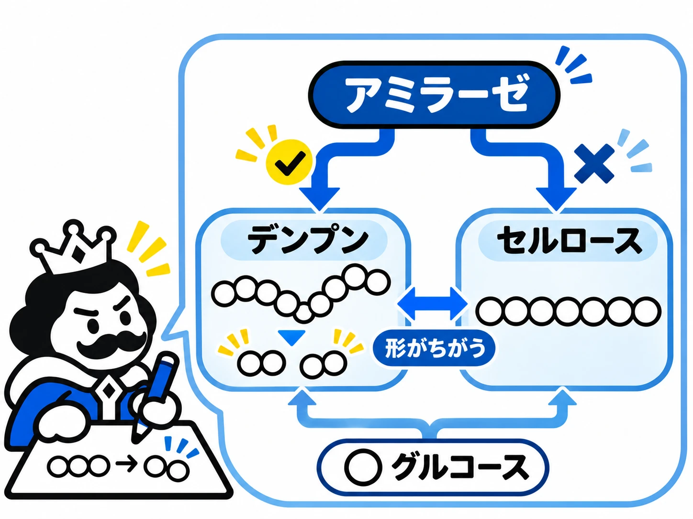

頭のいい人が絶対やらない勉強法
朝倉 徹大（受験の王様）
（題は、まだ決まっていない）
いきなりですが、
10秒だけ、付き合ってください。
10秒で、次の11個の数字を覚えきってください。
１ ４ ９ １ ６ ２ ５ ３ ６ ４ ９
はい、終了。
…本を伏せて、言えますか？
たぶん、ほとんどの人が６個目か、７個目で、怪しくなったはずです。
安心してください。
まず、それが普通です。
では、１つだけ、教えます。
見方を少し変えた上で、覚えてみてください。
１×１ ２×２ ３×３ ４×４ ５×５ ６×６ ７×７
↓
１ ／ ４ ／ ９ ／ 16 ／ 25 ／ 36 ／ 49
さて、どうでしょうか。
この法則を知ってしまうと、
もうさっきまでの「見方」「覚え方」には戻れませんよね。
もう一度だけ見てみてください。
１ ４ ９ １ ６ ２ ５ ３ ６ ４ ９
もう10秒もいりませんよね？
さて、今、何が起きたのか。
さっきと、今で、あなたの“記憶力”は変わっていません。
集中力だって、やる気だって、１分前と同じままです。
必死に覚えようとして、声に出すことも、
書いて覚えることもあなたはしていないはずです。
そう、覚えるための、努力の量は、むしろ減ったはずです。
それなのに、覚えられたんです。
変わったのは、数字の見方だけです。
さて、「頭がいい」という言葉がありますよね？
この言葉は、たいてい、生まれつきのものとして使われます。
「あの子は頭がいい。自分は頭が悪い……」
でも、さっきの11個の数字の問題、どうでしたか？
あなたは、１分前よりも、確実に、正確に、多くを覚えられるようになったはず。
生まれつきのものは何一つ、１ミリも変わっていないのに。
「やり方」を知る。
それだけで、同じ時間で頭に入る量が変わる。
変わるから、点数が伸びるんです。
"頭がよくなる"って、こういうことです。
でも、多くの生徒は、一番肝心なところを教わらないんです。
学校や塾でこんなことを言われたことがあると思います。
「間違えた問題は、何度も復習しなさい」
「単語は、何度も繰り返しやりなさい」
「勉強計画を、ちゃんと立てなさい」
どれも正しいです。
でも、復習って、どうやるんでしょうか。
繰り返すって、どういうふうに、何回繰り返すんでしょうか。
そもそも、計画って、どう立てるんでしょうか。
”正しいこと”は言われているのに、
結局、何をどのようにやるのかは、１つも決まっていません。
だから、変わることができないんです。
もっと詳しい本を開いてみても、同じです。
「人に説明するつもりで、勉強しなさい」
よくこんなことが書いてありますよね。
確かに、これは、本当に効果があります。研究でも確かめられていることです。
でも、説明するつもりというのは、頭の中で何をすることなんですか？
声に出すんですか？ 心の中でいいんですか？ 説明の途中で止まったら、どうすればいいんですか？
「忘れる前に復習しなさい。１日後、１週間後、１ヶ月後に……」
こんなことも書いてありますよね。これまた、”正しい”です。今回のアドバイスに関しては、具体的な数字まであって、いいですよね。
でも、これを、１ヶ月だけでもいいのでやってみてください。（実際に、やろうとしてみたことがある人も多いはず）
仮に、１日に５つ、新しいことをやるとします。
１つにつき、１日後、１週間後、１ヶ月後。３回、復習をしていきます。
１ヶ月経つと、１日にやるものが、新しい５つと、復習の15で、合わせて20になります。
１教科でこれだったら、５教科なら、１００です。
学校行事、部活、恋愛、定期テスト、模試。
やることが沢山ある僕たちに、全部はできると思いますか？できるわけがありません。
だとしたら、どれを捨てますか？
どれを捨てるのか。そこから先は、たいてい書いてありません。
学校も、塾も、合格した先輩も、教えてくれません
言っていることは”正しい”んです。
正しいのに、聞いても、結局、変わらない。
「もっと具体的に教えてくれてもいいじゃないか（怒）」
と受験生時代、勉強が大嫌いで苦手だった僕は思っていました。
なぜ、誰も教えてくれないのか？
理由は、１つです。
「見えない」からです。
・頭のいい人が、問題を見た瞬間に何を考えているか。
・どこで手を止めて、何を書いていないか。
・覚えたあとに、何をして、何をやらないか。
これらは、全部、頭の中で起きています。
偏差値70を超えている”あの子”も、学年１位を取る”あの子”も、
同じ部活で同じ条件なのに優秀な”あの子”も
みーんな、頭の中で何が起きているのか、
何をしているのかは、外からは、１ミリも見えません。
試しに、クラスで一番点を取るあの子に聞いてみてください。
「どうやって勉強してるの？」
たぶん、こう返ってきます。
「基礎を、ちゃんと固めただけだよ」
「問題文を、ちゃんと読んでるだけ」
「復習を、ちゃんとやってるだけ」
さて、その"ちゃんと"の中身は、わかりますか？
何までできて、"ちゃんと"なのでしょうか。
結局、その中身が、見えない。
見えないから、マネできない。
そうして、どんどん差が開くんです。
気づかないうちに…
周りから見たら、同じように机の前に座って、"勉強"はしている。
でも、中身が、まったく違うんです。
だから、あなたのせいじゃないんです。
”結果が出る正しいやり方”が見えなかっただけです。
だからこそ、この本で、”結果が出る正しいやり方”を全部、見える化します。
頭のいい人が、何をやっているのか。
そして、何を、絶対にやらないのか。
その瞬間、頭の中で、何を考えているのか。
45個。１つ残らず書きます。
隠すところは、１つもありません。センスも才能も、いりません。
さっきの11個の数字で、もう証明されています。
あなたの記憶力は１ミリも変わっていないのに、覚えられる量が変わりました。
勉強している中であなたが悩むであろう場面、壁にぶつかった時になどにどうすればいいのかを見える化していきます。
書いてあることを、
徹底的にパクってください。
過去、沢山の生徒たちの逆転劇を、一番近くで見てきました。
・10ヶ月で、全教科の偏差値が70を超えて、早稲田に合格。
・通信制高校に転校した後、１年で河合塾の模試で、全国１位。
・工場勤務から、早稲田の法学部を含めて、受験した法学部に全勝。
・偏差値50台の高校から、現役で国公立の医学部に合格。
・赤点常連の問題児だった中学３年生が、２ヶ月で学年１桁。
挙げ始めたら、キリがありません。勉強サポートの活動を通して、僕がずっと証明してきたこと。そして、これからも証明していくこと。
「人は、誰だって、変われる。」
準備はいいですか？
次は、あなたの番です。
10秒だけ、付き合ってください
はじめに 「お前の勉強法、ぜーんぶ、ズレとる。」
この本の使い方
第１章 頭のいい人は、「ズレた努力」をしない
01 みんながやっているから、正しいと思う → みんながやっている。だから、一度疑う
02 覚えるために、何度も読む → 閉じて、何も見ずに思い出す
03 「自分に合った勉強法」を探す → スラスラ進む時は、頭を使っていない
04 やみくもに、全部頑張る → 結果 ＝ 戦略 × やり方 × 量。１つが０なら、０
05 まとめて、一気にやる → 同じものを、別の日に、もう一度やる
06 基礎を固めてから、解こうとする → 早く解いて、早く間違えて、早く直す
コラム ダメなままでいることこそ、ダメだ
第２章 【インプット】頭のいい人は、「入れるだけ」で終わらない
■ 理解編
07 人に説明できないまま、次へ進む → キーワード３つで、30秒説明する
08 １ページ目から、丁寧に読む → 先に、全体像をさっとつかんでから、進む
09 キリのいいところまで、休まずやる → 25分で区切って、１分で思い出す
コラム 休憩の質は、目に入るもので変わる
10 教科書を、なんとなく読んで終わる → 止まった文は、丸と矢印で、図式化する
11 教科書の言葉を、そのまま覚える → 自分の知っていることに、つなげて言い直す
■ 暗記編
12 単語を、書いて覚える → 書かずに、見て、思い出す回数を増やす
13 黙って、じっと見つめて覚える → 目を閉じて、声に出す
コラム おすすめの勉強場所は、どこですか
14 単語を、赤シートだけで覚える → イメージとセットにしてから、思い出す
15 全部覚えてから、問題を解く → 問題を解きながら、覚える
第３章 【アウトプット】頭のいい人は、解けた問題を数えない
■ 問題の解き方
16 解説を読んで、「わかった」で終わる → 問題文だけを見て、白紙に、最初から再現する
17 力がついてから、過去問を解く → まず解いて、敵と、今の自分を知る
18 正解した問題に、○をつけて終わる → 正解も、間違いの選択肢も、根拠を取る
19 時間を測らずに、解けるまで解く → 時間内の点と、時間をかけた点の、２つを測る
20 同じ単元を、まとめて解く → 解く練習は、単元を混ぜる
■ 復習の仕方
21 わからない問題を、わかるまで粘る → 試すことがなくなったら、答えを見る。閉じて、もう１回解く
22 ケアレスミスを、「次は気をつける」で終える → 白紙で確かめて、エラーに名前をつける
23 ２周目も、最初から全部解く → ○△×を記録して、△と×だけ回す。終わりの基準も決める
24 「わからない」で、終わりにする → どこまでわかって、どこからわからないかに、分ける
25 １冊が終わる前に、次の１冊を買う → 基礎の１冊を、取り切るまで、やり込む
コラム 参考書を選ぶ時の、３つの基準
第４章 【継続】頭のいい人は、やる気に頼らない
■ 計画編
26 明日の自分に期待して、計画を立てる → 計画の横に実績を書く。見積もりは、１・５倍にする
27 「何時間やるか」で、計画を立てる → 時間ではなく、ノルマ（何を、どこまで）で決める
28 やる気が出た時に、目標を立てる → 「○○したら、△△する」のif-thenプランで決める
コラム 「でも」「だって」のあとに、一言だけ足す
29 「毎日２時間やる」と、決める → 完璧に続けようとしない。MinとMaxを決めて、０の日だけ作らない
30 時間が足りない時、まず、増やそうとする → 増やす前に、削る。使える時間の何％を使えたかを見る
■ 集中編
31 好きな音楽を聴きながら、勉強する → 無音か、歌詞のない音にする
32 「スマホは触らない」と、心に決める → 別の部屋に置く。視界から消す
コラム 「〜しちゃう」じゃない。自分で、選んでいる
33 早起きして、朝型になろうとする → 頭が冴える時間に、一番重いものを置く
コラム 「みんなと同じ」の空気に、流されるな
34 机を片づけてから、勉強を始める → 片づける前に、１問だけ解く
35 出された宿題を、全部同じ本気でやる → 先に、力を入れるものと、流すものを分ける
■ モチベ編
36 合格体験記を読んで、やる気を出す → 合格体験記を、先に自分で書く
コラム 未来の自分から、手紙が届いたよ
37 失敗した自分を、厳しく責める → 親友が同じ失敗をしたら、何と言うか
38 できる友達と比べて、落ち込む → 比べる相手は、先週の自分
39 「自分はできる」と、言い聞かせる → できない、ではなく、まだできていない
40 不安や緊張を、頭の中で消そうとする → 不安は紙に出す。緊張は、「ワクワクしている」と言いかえる
コラム 冷笑に、負けるな
第５章 【アップデート】頭のいい人は、１人で頑張らない
41 全部、自分１人でやろうとする → 途中で見せて、指摘をもらう
コラム 周りの５人の平均が、自分になる
42 「ここ、全部わからないです」と質問する → わかった最後の１行を、指で押さえる
コラム 無駄なプライドが、邪魔をしていた
43 AIに、答えを教えてもらう → 考えるのは自分。AIには、ヒントと反論をもらう
44 「AIに頼るのはズルだ」と、自力にこだわる → 分析と問題づくりは、AIに任せる
45 勉強に使うものを、値段だけで決める → 時間が短くなるものには、迷わず使う
コラム 僕が決断をする時に、自分に聞くこと
46 合格を、ゴールにする → さっさと勝って、次の勝負へ。アップデートし続ける
巻末
45を、１枚に
６つの言葉で、初めての場面を解く
保護者の方へ
参考文献
おわりに 笑わなかった人が、１人だけいました
「お前の勉強法、ぜーんぶ、ズレとる。
偏差値70を安定して超えていないなら、
つべこべ言わず、俺の言うことを聞け。」
浪人が始まった日に、恩師に言われた言葉です。
僕はなにも、言い返せませんでした。
その数週間前、大学受験で「地獄」を見ていたからです。
勉強時間は、誰よりも長かった。それなのに、最低偏差値は42。受けた大学と学部、10個。全部、不合格。そう、全落ちです。
自己紹介が遅れました。朝倉 徹大（てった）と言います。早稲田大学に合格した後、今は、学部別・逆算個別戦略塾THINKINGの塾長をしながら、ＳＮＳでは「受験の王様」というアカウントを運用しています。嬉しいことに、Instagramでは９万人以上、公式ＬＩＮＥでは４万人以上の人に登録してもらっています（執筆時点）。英語講座も含めて、これまで２０００人以上の生徒を見てきました。
でも、今の状態からは想像できないほど、遠い場所からのスタートでした。
口だけ野郎の、ダサい男でした
高校には、サッカーを本気でやるために入りました。
部員は１００人以上。本気で全国大会を目指していました。嬉しいことに、高校２年生の時から、上級生にまじって試合にスタメンで出させてもらっていましたし、３年生になったら、副キャプテンと副部長になることができました。そうです。僕は、高校生活をサッカーに捧げていました。（文化祭も体育祭も恋愛も、ぜーんぶ本気でやっていました。勉強を除いて……）
ただ、高３の夏「サッカーで全国大会に出場」という、夢は破れました。全国大会への切符は、取れなかったんです。
大ピンチ到来です。部活を引退した瞬間、サッカーという「威張れるもの」がなくなった僕には、何も残っていませんでした。
僕という人間は「サッカーがなくなったら空っぽ」だったんです。勉強があまりにも苦手だったので、赤点を取ったり、クラス最下位を取ったりしていたこともあり、仲のいい友達からは「お前の脳みそピーマンか！（笑）」と言われていました（ピーマンは中身がスッカスカなのでピーマンです笑）
「どうしよう…？」そう真剣に人生を考えた時に、残っていたのは勉強でした。そこで僕は決めます。ここで、変わると。
「どうせ受験を頑張るなら、私立トップの早稲田か慶應っしょ。」そう思って、志望校は早稲田にしていました。
「そこからは淡々と勉強をし続けて、日に日に成績があがっていき、模試でもＡ判定、過去問でも高得点を取れるようになりました。ど底辺状態から奇跡の大逆転合格を果たすことができました…！！」とは、なりませんでした。
口だけです。全然やらない。当たり前に、模試はずっとＥ判定。
「定期テストは、受験に関係ない」
→受験科目ですら、赤点ギリギリ
「問題形式、ぜんぜん違うしな」
→模試の偏差値は、40台
やらない言い訳探しの偏差値は80でした。言い訳だけは、うまい。でも、行動はしない。口だけ野郎の、ダサい男でした。
「努力の天才」と呼ばれて、全部落ちました。
そんな僕のことを見て思ったのかわかりませんが、高校で一番尊敬していた友達が、ある時、こんなことを僕に言いました。（この人は、高校には首席で入学。現役で大阪大学に進学しています。）
「結局、受験は、覚悟の差だよな。
みんな受かりたいっていうけど、ほとんどの人が、本気でやらん。」
ブッ刺さりました。
サッカー部では、トレーニングで手を抜く部員を怒るくらい、本気で結果のことだけを考えてやっていました。
「口だけでやっていない奴が、一番ダサいぞ。」
そう言っていた僕が、部活を引退したら、口だけの奴になっていたんです。
「このままじゃ、ダサい人間のままで終わる。変わらないとダメだ。変わる。」
そこから、覚悟を決めました。部活を正式に引退してからは、１日13時間以上。年末には「２日で30時間を超えないと年を越せません」という企画を、友達と一緒に勝手にやっていました。
勉強時間を記録するアプリ（studyplus）で、友達と時間を見せ合っていたので、周りからはこう言われていました。
「マジで、努力の天才だよな」
「頑張ってるの見て、ほんと刺激もらうわ」
嬉しかったです。自分でも、”努力”はしていると、思っていました。
結果は、全落ちでした。
誰よりもやったのに、１つも受からなかった。
そこで言われたのが、最初の言葉です。
「お前の勉強法、ぜーんぶ、ズレとる」
量が足りなかったんじゃない。
やり方が、全部ズレていた。
だからこそ、浪人の１年は、１からやり直しました。中学英語から、本当に基礎の基礎からです。しかも選択科目は、現役の時の日本史と数学から、世界史に変えました。ゼロからのスタートで、最初の模試は、もちろん40台です。
そして、ただ量をやるのをやめました。どう勉強するべきなのかを調べて、プロに徹底的にアドバイスをもらって、勉強法そのものを勉強しました。
（あなたは、何冊も読まなくて大丈夫です。この１冊に、全部入れましたので。）
10ヶ月後。
全科目で偏差値70を超えて、早稲田大学に合格しました。
ゼロから始めた世界史も余裕で合格点以上を取ることができました。
「でも、それができたのって、もともと頭がよかったからですよね？」
これ、何百回も言われてきました。
ただ、はっきり言って、センスも才能も、ありませんでした
もし、もともと頭がよかったら、10個も落ちません（笑）
受験費用だけで35万円もドブに捨ててしまってるんです……（親には頭が上がりません……）
ただ、これは口で言っても伝わらないな、と思いました。だったら、証明するしかない。
「人は、誰だって、変われる。」
この一言を証明するために、予備校のアルバイトから始めました。個別担当の生徒がバンバン点数を伸ばして結果を出し、１年で、飛び級でエリアのリーダーになりました。大学２年になる前には、個人でもサポートを始めて、生徒を１人ずつ徹底的に見るようになりました。これまで指導してきた生徒は、北海道から沖縄まで。47都道府県、制覇しています。ベトナムのインターナショナルスクールに通い、ベトナムに住んでいる生徒もオンラインで指導をしていました。
その結果、起きたことです。
・高校で不登校になり、通信制へ
→全統模試で全国１位。早稲田大学に現役合格
・３日坊主で、勉強が大嫌いだった中学生
→毎日机に向かうようになって、学年トップ
・高校を出て、工場で働いていた
→早稲田を含めて、受けた法学部に全勝
・現役で全落ち。理系から浪人で文転しゼロからスタート
→早慶ダブル合格。
・偏差値50台で、バイトをしながら受験
→早慶全勝
僕は、学部別・逆算戦略の個別サポート塾「THINKING」を代表として運営し、その塾生だけではなく、短期間集中で基礎の基礎からやり直す英語の個別指導もしています。指導が終わったあとにもらう手書きのメッセージは、今では１０００枚を超えました。
写真貼り付け（https://assaaa-blog.com/post_lp/tsakansou/ ）
（本当に、みんなありがとう。自慢の生徒です）
受験の先まで効く、一生モノの武器です
話は、受験で終わりません。
受験期間に「結果の出し方」を身につけた生徒たちは、大学に入ったあとも止まりませんでした。在学中に公認会計士試験に一発合格。英検１級。大学１年でIELTS７・０。宅建合格。学費免除の特待生。
「勉強ができるようになる」というのは、学び方を知る、ということです。
学び方を知っていれば、この先、叶えたい目標が出てきた時に、叶える力があります。そして「自分で変えた」という経験は、早ければ早いほど、あとの人生に何倍にもなって効いてきます。
本書は、目の前の定期テストや模試のために、読んでもらって構いません。
でも、手に入るのは、その先までずっと使える「一生モノの武器」です。
「勉強して結果を出す力」は誰にも盗むことができません。
そんなこんなで、僕が直接関わる生徒だけではなく、Instagramなどを見てくれている生徒たちにも、同じように結果を出してほしい。そのために、活動を始めてからずっと、１人ずつ、頭の中で何を考えているのかを、聞いてきました。
「今、何を考えた？」
「そこで、なんで手が止まった？」
「それ、覚えたって、どうやって確かめた？」
そうしたら、伸びる子に、同じものが見つかったんです。
やっていることだけじゃ、ありませんでした。やっていないこと、でした。
僕自身、誰よりも勉強ができなくて苦しんだ人間です。人より多く努力して、その努力を全部無駄にした経験があります。だから、これだけは先に言わせてください。
努力に、酔ってはいけない。
If Ｉ play, Ｉ play to win.
やるからには、勝ちにいく。そして勝負に勝つためには、まず、負けないことです。負ける原因になっていることを、先にやめる。これが、結果を出す上では必須だと確信しました。
バケツに、穴が空いているとします。水を入れても、下から漏れていきます。
あなたなら、どうしますか？
穴を、ふさぎますよね。当たり前です。
でも、勉強でこれをやってる人は、ほとんどいません。
点が出ない時、ほとんどの人は、もっと長くやる。もっと早く起きる。もっと量を増やす。
「もっと！もっと！」と量を増やすんです。選択肢Ｂ（水をもっと注ぐ）を、多くの人が選んでしまう。
穴が空いたまま、水を増やしているんです。
× 点が出ない → もっと長く。もっと早く。もっと量を。
○ 点が出ない → 先に、穴をふさぐ。
現役の時の僕が、まさにそれでした。
だから、順番があります。
① やってはいけないことを、避ける（＝穴をふさぐ）
② 正しいやり方を、知る（＝水の入れ方を覚える）
③ そのやり方を、徹底的にパクる（＝そのうえで、沢山注ぐ）
この順番を守ってくれたら、受験は変わります。
いえ、人生も変わります。
この本に書いてあること
「頭のいい人が、何をやっているのか。そして、何を、絶対にやらないのか。その瞬間、頭の中で、何を考えているのか。」
これこそ、僕自身が、勉強が苦手で、いくら勉強しても伸びなかった時に、一番知りたかったことです。
この本は、それを全部、見える形にしたものです。
第１章
頭のいい人の、絶対法則６
どの章よりも大事な、土台です。ここだけは、飛ばさないでください
第２章〜第５章
「インプット、アウトプット、継続、アップデート」の場面ごとの、39個
45個、全部こうなっています。
×頭のいい人が、絶対にやらないこと
○かわりに、何をどうやるか
読んだら、そのままやってください。それだけで、いいです。
そしてぜひ嬉しい報告をしてください。
「パクっただけで、伸びました！」と。
僕が10ヶ月かけて、恩師に叩きこまれたこと。そのあと、２０００人以上の頭の中を聞いて、見つけたこと。全部、書きました。
では、第１章から。
始めていきましょう。
※注意※第１章だけは、最初に読んでください。全部のもとになっている、６つの絶対法則です。前から１つ１つ見ていくのがオススメですが、第２章から先の39個は、順番に読まなくてもいいです。今困っていることから、開いてください。
何から手をつければいいか、わからない 04 17 35
授業を聞いても、残らない 09 16
教科書を読んでも、頭に入らない 08 10
覚えても、すぐ忘れる 02 05 12
単語が、覚えられない 12 14 13
覚えたのに、テストで出てこない 02 11 19
解説を読んでも、できるようにならない 16 21
同じミスを、繰り返す 22 23
初めて見る問題で、手が止まる 20 21
テストで、時間が足りない 19
問題集が終わらない。何周すればいいか、わからない 23 25
宿題や提出物が、多すぎる 35
計画が、守れない 26 27 28 29
部活で、時間がない 30
机に向かうまでが、長い 28 34
集中が、続かない 09 31 32
朝、起きられない。昼、眠い 33
やる気が、出ない 06 28 36
点が下がって、落ちこんでいる 37 38 39
不安で、手につかない。本番で、緊張する 40
効果的なAIの使い方がわからない 43 44
質問のしかたが、わからない 41 42
巻頭ページで、「誰も教えてくれない」と書いたことがあります。答えは、ここにあります。
復習は、どうやるのか 05 23
単語は、どういう形で、何回繰り返すのか 12
計画は、どう立てるのか 26 27
「説明するつもりで」とは、何をすることか 07
「１日後、１週間後、１ヶ月後」が続かない時 05 12
「ちゃんと」の中身は、何なのか 10 22 25
質問ページ 頭のいい人が、絶対にやらないこと
本文 なぜ、それだと伸びないのか。かわりに、何をするのか
頭のいい人と伸びない人の違い 同じ場面で、２人が考えていること
今日からできる３ＳＴＥＰ 手順を３つ。「できた」の基準つき
まとめ 一言と、自分への問い
読むだけで終わらせないでください。各項目にある「今日からできる３ＳＴＥＰ」の、ＳＴＥＰ01を、今日やる。それが、この本の使い方です。45個を全部やろうとしなくていいです。全部やろうとすると、全部が途中で終わります。（理由は、04番に書きました）
ところどころに、「王様の一言」と、コラムがあります。やり方ではなく、気持ちの話です。しんどい日は、そこだけ読んでも、かまいません。
第１章
頭のいい人は、「ズレた努力」をしない
【最初に読む、６つの絶対法則】
「お前の勉強法、ぜーんぶ、ズレとる。」
はじめにで書いた、恩師の言葉です。僕は、誰よりも長く勉強していました。それでも、受けた10個、全部落ちました。一度、大失敗しました。時間は、足りていました。頑張りも、足りていました。ズレていたのは、やり方です。やり方がズレていると、どれだけ頑張っても、結果は出ません。やり方が合っていれば、頑張りは、結果につながります。
では、合っているやり方とは、何なのか。恩師に、10ヶ月かけて叩きこまれたこと。そのあと、２０００人以上の生徒を見て、確かめたこと。まとめると、６つでした。教科が変わっても、学年が変わっても、この６つは変わりません。だから、「絶対法則」と呼びます。絶対法則01 疑う絶対法則02 思い出す絶対法則03 負荷絶対法則04 戦略絶対法則05 分散
絶対法則06 速度頭のいい人は、特別なのではありません。やり方が、この６つからズレていないだけです。第２章からは、場面ごとのやり方を書きました。授業の受け方も、単語の覚え方も、計画の立て方も、もとは、この６つです。だから、まず、この６つをつかんでください。
絶対法則01
疑う
みんなと同じ、で安心しない
自分の当たり前を、一度疑う
「自分のやり方は、間違っている」
そう思いながら勉強している人は、ほとんどいません。みんな、「これで合っている」と思って、やっています。でも、あなたが普段やっていること、当たり前だと思っていることが、実は違っていた。その前提から間違っていたとしたら、どうでしょうか。
結果を出し続ける人は、まず、「自分の当たり前」を疑います。そのうえで、本当に正しいやり方は何かを、確かめていきます。
① やってはいけないことを、避ける
② 正しいやり方を、知る
③ そのやり方を、徹底的にパクる
「はじめに」でも書いた通り、結果を出すために守るべきなのは、この順番です。①を飛ばして③から始めると、間違ったやり方のまま、量だけが増えていきます。頭のいい人の絶対法則、１つ目。「疑う」を、具体的に見ていきましょう。
あなたがやっている勉強法、本当に結果が出ますか？まず、１つ聞かせてください。次の４つの中に、あなたがやっているものはありますか？◻︎参考書や教科書を、何度も読み返す◻︎覚える時に、教材に蛍光ペンなどで線を引く◻︎学んだことを、ノートなどにまとめる◻︎好きな音楽を聴きながら、勉強する
どうでしょうか。１つはやったことがあるって人が多いと思います。「毎日のようにやってる勉強です」っていう人もいると思います。単刀直入に言います。この４つ、科学的には効果が低いとされています。
「いや、ほんまかいな。」「嘘つけ。みんなやってるわ。」
「先生におすすめされた勉強法だよ。」「先輩もやっていたって言ってたよ。」
そんな声が聞こえてきそうなので、上の３つを、１つずつ説明していきます。（音楽は、31番で説明します）
「何度も教科書を読みなさい」
「繰り返し読まないからダメなんだ」
言われたことがある人、多いですよね。実際、アメリカの名門大学の学生に、普段の勉強法を聞いた調査では、84パーセントが「読み返し」を挙げていました。半分以上が、それを１位に挙げています。教科書を何度も読み返すのは、世界で一番やられている勉強法の１つです。
高校生と大学生１５５人に、同じ文章を何度も読ませて、そのあと穴埋め問題を解かせた実験があります。１回読んだ人よりも２回読んだ人のほうが、点が高かった２回読んだ人と４回読んだ人は、ほとんど変わらなかった２回目までは、点が上がっています。でも、そこから先は、上がりません。
１回しか読まないよりは、２回読んだほうがいい。それは、間違いありません。でも、そこから先は、上がりません。４回読んだ人と２回読んだ人の点が同じ、ということは、３回目と４回目に使った時間は、丸ごと消えているということです。何度も読むと、頭に入った感じがするのは、なぜかここが、一番大事なところです。
理由は、はっきりしています。２回目は、スラスラ読めるからです。１回目より楽に、速く、引っかからずに読める。その感じを、人は「わかった」と受け取ります。でも、スラスラ読めるようになったのは、文章に慣れただけです。覚えて使えるようになったからではありません。スラスラ読める。でも、本を閉じたら、言えない。
この取り違えを、専門用語で「流暢性（りゅうちょうせい）の錯覚」と言います。（覚えなくてOKです）単語帳をぱらぱらめくって、見覚えのある単語が並んでいるのを見て、なんとなく覚えた気になる。授業のノートを見返して、見覚えがあるから、理解できていると思う。全部これです。頭は、自分がどれだけ覚えたかを、実際より多く感じてしまいます。
読み返すこと自体が、悪いわけじゃありません。読み返すだけで、終わるのが悪いんです。３回目を読む時間があるなら、その時間で、もっと点につながることができます。同じ時間を使うのに、わざわざ効果の低いほうを選ぶ理由は、ありません。その時間で、何をするのか。次の絶対法則02で、すぐに説明します。
「覚えた気がする」と「テストで答えられる」は、別のことです。この本では、このあと、「覚えた気がする」で終わらせずに、テストで答えられるところまで持っていくやり方を、いくつも紹介していきます。
教科書や参考書の内容を、色ペンを使ってきれいにまとめたことがある人もいるかと思います。ただ、これをやっているのに結果が出ていない生徒を、僕は、受験の王様として、本当に沢山見てきました。時間はすごくかかるのに、結果が出ないその代表が、これです。
「まとめノートを作って、成績が伸びたことがありますよ」
そう言われることも、何度もありました。たしかに、伸びることはあります。時間がいくらでもあるなら、やってもいいです。でも、時間は限られています。かけた時間のわりに、点が増えない。それが、まとめノートです。理由は、２つあります。１つ目。ほとんどの場合、教科書を写すだけの『作業』になります。
２つ目。写すだけで終わらせない、本当の「まとめ・要約」は、とても難しい作業です。教科書の中から、どこが大事で、どこが大事ではないかを、自分で選ぶ。選んだものを、自分の言葉で、短く言い直す。勉強が苦手な人にとっては、かなり難しいことです。まとめて書くことで得られるものより、そこで失う時間のほうが、はるかに大きいんです。
教科書に蛍光ペンで印をつける。これも、やったことありますよね。結論から言います。覚えたいことを頭に入れるためには、使えません。大事なところに印をつけると、安心しますよね。印をつけた時点で、脳が満足しちゃうんです。でも、やったのは、大事なところに印をつけることだけです。中身は１つも頭に入っていません。
実際に、歴史の教科書を使った実験があります。下線を引きながら読むグループと、引かずに読むグループで、１週間後にテストをしました。テストの問題は、２種類ありました。１つは、教科書の１か所を見れば、答えられる問題です。たとえば、「条約が結ばれたのは、何年ですか」みたいな問題のイメージです。
もう１つは、教科書の何か所かをつなげないと、答えられない問題です。たとえば、「貿易が始まって、なぜ、人々の生活は苦しくなったのですか」みたいな問題のイメージです。１つ目の問題では、差がありませんでした。ところが、２つ目の問題では、下線を引いた人のほうが、なんと、点が低くなりました。
線が引いてあるところだけに目が行って、文章全体のつながりが見えなくなっていた、ということです。この結果からわかるのは、英語の長文や現代文みたいに、文と文の関係を読む科目では、「マーカーで線を引く勉強」は、やらないほうがまし、ということになります。参考イメージ（見出しとかの部分はなくてもいいかも？）
ここまでで何を伝えたいかというと、多くの人がやっているから、それが一番結果が出る、とは限らないってことです。勉強には、こういうものが、正直、沢山あります。せっかく頑張ったのに、結果が出ない。こんなに悲しいことは、ありません。だからこそ、まず、自分の当たり前を、一度疑って欲しいんです。
「でも、先輩はそれで受かったって言ってました」
ここまで読んで、そう思った人もいると思います。学校の先生。合格した部活の先輩。昔、受験をした親。みんな、自分のやり方で勝ってます。だから、そのやり方を教えてくれる。全部、善意です。ただ、昔からこういう言葉があります。勝ちに不思議の勝ちあり、負けに不思議の負けなし。
勝つ時には、運やタイミングが混じることがある。だから、なぜ勝てたのか、本人にもわからないことがある。でも、負ける時には、必ず原因がある。たまたま負けた、ってことは起きないんです。先輩が受かったのは、本当です。
でも、そのやり方のおかげで受かったのかどうかは、本人にもわかりません。その年の倍率。たまたま出た問題。もともと得意だった教科。全部、混ざってます。ただ、１つだけ、確かなことがあります。やってはいけないことをやったら、誰がやっても結果は出ません。倍率にも、環境にも、関係ありません。
だからこの本は、誰か１人の勝ち方じゃなくて、全員に共通する「やってはいけないこと」から書いてあります。補足として説明しておきますが、「疑う」ということは、悪いことではありません。「疑う」と聞くと、自分を否定するみたいで、嫌な感じがするかもしれません。
ただ、違います。「疑う」のは、今のやり方の中から、直す場所を見つけるためです。直す場所が見つかれば、やり方は、前より良くなります。自分が今、当たり前にやっていることを、一度、「疑う」が大事になります。結果を出し続ける人は、これを１回で終わらせません。自分のやり方を、何度も疑って、何度も直してアップデートをし続けている人たちなのです。
選んだ1つを1週間続けて、前と比べられたらOK！
まとめ
「みんながやっている」と「結果が出る」は、別のこと。
① 読み返す、まとめる、線を引く。みんながやっている３つは、実は効果が低い
② 先輩が受かった理由は、本人にもわからない
③ やってはいけないことをやると、誰がやっても結果は出ない
みんながやっているから正しい、とは限らない。
だから、自分の当たり前を、一度疑う。
疑うのは、直す場所を見つけるため。
迷ったら、自分に聞きます。「これで、点は上がる？」
王様の一言
「うるさい、黙ってろ。これは、俺の人生だ。同調圧力に、負けるな。」
思い出す
覚える訓練ではなく、思い出す訓練をする
５時間、勉強した日の夜。ふと、思います。
「今日って、何を勉強したっけ」
…出てこない。テストの日も、同じです。沢山やったはずなのに、解けない。勉強時間は、足りていました。ちゃんと、追い込めていました。でも、頭に、残っていなかったんです。では、結果を出している人は、何が違うのか。
・声に出して覚える人
・白紙に書き出す人
・人に説明する人
・歩きながら、頭の中で言う人
先生や、合格した先輩に聞くと、やり方は、ばらばらに見えます。でも、全員が、同じことをやっています。何も見ずに、思い出す。僕が２０００人以上の生徒を見てきて、結果を出した人に共通していたことです。そして、科学的にも、効果が高いと確かめられている方法です。「アクティブリコール」と呼ばれています。
頭のいい人の絶対法則、２つ目。「思い出す」を、具体的に見ていきましょう。
信号機の赤は、右と左、どっちですか？
道路の上に、横に並んでいる信号機を、思い浮かべてください。赤は、右ですか。左ですか。
…
答えは、右です。左から、青、黄、赤の順に並んでいます。迷った人、多いと思います。信号機を見たことがない人は、いませんよね？生まれてから今日まで、何百回も見てきたはずです。ただ、それでも、出てこない。理由は、１つです。見た回数は多くても、「思い出そう」としたことが、一度もないからです。
教科書も、同じです。何度読んでも、思い出そうとしなければ、信号機と同じことが起きます。そして、テストの日、教科書は開けません。自分の頭から、思い出すしかありません。
同じ参考書を使っている、２人がいます。Ａ １週間で、１００ページ進んだＢ １週間で、３００ページ進んだほとんどの人が、Ｂと答えます。同じ１週間で、３倍進んでいるからです。意地悪な答えですが、僕の答えは「これだけでは、わからない」です。そもそも、”勉強”を分解すると、２つあります。入れる 読む、聞く、覚える
思い出して取り出す 何も見ずに、言う、書く、解くテスト本番に点になるのは、２つ目ができるようになった分だけです。だからこそ、３００ページ読んでも、教科書を閉じたら何も言えないなら、点にはなりません。１００ページでも、閉じて言えるなら、それは点になります。
「勉強した」の意味を、今日から、こっちに変えてください。「どれだけ読んだか」「どれだけ覚えたか」「どれだけ時間やったか」のインプット第一主義では、点数を伸ばすことは厳しいです。だからこそ、頭に入れておいて欲しいことが１つ。”勉強”において大事なことは、どれだけ読んだか、ではない。どれだけ思い出せるようになったか。
実際に、実験で確かめられています。ワシントン大学の実験です。学生に同じ文章を勉強してもらって、２つのグループに分けました。
① ４回、繰り返して読む
② １回読んで、あとの３回は、何も見ずに思い出して書く
勉強した直後のテストでは、１のグループのほうが、点が高くなりました。ところが、１週間後にもう一度テストをすると、逆になります。２のグループのほうが、大きく上でした。使った時間は、同じです。差がついたのは、読んだ回数ではなく、思い出した回数です。
01番で、「３回目と４回目に使った時間は、丸ごと消えている」と書きました。その時間を、思い出すことに使えばいいんです。
勉強は、２つの力でできています。入れる力 読む、聞く、覚える思い出す力 何も見ずに、言う、書く、解くほとんどの人は、勉強時間のほとんどを、「入れる」に使っています。読む。聞く。ノートを見返す。勉強が苦手な生徒ほど、中身を聞いてみると多くの場合が「入れる（＝インプット）」の比重が高いです。テストで点を取りたいなら、逆にします。
入れる２：思い出す８多すぎる、と思うかもしれません。でも、さっきの実験を思い出してください。１週間後に勝ったグループは、「１回読んで、３回思い出す」でした。読むのは、４回のうち、１回だけです。１時間勉強するなら、入れるのは12分。残りの48分は、本を閉じて、思い出します。
最初は、きついはずです。まずは半分ずつからで、いいです。そこから少しずつ、思い出すほうを増やしていってください。
何度も読む。ノートにまとめる。やっている時は、気持ちがいいんです。スラスラ進むし、ページも進みます。思い出すほうは、逆です。
「え、全然覚えてないやん」
できていない自分を、毎回、見ることになります。頭も、すごく使います。きついです。だから、ほとんどの人が、読むほうを選びます。でも、最後の試験で勝つのは、きついほうを毎日やってきた人です。なぜ、きついほうが効くのか。次の絶対法則03で、説明します。
思い出すのに、教科書もノートも要りません。勉強というとどうしても「椅子に座り、机でやるもの」だという考えの生徒も多いですが、それだけが勉強ではありません。
・歯をみがきながら、30秒。さっきやったことを、思い出す
・授業が終わったら、休み時間に入る前に、１分。今日の話を、何も見ずに思い出す
・問題集の解説を読んだら、閉じて、今読んだ解き方を、もう一度書く
どれも、立派な勉強です。
では、早速、今、やってみてください。本を、閉じます。指をはさんで、閉じるだけでいいです。この項目で、ここまでに読んできたことを、さっと思い出してください。いくつ、言えますか？
…
どうでしたか。１分前まで読んでいた内容です。難しい話でもありません。それでも、いざ思い出そうとすると、出てこない。01の項目に関しては、もっと出てこなかったかもしれません。５時間勉強した日の夜と、同じことが、今、起きました。「読んだ」と「思い出せる」は、別のことなんです。答え合わせです。絶対法則01 疑う
１ 読み返す、まとめる、線を引く。みんながやっている３つは、効果が低い
２ 先輩が受かった理由は、本人にもわからない
３ やってはいけないことをやると、誰がやっても結果は出ない
絶対法則02 思い出す
１ 信号機の赤は、右か、左か
２ １００ページ進んだ人と、３００ページ進んだ人
３ ４回読む人と、１回読んで３回思い出す人
４ 読むのは気持ちいい。思い出すのは、きつい
５ 歯みがきの30秒。授業のあとの１分
出てこなかったものだけ、そのページに戻って、見てください。「あー、そうだった。そうだった」となるはずです。
ここまでが、２つ目の絶対法則です。この先、本書では、頭のいい人のやり方を、場面ごとに見ていきます。授業の受け方。ノートの取り方。単語の覚え方。間違えた問題の直し方などなど。やっていることは、ばらばらに見えます。でも、よく見ると、ほとんどが同じことをしています。どうやって、「思い出す」回数を増やすか。
授業中に、思い出す 15ノートを閉じて、思い出す 15 16間をあけて、もう一度思い出す 05 12答えを見たあとに、閉じて、思い出す 21頭のいい人は、特別な方法を、45個も知っているわけではありません。「思い出す」を、あらゆる場面でやっているだけなんです。
だから、45個を全部は覚えられなくても、「思い出す」だけは、絶対に頭に叩き込んでほしいのです。
次の日、同じ内容を開く前に思い出せたらOK！
まとめ
「どれだけ読んだか」ではなく、「どれだけ思い出せるか」で決まる。
① 何度見ても、思い出そうとしなければ、頭に残らない
② ４回読むより、１回読んで３回思い出すほうが、１週間後に残る
③ 「思い出す」回数を増やすと、成績は伸びていく
だから、読んだら、閉じる。目安は、入れる２、思い出す８。
迷ったら、「今、何も見ずに言える？」と自分に問いかけるべし！
絶対法則03 負荷
スラスラ進むやり方を、選ばない
「自分に合った勉強法が、見つからなくて……」
「どうやったら、自分に合った勉強法って、見つかりますか」
これまで、沢山の生徒から、聞かれてきました。ただ、この「自分に合った勉強法」というものは、とても危険です。今の自分に合った勉強を、どれだけ続けても、脳力（頭の力のことです）は、鍛えられないからです。実は、調査でも、結果が出ています。自分のタイプに合った方法で勉強しても、成績は変わりませんでした。（あとで、紹介します）
大事なのは、自分に合うかどうかでは、ありません。脳力を鍛えるために、絶対に必要なものが、１つあります。「負荷」です。少しきついことを、やる。そういう意味です。頭のいい人の絶対法則、３つ目。「負荷」を、具体的に見ていきましょう。
自分の名前を、逆から言えますか？
まず、自分の名前を、声に出して言ってみてください。一瞬で、言えたはずです。次に、同じ名前を、フルネームで、逆から言ってみてください。
…
僕の名前の「あさくら てった」なら、「たって らくさあ」です。考える時、「うーん」と、少し止まりませんでしたか？中には、途中でわからなくなって、最初からやり直した人も、いると思います。スラスラ言えた人は、昔、遊びで練習したことがある人だと思います。その場合は、仲のいい友達の名前で、やってみてください。
よく知っている名前です。知らない文字は、１つもありません。それでも、逆から言おうとした時だけ、頭を使いました。「うーん」と止まって、頭を使っている。この状態が、「負荷」です。自分の名前を口にだす時は、負荷が０でした。ただ、逆から名前を言う時は、負荷がかかりました。同じ名前でも、やり方を変えただけで、負荷は変わります。
勉強でも、同じことが起きます。教科書を読む → スラスラ進む。負荷は、ほぼ０閉じて、思い出す → 「うーん」と止まる。負荷がかかる同じ教科書の、同じページです。違うのは、負荷があるかどうかだけです。では、負荷があるかどうかで、何が変わるのか。
数学の問題集を、30分やったとします。10問、全部○でした。
「よしよし、調子いい。このやり方、自分に合ってるな」
この瞬間、気持ちいいですよね。でも、この30分で、新しくできるようになったことは、０個です。10問とも、始める前から解けた問題だったからです。筋トレで、考えてみてください。１キロのダンベルを１００回上げても、筋肉はつきません。筋肉がつくのは、「重い」と感じる重さを、上げた時だけです。頭も、同じです。スラスラ解ける
→もう、できること。何回やっても、できることは増えない
うーん、と止まる
→まだ、できないこと。できることが増えるのは、こっちだけ
「うーん」と止まっている時間こそ、勉強です。手は、止まっています。でも、その時、頭は、しっかり使われています。
絶対法則02で、「なぜ、きついほうが効くのか。次の絶対法則03で、説明します」と書きました。その答えが、「負荷」です。「何も見ずに思い出す」には、負荷がかかります。「繰り返し読む」には、ほとんど、かかりません。だから、１週間後に、差がついたというわけです。
「このやり方、自分に合ってる」
そう感じるのは、どんな時でしょうか。スラスラ進む時。疲れない時。続けやすい時。つまり、今の自分が、楽にできる時です。慣れていて、不安がなくて、楽にできる。今の自分にとって、そういう範囲のことを、「コンフォートゾーン」と呼びます。居心地のいい場所、という意味です。（名前は、覚えなくてOKです）成長とは、この範囲が、広がることです。
範囲の外に、少しだけ、はみ出す。「うーん」と止まる。止まった問題が、解けるようになる。すると、その問題は、楽にできる範囲の中に入ります。この流れを繰り返すと、範囲は、どんどん広がっていきます。先週は手が止まった問題が、今週は、スラスラ解ける。できることが増えるというのは、こういうことです。
自分の名前を、逆からスラスラ言えた人も、同じです。最初は止まったものが、何度かやるうちに、楽にできる範囲に入りました。逆に、今の自分に合った勉強だけを続けていると、範囲の外に、はみ出すことがありません。だから、範囲は、広がりません。「自分に合った勉強法」が危険なのは、このためです。
「変わりたいです」「今度こそ、本気でやります」相談に来る生徒は、みんな、そう言ってくれます。その気持ちは、嘘ではなく、本物です。それでも、新しいやり方を始めて３日たつと、元のやり方に戻っている。そういうことが、本当によく起きます。（僕は３日坊主どころか、１日坊主でした笑）これはなぜか？結論、意志が弱いからでは、ありません。
人間には、「変わりたい」という気持ちとは別に、「今のままでいたい」という反応が、もともと備わっているからです。身近な所で、確かめてみてください。
・席が自由な時も、いつも同じあたりに座る
・アプリの見た目が変わると、「前のほうがよかった」と思う
・髪型を変えるつもりで切りに行ったのに、「いつもと同じで」と言ってしまう
当てはまるものが、あったと思います。理由は、２つあります。１つ目。いつもと同じことは、安全だとわかっています。昨日もやって、何も困らなかったからです。いつもと違うことは、安全かどうか、まだわかりません。２つ目。いつもと同じことは、考えなくても、できます。いつもと違うことは、１つ１つ、考えないとできません。考えるのは、疲れます。
だから人間は、考える前に、「いつもと同じ」のほうを選びます。意志とは関係のない、本能のようなものです。「変わりたい」 → 頭で考えて、出てくる気持ち「今のままでいたい」 → 考える前に、出てくる反応２つとも、本物です。ただ、先に出てくるのは、「今のままでいたい」のほうです。だから、何も決めずにいると、人は、元のやり方に戻ります。
勉強のやり方でも、人は、いつもと同じほうを選びます。何度か書いてきた通り、頭を使った効果的な正しい勉強法は、疲れます。本を閉じて、「なんだっけ」と思い出す。わかったと思ったら、何も見ずに、白紙で解いてみる。どれも、やっている最中は、しんどいです。
一方で、線を引くのは、楽です。読み返すのも、楽です。しかも、昨日までやってきた、いつものやり方です。だから、何も考えずに選ぶと、いつもの、楽なやり方のほうが、残ります。そして、残ったやり方を、人はこう呼びます。
「自分に合ったやり方」
探しているつもりで、いつもの、楽なほうを選んでいる。しかも、本人には、そう見えません。
僕も、そうでした。高校３年の時、誰よりも長く勉強して、10個受けて、全部落ちました。あの頃のノートは、きれいです。蛍光ペンでたくさん線が引いてあって、要点がまとまっていて、同じ単語が何十回も書いてあります。ただ、全部、絶対法則01で見た「効果が低い」やり方でやっていた結果です。
自分には、合っていました。やりやすくて、続けられて、終わった時に「やった」という感じがありました。足りなかったのは、量ではありません。負荷でした。
「やってみたけど、自分には合わなかった」
そう言う人も、沢山います。でも、多くの場合、合わなかったのでは、ありません。疲れただけです。疲れるのは、効いている合図であるけど、大体そこで勝手にやめてしまうんですよね。
「いやいや、だとしても、自分に合った勉強法は、あるでしょ！」そう言いたい人も、多いと思います。「自分は、目で見て覚えるタイプ」「自分は、耳で聞いて覚えるタイプ」。こういうタイプ診断も、よく見かけますよね。タイプが違うなら、タイプに合ったやり方があるはずだ。そう考えるのは、自然です。でも、この考えを否定する実験が、あります。
インディアナ大学で、学生４００人以上に、タイプ診断を受けてもらいました。そして、普段の勉強法と、授業の成績を比べました。タイプに合わせて勉強している学生は、成績がいいのか。それを確かめるためです。結果は、３つです。
①ほとんどの学生は、診断で出たタイプに合った勉強を、していなかった
②診断の通りに勉強していた学生の成績は、ほかの学生と、変わらなかった
③タイプと成績の間にも、関係はなかった
「タイプに合わせて学ぶ、という考えは、教える側も、学ぶ側も、捨てるべきだ」と、結論は、はっきりしています。「自分は〇〇タイプだから、このやり方は向いていない」。そう思っていた人は、その考えを、手放してください。（このような思い込みが成長を妨げてしまっていることが勉強法以外にも多くあります。）
「見るほうが好き」「聞くほうが好き」。そういう好みは、たしかにあります。でも、「やりやすい」と感じることと、身につくことは、別です。だから、選ぶ基準を、入れかえてください。
× 自分に合うかどうかで、選ぶ
○ 結果が出るかどうかで、選ぶ
結果が出るかどうかは、その場ではわかりません。その場でわかる目印が、「うーん」です。
わからない問題で、手が止まる。勉強は、ここからです。
その瞬間に、問題をAIに入れて、答えを写す。楽です。速いです。ただ、頭には、少しも負荷がかかっていません。AIが悪いのでは、ありません。自分の頭にかかるはずだった負荷を、全部AIに渡してしまう使い方が、まずいんです。（負荷を残したままAIを効果的に使うやり方は、43番と44番に書きました）
「なるほど。そしたらとにかく難しい問題をやって負荷をかけたらいいですね！」となってしまう人もいるかもしれません。ただ、負荷は、きつければきついほどいい、というわけでは、ありません。10問やって、10問とも、手も足も出ない。解説を読んでも、わからない。これでは、何時間やっても、できることは増えません。
伸びるのは、コンフォートゾーンから、「少しだけ」はみ出した所です。遠くまではみ出すと、伸びません。
・楽にできる 10問のうち、０〜１問で手が止まる → 伸びない。１つ上のレベルへ
・少しきつい 10問のうち、２〜４問で手が止まる → ここで、伸びる
・きつすぎる 10問のうち、８問以上で手が止まる → 伸びないし、続かない。１つ下のレベルへ
目安は、10問のうち、２問から４問で、手が止まることです。僕が２０００人以上の生徒を見てきた中での、目安です。５問から７問で止まるなら、少し重めです。解説を読んでわかるなら、そのまま続けます。読んでもわからないなら、１つ下のレベルにします。
「どのくらい考えてもいいんですか？」と質問もされますが、止まる時間にも、目安があります。単語や用語が出てこない時は、５秒。知らないものは、いくら考えても、出てこないからです。数学で、何をすればいいかわからない時は、３分。それを超えたら、答えを見ます。（くわしくは、21番に書きました）
気づかないうちに、スラスラ進む勉強をやってしまっていることが多いです。まずはこの勉強法をしてしまっていないかを確認してみてください。１つでもチェックが入る場合は、次のページの３ＳＴＥＰの指示に従って進めてください。◻︎単語や用語を、見つめて覚えている → 13◻︎「わかった」と思ったら、すぐ次へ進む → 07
◻︎同じ種類の問題を、続けて解いている → 20◻︎正解したら、そこで終わりにしている → 18◻︎わからない問題を、AIに聞いて写している → 43印がついたものが、負荷のかかっていない勉強です。
10分の中で、1回でも「うーん」と頭を使えたらOK！
まとめ
「うーん」と止まっている時間こそ、脳に負荷がかかり、成績が伸びる時間。
① スラスラ進む勉強は、何時間やっても、できることが増えない
② 「自分に合う」と感じるのは、今の自分が、楽にできる時
③ きつすぎても、伸びない。目安は、10問のうち、２問から４問で手が止まること
だから、楽なほうではなく、少しきついほうを選ぶ。
「今、うーんってなってる？」かを定期的に自分に問うべし。
王様の一言
「うまくいかない？ そりゃそうだ。うまくいく途中なんだもの。」
絶対法則04
戦略
やみくもにやらない
やらないことを先に決める
「努力は、裏切らない」
そう言われて、育ってきたと思います。僕も、信じていました。高校３年の時、１日13時間以上、勉強しました。周りからは、「努力の天才」と呼ばれていました。しかし、結果は、全落ちです。受けた10個、全部、落ちました。だから、はっきり言います。努力は、裏切ります。正しく言い直すと、向きがずれた間違った努力は、どれだけ積んでも、裏切ります。
「毎日勉強頑張ってやってるのに、成績が上がらないんです…」
相談で、一番多い言葉です。聞くたびに、昔の自分を見ている気持ちになります。成績が上がらない理由は、１つでは、ありません。時間が足りない人もいます。頑張りが足りない人もいます。ただ、時間も、頑張りも足りているのに、上がらない人がいます。その人に足りないのは、頑張る前に、「どこに向かって頑張るか」を決めることです。これを、「戦略」と呼びます。
戦略がないまま頑張ると、頑張った時間が、点につながりません。せっかくの努力が、無駄になってしまいます。頭のいい人の絶対法則、４つ目。「戦略」を、具体的に見ていきましょう。
修学旅行の自由行動。あなたは、どう行き先を決めますか？
修学旅行の、班別の自由行動を、思い浮かべてください。場所は、京都。時間は、３時間としましょう。あなたの班は、どうしますか。
…
ほとんどの班が、同じことをします。
①行きたい所を、出し合う
②３時間では京都全部は回れないので、行かない所を決める
③回る順番と、１か所に使う時間を決める
「駅に近いお寺から順に、全部１つずつ回ろうよ！」とでも言ったら、班長に引っ叩かれます（笑）全部は回れないと、わかっているからです。
メインの清水寺は、必ず押さえたいところです。京都には、「広隆寺」というお寺もあります。聞いたことがない人も、多いかもしれません。でも、京都で一番古いと言われるお寺で、国宝の仏像もあります。そりゃ、行けるなら、行ったほうがいいです。でも、全部は行けません。だから、今回は、諦めます。
『行き先を決める。行かない所を決める。順番を決める。』この３つが、「戦略」です。旅行なら、誰でも、当たり前にやっています。ところが、勉強になると、ほとんどの人が、やりません。
「範囲、広っ。とりあえず、ワークの１ページ目からやるか」
「どこが出るかわかんないし、全部やっとこ」
「まあ、とりあえずワーク１周だけしておこう…」
でも、これって旅行でいうなら、行き先も、行かない所も決めずに、駅に近い順に、全部回ろうとしている状態と同じですよね？
修学旅行には、行き先がありました。では、勉強の行き先は、どこでしょうか。次の定期テスト。模試。高校入試。大学入試などなど…。いつ、何が、どんな形で出るのか。何点取れば、勝ちなのか。勉強のゴールは、最初から決まっています。この本では、そのゴールのことを、「敵」と呼びます。倒す相手、という意味です。
ゴールが決まっている勝負では、ゴールに一番早く着ける道が、正しい道です。努力は、多ければ多いほどいい、というわけでは、ありません。ゴールにまっすぐ向かっていない努力は、ただの寄り道です。最速で結果を出す、という点では、無駄な努力になります。その寄り道が、最初に書いた、「裏切る努力」です。たとえば、こういうことです。
サッカーの試合で、勝ちたい。だから毎日、リフティングを練習して、１０００回できるようになりました。試合では、１点も取れませんでした。努力は、本物です。リフティングも、うまくなりました。でも、試合で点を取るのに必要だったのは、シュートの練習でした。もう１つ、あります。
好きな人が、できました。「マメに連絡する人が、モテる」と聞いて、毎日、朝と夜にＬＩＮＥを送りました。１週間後。既読が、つかなくなりました…その人は、ＬＩＮＥが苦手でした。頑張った分だけ、気持ちが遠ざかっていきました…どちらも、「相手」を知らないまま、頑張ってしまった結果です。
そして勉強でも、同じことが、本当によく起きています。出ない所を、完璧にする。配点が小さい所に、一番時間を使う。志望校の入試にない科目を、毎日やる。つまり、大事なことは、「努力の量より先に、努力の向き」だってことです。
サッカーでも、恋愛でも、同じことが言えました。そうなんです。戦略は、受験だけの武器では、ありません。部活の試合。ゲーム。好きな人に、振り向いてもらうこと。この先、あなたが本気で叶えたくなる目標。どれにも、「何をしたら勝ちなのか」があります。それを先に知って、そこから、やることを決める人が、勝負の世界では勝ちます。やみくもに頑張るだけでは、勝てません。
だから、受験で戦略を身につけておくと、この先、ずっと使える武器になります。受験は、ゴールがはっきり決まっているので、練習には、ちょうどいいんです。では、勉強の結果は、何で決まるのか。式にすると、こうなります。
戦略 どこをやるかやり方 どうやるか量 どれだけやるか足し算では、ありません。掛け算です。だから、どれか１つが０だと、ほかが満点でも、結果は０になります。戦略が０ 出ない所を、完璧にしたやり方が０ 出る所を、教科書を見ながらやった。一度も、閉じて思い出していない量が０ やり方の本を読んで、「なるほど」と思って、終わった
最初に書いた、現役の時の僕を、この式に入れてみます。戦略０ × やり方０ × 量１００（１日13時間）＝ 全落ち量だけなら、誰にも負けていませんでした。ただ、あの頃の僕が見ていたのは、点ではなく、頑張っている自分でした。「裏切る努力」を、１日13時間、積んでいたんです。
逆も、同じです。戦略が満点でも、量が０なら、０です。戦略は、量を減らすためのものではありません。では、戦略は、何から始めればいいのか。結論、「ゴールを、正しく知ることから」です。
受験のゴールを、正確に言うと、こうなります。合格最低点を、０・００１点でも上回る合格最低点とは、合格した人の中で、一番低かった点です。大学入試では、小数点の差で、合格と不合格が分かれることもあります。満点で受かった人も、合格最低点ぎりぎりで受かった人も、同じ合格です。４月には、同じ入学式に並んでいます。
つまり、合格最低点が、１００点のうち65点なら、35点は、落としていいんです。定期テストも、同じです。「次は80点」と決めたなら、80点を超えれば、クリアです。全部できるようになる必要は、ありません。必要な点を、確実に取る。それが、ゴールです。
では、必要な点は、何点なのか。どこで、取ればいいのか。答えは、敵によって違います。大学入試 同じ大学でも、学部が違うだけで、配点も、問題の形も変わることがある高校入試 目指す高校が変わると、出る問題も変わることがある定期テスト 範囲表と、問題を作る先生で決まる
英語が２００点、国語が１００点の学部なら、英語は、国語の２倍の重みです。同じ１点でも、敵によって、重みが違います。教材も、同じです。みんなが使っている問題集だから、自分にも必要、とは限りません。必要かどうかは、敵で決まります。だから、敵を知るのは、早いほどいいんです。知るのが遅れた分だけ、寄り道が増えます。
だからこそ、僕たちの塾では、最初に、敵を徹底的に調べます。過去問を開いて、合格最低点と、配点と、問題の形を見る。そして、ゴールから考えて、今やることを決めます。これを、「逆算」と言います。逆算は、ふだん、誰でもやっていることですが、「逆算って何？」となる人のために、さっと説明をします。10時に、駅で待ち合わせ
→電車で20分。駅まで歩いて10分。準備に30分
→だから、９時に起きる
勉強も、同じです。去年の合格最低点は、65％。だから、英語は70％を取るそのために、長文で落とせるのは、２問まで。そのために、今月は、長文を毎日１つ読むゴールから決めるので、やることが、はっきりします。そして、同時に、もう１つ、はっきりするものがあります。やらなくていいことです。
単語帳を、もう１冊。友達が使っている問題集。ＳＮＳで話題の参考書。どれも、やれるものなら、やったほうがいいです。時間が、無限にあるなら。でも、時間は、限られています。たとえば、テストまで、あと３日。範囲は、ワーク60ページ。１日にできるのは、10ページだとします。
３日で、30ページ。どう頑張っても、半分しか終わりません。ここで、２人に分かれます。Ａさん「全部やろう」と、１ページ目から順に進める
→30ページ目で、テストの日。後ろの30ページは、１問もやっていない
Ｂさん最初に、点になる30ページを選ぶ。残りは、やらないと決める
→選んだ30ページをやり切って、テストの日
２人とも、やったのは、30ページです。やらなかったのも、30ページです。でも、中身が、まるで違います。
Ａさんがやったのは、前にあった30ページです。点になる所も、なりにくい所も、混ざっています。そして、後ろの30ページにあった、点になる所は、１問もやっていません。一方で、Ｂさんがやったのは、点になる30ページです。やらなかったのは、点になりにくい30ページです。
量は、同じです。でも、点が伸びるのは、Ｂさんです。全部やろうとすると、Ａさんになります。だから、全部やるのは、あきらめてください。
修学旅行を、思い出してください。先に決めたのは、絶対に外せない清水寺でした。行けるなら行きたい広隆寺のことを考えたのは、そのあとです。勉強も、同じ順番にします。
①「やらないと、ゴールに届かないこと」
②時間が余ったら、「やったほうがいいこと」
僕が伝えたいのは、「やったほうがいいことを、やるな」という話ではありません。順番の話です。大事なのは、こういう考え方です。
「あれもこれも、少しずつ、ではなく、大事なことを、最後まで。」
10個に手をつけて、10個とも途中で終わる。それより、３個を選んで、３個とも最後までやり切る。点になるのは、３個をやり切ったほうです。そのために要るのは、２つです。見極める 本当に大事なものを、選ぶ捨てる それ以外は、勇気を出して、今はやらない
結論、出ることもあります。でも、それでいいんです。合格最低点を、０・００１点でも上回れば、合格です。捨てた所で数点落としても、やると決めた所を取り切っていれば、ゴールには届きます。それに、この質問をしてくれる生徒に、「やると決めた所は、もう全部できる？」と聞き返すと、たいてい、「まだです」と返ってきます。
順番は、さっきと同じです。まず、やると決めた所を、確実に取る。捨てた所を取りに行くのは、そのあとです。
ここまで、受験の話をしてきました。でも、戦略が要るのは、受験だけでは、ありません。部活の試合。ゲーム。好きな人に、振り向いてもらうこと。この先、あなたが本気でかなえたくなる目標。どれにも、「何をしたら勝ちなのか」があります。それを先に知って、そこから、やることを決める人が、勝ちます。
受験は、ゴールがはっきり決まっているので、戦略の練習には、ちょうどいいんです。受験で身につけておくと、この先、ずっと使えます。この本の中でも、場面ごとの戦略が、このあと出てきます。学校の宿題と提出物を、どう分けるか 35計画を、どう立てるか 26参考書を、続けるか、やめるか 25
過去問を、いつ開くか 17形は違いますが、もとは、この絶対法則04です。どこをやるかが、決まりました。次は、いつやるか、です。次の絶対法則05で、説明します。
ゴールと、やる3つと、やらないことが、紙1枚に書けたらOK！
まとめ
結果 ＝ 戦略 × やり方 × 量。戦略が０なら、どれだけ頑張っても、０。
① 戦略とは、ゴールから後ろ向きに考えて、やることと、やらないことを決めること
② 受験のゴールは、満点ではない。合格最低点を、０・００１点でも上回ること
③ 先に、「やらないと届かないこと」。「やったほうがいいこと」は、そのあと
だから、始める前に、ゴールを見る。迷ったら、自分に「これ、ゴールに必要かな？」と
聞く習慣を持ちましょう。
王様の一言
「想像以上の結果を求めるなら、想像以上のことを、やらないとあかん。」
絶対法則05 分散
まとめてやらない。分けて、繰り返す
「一夜漬けは、やめなさい」
何度も、言われてきたと思います。でも、やめられませんよね。やりたくて、やっているわけでは、ありません。部活がある。提出物がある。ほかの教科の小テストもある。気づいたら、テストは明日です。もう、一気に詰めこむしか、ありません。しかも、やっかいなことに、一夜漬けは、効きます。
前の日に３時間、必死に詰めこむ。次の日のテストは、そこそこ取れます。「なんとかなった」。だから、次のテストの前の日も、同じことが起きます。
追い込まれる → 一夜漬け → なんとかなる → また、追い込まれる
問題は、そのあとです。
「定期テストは、取れるんです。でも、模試になると、全然取れなくて」
本当によく聞く相談です。１ヶ月後の模試に、同じ単語が出ます。……出てこない。あんなに、やったのに。サボったわけでは、ありません。３時間、ちゃんとやっています。時間は、増やしません。変えるのは、同じ３時間を、１日にまとめるか、何日かに分けるかです。それだけで、１ヶ月後に残る量が、変わります。
分けて、間をあけて、繰り返す。これを、「分散」と呼びます。絶対法則04で、「どこをやるか」を決めました。次は、「いつやるか」です。頭のいい人の絶対法則、５つ目。「分散」を、具体的に見ていきましょう。
腹筋３００回。１日でやりますか。30日に分けますか
１つ、聞かせてください。
Ａ 今日１日で、腹筋を３００回やる
Ｂ １日10回を、30日続ける
１ヶ月後、腹筋がついているのは、どっちでしょうか。
……
Ｂですよね。迷わなかったと思います。Ａは、次の日、筋肉痛で動けなくなるだけです（笑）合計は、どちらも３００回です。違うのは、まとめたか、分けたか。それだけです。体のことなら、誰でも、分けたほうがいいと知っています。ところが、勉強になると、ほとんどの人が、Ａをやります。テストの前の日に、３時間。英単語を１００個、一気に。
自分の頭で、確かめてみてください。前回の定期テストの前の日に、必死で覚えたこと。今、３つ、言えますか。定期テストがない人は、次のどれかでも、いいです。
模試や検定の前の日に、詰めこんだこと。３つ、言えますか
１日でまとめて見た、授業の動画。中身を、３つ、言えますか
一気に見たドラマの、３話目。何が起きたか、言えますか
……
出てこなかった人が、多いと思います。では、７×８は。
……
56です。一瞬で、出たはずです。九九を覚えたのは、小学２年生。何年も前です。それなのに、ついこの前、一気に入れたものが消えて、九九は残っています。「あれだけやったんだから、当たり前でしょ」。そう思った人。その通りです。たくさん、言いました。
ただ、まとめては、言っていません。２の段から始めて、毎日、少しずつ。学校で言って、家でも言って、何週間もかけました。同じ回数を、一晩でやった人は、いません。もし、同じ回数を、一晩でまとめてやっていたら、どうだったでしょうか。腹筋のＡと、同じです。
間をあけて、何度も思い出したものは、長く残ります。
腹筋も、九九も、たまたまでは、ありません。アメリカの大学の研究者たちが、実験で確かめています。大学生に文章を読んでもらって、３つのグループに分けました。実験は２つで、参加したのは、合わせて４００人以上です。
① １回だけ読む
② ２回、続けて読む
③ １回読んで、１週間あけてから、もう１回読む
テストは、読んだ直後と、２日後の、２通りでやりました。
直後のテスト ①より点が高かったのは、②だけ。③は、①とほとんど変わらなかった
２日後のテスト ①より点が高かったのは、③だけ。②は、①とほとんど変わらなくなった
結果が、ひっくり返っています。
②と③は、どちらも２回読んでいます。読んだ回数は、同じです。違うのは、続けたか、あけたか。それだけです。
同じ量の勉強でも、まとめるより、間をあけたほうが、長く残る。専門用語で、「分散効果」と言います。（名前は、覚えなくてOKです）この実験だけの話では、ありません。記憶の研究では、１００年以上前から、何度も確かめられてきたことです。
さっきの実験でも、直後のテストで点が上がったのは、続けて読んだ②だけでした。まとめてやると、すぐあとのテストには、本当に効きます。「なんとかなった」は、気のせいでは、ありません。でも、長くは、持ちません。入試は、覚えた次の日には、ありません。３ヶ月後、１年後、３年後です。前の日に詰めこんだ単語は、そこまで持ちません。
まとめてやる → すぐあとは残る。でも、長くは持たない。また１から覚え直す
分けてやる → １回ごとの手ごたえは小さい。でも、消えにくい
まとめてやる人は、同じものを、何度も１から覚え直しています。
やることは、増やしません。分けるだけです。腹筋の３００回を、30日に分けたのと、同じです。
× 前の日に、３時間 合計３時間
○ １時間を、３日に分ける 合計３時間
範囲を３つに切って、１日ずつやる、という意味では、ありません。同じ所を、３日に分けて、３回やります。分けると、２回目にやる時は、少し忘れています。閉じて思い出そうとすると、「うーん」となります。気づきましたか。絶対法則02の「思い出す」に、絶対法則03の「負荷」が、かかっています。
まとめてやると、まだ覚えているうちに次をやるので、スラスラ出てきます。負荷が、かかりません。分けてやると、毎回、少し忘れた所から始まるので、「うーん」となります。
分けると、「思い出す」に、ちょうどいい負荷がかかります。
３時間を、３日に分ける。それだけでも、変わります。もう１つ、できることがあります。最初にやる日を、もっと前に持ってくることです。「２週間前から、本気を出す」。そう決めている人も、多いと思います。
でも、範囲表に書いてあるのは、新しい情報では、ありません。この１ヶ月か２ヶ月、授業でやった所です。範囲は、授業を受けたその日に、もう決まっていました。
２週間前に始めると、１ヶ月前に習ったことは、かなり忘れています。テスト勉強のつもりで、最初から覚え直すことになります。前の日に始める人は、授業で聞いたきりのことを、前の日に、初めて自分で思い出すことになります。
前の日に追い込まれるのは、前の日が、「１回目」になっているからです。
だから、「１回目」を、前に持ってきます。授業があった日の夜に、15分だけ。その日やった所を、閉じて、思い出しておく。これが、「１回目」です。時間を足すのが目的では、ありません。テストの前にやるはずだった分を、先に、少しずつやっておくだけです。そのぶん、テストの前は、軽くなります。
学校の授業でなくても、同じです。動画の授業でも、自分で進めた参考書でも、新しくやった日の夜が、「１回目」です。
よく聞かれます。答えは、「１日以上あけば、あとは、だいたいで、いい」です。次の日でも、３日後でも、週末でも、分けた効果は、あります。損をするのは、同じ日に続けてやる時です。あけるのが、少し長すぎるくらいなら、損は、ほとんどありません。
「１日後、１週間後、１ヶ月後に復習する」。そういう表を、見たことがあると思います。巻頭ページで計算した通り、あの表を、覚えたもの全部で守ろうとすると、１日にやる量が、どんどん増えていきます。ほとんどの人は、続きません。完璧な表を守ろうとして、３日でやめてしまったら、もったいないです。
絶対法則04を、思い出してください。先に、「やらないといけないこと」。「やったほうがいいこと」は、そのあと、でした。分散も、同じです。
やらないといけないこと ２回目は、別の日にやる
やったほうがいいこと ３回目、４回目と、間をあけて重ねる
まず、「２回目は、別の日にやる」。これだけは、守ってください。
余裕があれば、３回目、４回目を足します。置く場所は、週末と、テストの１週間前です。そこまでやっておくと、テストの前の日は、確認するだけで終わります。もう、追い込まれません。
ここまでは、日をまたぐ話でした。１日の中にも、まとめてやらないための、やり方があります。くわしくは、このあとの項目に書きました。
25分で、区切る 09
すきまの３分を使う 30
同じ種類を続けず、混ぜる 20
ただ、１日の中でどれだけうまくやっても、その日だけで終わりにしたら、長くは残りません。だから、絶対法則05で決めることは、１つだけです。
同じものを、別の日に、もう一度やる。
別の日にやる時のやり方は、12番に書きました。何度もやるので、１回目を完璧にする必要は、ありません。次の絶対法則06で、説明します。
同じ内容を、別の日にもう一度、閉じて言えたらOK！
まとめ
同じ時間でも、まとめるか、分けるかで、残る量が変わる。
① まとめてやると、すぐあとには効く。でも、長くは持たない
② 同じ２回でも、間をあけたほうが、あとまで残る
③ 追い込まれるのは、前の日が「１回目」だから。習った日を、１回目にする
だから、時間は増やさない。分ける。２回目は、別の日にやる。
迷ったら、自分に聞きます。「これ、次は、いつやる？」
絶対法則06 速度
失敗を避けない。早く解いて、早く直す
「基礎が、大事」
「ちゃんと理解してから、次に進みなさい」
何度も、言われてきたと思います。どちらも、正しいです。だから、真面目な人ほど、こうなります。
「まだ基礎が完璧じゃないので、問題を解くのは、まだ……」
「過去問は、もう少し力がついてから……」
文法書を、第１章から、丁寧に読む。ノートに、まとめる。解説の動画も、見る。３週間たちました。まだ、第２章です。ノートは、きれいに埋まっています。でも、問題は、１問も解いていません。サボっているわけでは、ありません。たくさん、入れました。ただ、点は、まだ１点も動いていません。
結果が出ない人ほど、解くのを後回しにします。結果を出す人は、逆です。早く解いて、早く間違えて、早く直します。この「解く → 間違える → 直す」を、どれだけ早く始めて、何回やるか。それを、「速度」と呼びます。問題を速く解く、という意味では、ありません。頭のいい人の絶対法則、６つ目。「速度」を、具体的に見ていきましょう。
新しいゲームを始める時、説明を、全部読みますか？
新しいゲームを始める時のことを、思い出してください。説明を、最初から最後まで全部読んで、完璧に理解してから、始めますか。
……
ほとんどの人が、読みません。ボタンの使い方のような、最低限のことだけ確かめたら、もう始めたはずです。やってみる。負ける。「あ、こうすればいいのか」と、やり方を変える。また、やる。この繰り返しで、気づいたら、うまくなっています。やってみると、どこで負けたのかが、はっきりします。直す所がはっきりするので、自分から、どんどん直せます。
ゲームは、何度でも失敗できます。そして、攻略のコツは、早く失敗することです。ゲームなら、誰でも、こうやっています。ところが、勉強になると、急に変わります。
「ちゃんと理解してから、問題を解こう」
「基礎を固めてから、過去問を開こう」
うまくなる順番は、ゲームも、勉強も、同じです。
やってみる → 間違える → 直す
うまくなるのは、「直す」の所です。そして、やってみないと、直す所が見つかりません。
読んでいるだけでは、自分がどこをわかっていないのかが、わかりません。わからないので、全部を、もう１回読みます。それでも不安なので、もう１回読みます。絶対法則01で見た通り、３回目からは、読んでも、点はほとんど増えません。わかっていない所は、解いて、×がついた時に、初めて見つかります。
わかってから、解く。ではなく、解いてから、わかる。
だから、決まりは、１つです。
読む所を、先に決める。そこまで読んだら、わかっていなくても、自分を試す。
試し方は、２つです。
問題がある時（問題集、参考書） 例題を１つ読んだら、すぐ、下の問題を解く
問題がない時（教科書、動画） 見出し１つ分読んだら、閉じて、何も見ずに言う
２つ目は、絶対法則02の「思い出す」です。解くのも、思い出すのも、やっていることは同じです。自分の頭から出てくるかを、確かめています。「わかったら、試す」にすると、いつまでも試せません。絶対法則01で見た通り、「わかった」という感じは、当てにならないからです。だから、わかったかどうかでは、決めません。読む量で、決めます。
気持ちの目安は、６割です。「半分よりは、わかったかな」くらいで、十分です。10割を、待たないでください。絶対法則05で書いた通り、同じ所は、このあと何度もやります。１回目から完璧にする必要は、ありません。試すと、×がつきます。言えなかった所も、×です。×がついた所が、わかっていなかった所です。そこだけ戻って、読み直します。
わかってから試す → 全部を何回も読む。どこが弱いかは、最後までわからない
先に試して、直す → ×がついた所だけを読み直す。弱い所から、埋まる
ほとんどできなかった時は、読む所に戻れば、いいだけです。それも、試したから、わかったことです。
×がつくのが、こわい。その気持ちは、わかります。解かなければ、「できていない自分」を、見なくてすみます。読んでいる時や、計画を立てている時は、絶対法則03で書いた「楽にできる範囲」の中に、いられます。だから、人は、解くのを後回しにします。
でも、×が１つもつかない勉強は、もうできることを、確認しているだけです。絶対法則03で見た通り、それでは、できることは増えません。
×がついた所が、「うーん」となる所です。伸びるのは、そこです。
本番のテストで間違えたら、点を失います。練習で間違えても、何も失いません。今の小テストで０点を取っても、人生は、何も変わりません。だから、今が、一番試せます。できていないこと自体は、何も悪くありません。悪いのは、できないままで、いることです。
「雑にやれ」という話では、ありません。「完璧主義を捨てろ」という話でも、ありません。こだわる場所を、変えるだけです。
× 途中で、完璧にこだわる 間違えないように進む。１回目から、きれいにやろうとする
○ 最後に勝つことに、こだわる さっさと失敗して、さっさと直して、最後に勝ち切る
途中で×が何個ついても、最後のテストで取れれば、勝ちです。途中がどれだけきれいでも、最後に取れなければ、負けです。「はじめに」で、「やるからには、勝ちにいく」と書きました。こだわるのは、そこです。
だから、早くするのは、解き始めることだけです。×は、○になるまで、ちゃんと直します。解き始めるのは、早く。直すのは、最後まで。この２つで、１セットです。
ここまで読んで、「よし、明日から、すぐ解こう」と思った人も、いると思います。ただ、絶対法則03で書いた通り、人には、「今のままでいたい」という反応が、もともとあります。間違えたくない。×を見たくない。その気持ちは、誰にでもあります。意志の力で、毎回それに勝つのは、難しいです。
だから、意志には、頼りません。いやでも解くことになる仕組みを、先に作ります。
読むのをやめるページに、先に、ふせんを貼っておく
解く日を、先に、カレンダーに書いておく
友達と、「金曜に、問題を出し合おう」と約束する
１つ目が、このあとの３ＳＴＥＰです。
「早く始める」は、このあとの項目にも出てきます。
読む前に、問題を１問だけ見ておく 17
考える時間を、先に決める 21
過去問は、最初に開く 17
片づける前に、１問解く 34
形は違いますが、もとは、この絶対法則06です。これで、６つの絶対法則が、全部そろいました。迷った時は、この６つを、自分に聞いてください。
01 疑う これで、点は上がる？
02 思い出す 今、何も見ずに言える？
03 負荷 今、うーんってなってる？
04 戦略 これ、ゴールに必要？
05 分散 これ、次は、いつやる？
06 速度 もう、解いてみた？
第２章からは、この６つを、場面ごとに使っていきます。
×だった問題を、何も見ずに、○にできたらOK！
まとめ
さっさと失敗して、さっさと直す。伸びるのは、直した時。
① 解かないうちは、楽。でも、どこがわかっていないかは、解くまで、わからない
② 読む所を先に決めて、そこまで来たら、解く。問題がなければ、閉じて言う
③ こだわるのは、途中の完璧ではなく、最後に勝つこと
だから、失敗を避けない。意志に頼らず、解くしかない仕組みを、先に作る。
迷ったら、自分に聞きます。「もう、解いてみた？」
王様の一言
「失敗するのは辛いけど、挑戦しないほうが、もっと辛い。」
バレーボールの漫画『ハイキュー！！』に、好きな言葉があります。
「“負け”は弱さの証明ですか？ 君達にとって“負け”は試練なんじゃないですか？
地に這いつくばった後、また立って歩けるのかという。
君達がそこに這いつくばったままならば、それこそが弱さの証明です」
現役で10個落ちた時、僕は地面に這いつくばっていました。でも、今ならわかります。落ちたこと自体は、弱さの証明ではありませんでした。あそこでやめていたら、それが、弱さの証明になっていた。結果を出している人は、失敗しない人ではありません。失敗で終わらせずに、立ち上がった回数が、人より多い人です。
×がつくこと。模試で落ちること。計画が崩れること。この本を読んでやってみても、最初はうまくいかないこと。全部、起きます。
ダメなのは、失敗ではありません。ダメなままで、いることです。
第２章
頭のいい人は、「入れるだけ」で終わらない
【インプット】
頭の中に知識を入れる
「あとで見よう」と保存したもの。本当に、見返しましたか？
スマホの中を、思い浮かべてください。「あとで見よう」と撮ったスクリーンショット。保存した動画。ブックマークした投稿。全部で、いくつあるでしょうか。では、その中で、あとで本当に見返したものは、いくつありますか。
……
ほとんど、ないはずです。スマホがない人は、ファイルにはさんだままのプリントを、思い出してください。同じです。保存した瞬間に、手に入れた気がします。でも、保存しただけのものは、自分のものには、なっていません。
勉強でも、同じことが起きています。授業を、聞いた。教科書を、読んだ。ノートを、きれいに取った。どれも、保存です。頭の中には、まだ、入っていません。それなのに、「やった」という気持ちだけが、残ります。
頭のいい人は、「入れるだけ」で、終わりません。入れながら、もう、使っています。人に説明するつもりで、読む。途中で止めて、思い出す。自分の知っていることに、つなげる。インプットの質は、どれだけ見たか、どれだけ聞いたかでは、決まりません。入れる時に、どれだけ頭を使ったかで、決まります。この章では、そのやり方を、９つ、書きます。
前半の５つは、わかるための入れ方（理解編）です。人に教えるつもりで、入れる。先に、全体をつかむ。区切って、思い出す。止まった文は、図にする。知っていることに、つなげる。後半の４つは、覚えるための入れ方（暗記編）です。書かずに、見て思い出す。目を閉じて、声に出す。イメージとセットにする。問題を解きながら、覚える。
９つとも、やっていることは、同じです。入れっぱなしにしない。第３章では、頭に入れたものを、取り出して、点に変えていきます。でも、入っていないものは、取り出せません。だから、先に、入れ方です。
消しゴムは、なぜ、鉛筆の字を消せるのか。説明できますか？
小学生の頃から、毎日のように使っている、消しゴム。知らない人は、いませんよね。では、ここで質問です。消しゴムでこすると、どうして、鉛筆の字が消えるのか。小学生に教えるつもりで、30秒、説明してみてください。
……
「えーと、こすると、摩擦で……」。こんな感じで止まった人が、多いと思います。消しゴムで字が消せること自体を、知らなかったわけでは、ありません。何千回も使っているので、「知っている」つもりでした。ただ、なぜ消せるのかを説明しようとして初めて、言葉にならないことに気づきます。（答えは、このあと、出てきます）
勉強でも、同じことが起きています。授業で「わかった」と思ったのに、友達に「今日、何やったの？」と聞かれると、言葉になりません。
頭のいい人は、「わかった」を３つに分けています。
知っている 聞いたことがある。見れば思い出す
わかっている 何も見ずに、自分の言葉で説明できる
使える テストで、形を変えて出されても解ける
授業を聞いて「わかった」と思った時、ほとんどの場合は、１段目です。テストで点になるのは、３段目だけです。そして、２段目を通らずに、３段目には行けません。僕は、生徒に、何度も言っています。
人に説明できない ＝ まだ、わかっていない
「人に説明するつもりで、勉強しなさい」。学校でも、本でも、よく言われます。同じ文章を、２つのグループに読んでもらった実験があります。片方には「あとでテストをします」、もう片方には「あとで、この内容を人に教えてもらいます」と伝えます。実際には、どちらも、誰にも教えません。結果は、教えるつもりで読んだグループのほうが、よく覚えていました。「教えるつもり」になるだけで、頭への入り方が変わるんです。
ただ、「教えるつもり」と言われても、何をすればいいのかが、わからない人も多いと思います。頭のいい人の「教えるつもり」と、勉強が苦手な人の「教えるつもり」は、頭の中でやっていることが違います。見えない所で、差がついているんです。それを、目に見える形にして、誰でも練習できるようにしたのが、型です。僕が、生徒にやってもらっているやり方で、「KW言語化勉強法」と呼んでいます。KWは、キーワードです。
結局、【 】の話。
キーワードは、【 】【 】【 】。
意識するのは、「あとで、この型のメモを見ながら、人に説明する」です。型は、入れる前に、ノートのすみに書いておきます。空いている枠があると、授業を聞いている間も、教科書を読んでいる間も、「結局、何の話だろう」「大事な言葉は、どれだろう」と、探しながら入れることになります。
次の文章を、あとで説明するつもりで、読んでください。読みながら、型を埋めます。
【消しゴムで、鉛筆の字が消えるしくみ】
鉛筆のしんは、黒鉛という黒い粉と、ねん土を固めたものです。
字を書くと、しんがけずれて、黒い粉が、紙の表面にのります。
粉は、紙にしみこまず、表面にくっついているだけです。
消しゴムでこすると、粉は、紙から消しゴムのほうへ移ります。
粉がついた消しゴムの表面は、消しかすになって、はがれます。
結局、【なぜ、消しゴムで鉛筆の字が消せるのか】の話。
キーワードは、【黒い粉】【消しゴムにくっつく】
【消しかすになって、はがれる】。
読み終わったら、文章を閉じて、型だけを見ながら、30秒で説明します。「鉛筆の字は、黒い粉が、紙にのっているだけ。こすると、粉が、消しゴムにくっつく。その部分が、消しかすになって、はがれる。だから、消える」。最初は止まった説明が、今は、言えます。ここまで説明できると、ボールペンの字が、消しゴムで消えない理由も、わかりそうですよね。インクは、粉とちがって、紙にしみこむからです。
キーワードは、３つが基本です。増えてもいいですが、多くても５つまでにしてください。学校の教科でも、やり方は同じです。
声に出すのか、心の中でいいのか。声に出せるなら、出してください。心の中だと、止まったことを、自分でごまかせるからです。声に出して読んだ言葉のほうが、黙って読んだ言葉より、よく覚えていた、という実験もあります。「プロダクション効果」と呼ばれています（13番で、くわしく書きます）。家など、声を出せる場所で勉強する時は、声に出すのが、一番いいです。
途中で止まったら、止まった所だけ開いて見て、閉じて、少し前から、もう一度言います。見開き２ページを、全部説明しようとしないでください。教科書の小見出し１つぶん。授業なら、黒板１枚ぶん。小さく区切って、できる量から、１つずつ、型を埋めます。
相手は、ぬいぐるみでも、壁でも、スマホの録音でも、AIでもいいです。AIには、答えをもらうのではなく、自分の説明を、直してもらいます。（AIの使い方は、43番に書きます）
僕の塾生には、型のメモだけを書いたノートを持ち歩いて、移動時間に、それを見て思い出している人もいます。キーワードを見て、説明をもう一度言うだけなので、電車の中でもできます。この使い方も、おすすめです。
このやり方なら、絶対法則02の「思い出す」と、絶対法則03の「負荷」を、同時にやることになります。だから、続けるほど、成果が上がっていきます。
今日からできる３ＳＴＥＰ
ＳＴＥＰ01 あとで説明するつもりで、型を埋めながら入れる
ＳＴＥＰ02 声を出せる場所なら、声に出して、30秒説明する
ＳＴＥＰ03 止まった所だけ確かめて、もう一度説明する
「できた」の基準：型のメモだけを見て、30秒、説明できたらOK！
まとめ
説明できないものは、まだ「知っている」だけ。
だから、説明できないまま、次へ進まない。型を埋めて、説明する。
迷ったら、自分に聞きます。「結局、何の話？」
次の文を、読んでください。何の話か、わかりますか？
まず、人数を数えます。
同じ量になるように、１つずつ、分けていきます。
最初に多く入れすぎると、最後に、足りなくなります。
全員に行きわたったら、残りを、ほしい人で分けます。
終わったら、決まった場所に、戻します。
……
何の話か、わからなかったと思います。知らない言葉は、１つもないのに、です。題は、「給食当番」です。もう一度、読んでみてください。同じ文が、今度は、すっと入ってきます。先に全体を知っていると、同じ文が、読めるようになります。知らないまま読むと、１行１行は読めても、何の話なのかが、つかめません。
アメリカの、ニューヨーク州立大学の研究者たちが、同じ形の実験をしています。何の話かわかりにくい文章を、聞いてもらいます。先に、何の話かを知らされたグループは、内容がよくわかり、あとで、よく思い出せました。聞き終わってから知らされたグループは、どちらも、ずっと低いままでした。全体を知るのは、「あと」ではなく、「先」です。
新しい参考書を買った時にも、同じことが起きています。日本史の、３００ページある１冊。「１ページ目から、丁寧に読んでいこう」。１か月たちました。まだ、平安時代です。縄文時代は、もう、ほとんど忘れています。そして、この本が、全部でどんな話なのかは、まだ知りません。
全体を知らないまま読むと、今読んでいる所が、全体のどこなのかが、わかりません。どこが大事なのかも、わかりません。だから、全部が同じ大事さに見えて、細かい所まで、全部を丁寧に入れることになります。
× １ページ目から、細かい所まで、丁寧に入れていく
○ 先に、幹になる所をさっとつかんでから、細かい所に進む
「先に全体をつかむ」と言われても、目次をながめて、自分で全体像をつかむのは、難しいです。勉強が得意な人でも、難しい。だから、最初の最初は、要点をまとめてくれているものを使います。今は、参考書のレベルも、本当に上がっています。無料で見られる動画も、たくさんあります。そして、なんなら、一番強いのは、AIです。
教材なら 要点だけをまとめた、入門レベルのものを、さっとやる
動画なら 短い解説動画を、さっと１本だけ見る
AIなら 「この単元の要点だけ、教えて」と送る
AIは、知りたい単元の要点を、数秒で、まとめてくれます。（AIの使い方と、気をつける所は、43番に書きます）教科を丸ごとでなくて、いいです。これから習う単元だけで、十分です。例えば、江戸時代。教科書では、何十ページもあります。でも、幹は、これだけです。
はじまり 徳川家康が、江戸に幕府を開いた
まんなか 約２６０年、大きな戦いのない時代が続いた
おわり 黒船が来て、国を開き、幕府が終わった
このくらいで、いいんです。細かい所は、全部、この３行のどこかに入ります。参勤交代も、鎖国も、「まんなか」の話。幕府が、長く続くためのしくみです。ペリーは、「おわり」の話です。幹を知っていると、細かい所も、「これは、あの話だ」とわかります。
この時に、大事なことが、１つあります。最初の段階から、完璧を目指さないことです。入門の教材を、すみずみまで覚えようとしない。動画を見ながら、全部をノートに写そうとしない。目的は、要点、つまり幹を、つかむことだけです。「だいたい、こういう話か」と、言えたら、終わりです。絶対法則06で書いた通り、１回目から完璧にする必要は、ありません。
わからない所が残るのは、気持ち悪いと思います。その気持ちは、まともです。でも、そのままで大丈夫です。細かい所を習う時に、もう一度、出てきます。その時には、幹があるので、前より、わかるようになっています。
幹をつかんだら、ここからが、本番です。授業を受ける。教科書を読む。問題を解く。細かい所は、ここで入れていきます。１冊でも、単元でも、同じです。いきなり細かい所からではなく、まず、幹をつかむ。細かい所は、そのあとです。
今日からできる３ＳＴＥＰ
ＳＴＥＰ01 入門の教材か、短い動画か、AIで、要点を見る
ＳＴＥＰ02 完璧は目指さず、幹だけをつかむ
ＳＴＥＰ03 幹を頭に置いて、細かい所に進む
「できた」の基準：やる前に、「だいたい、こういう話」と言えたらOK！
まとめ
全体を知らないと、今やっている所が、どこなのかがわからない。
だから、１ページ目から丁寧に読まない。先に、幹をつかんでから、進む。
迷ったら、自分に聞きます。「これ、全体のどこ？」
「むかしむかし、あるところに、おじいさんと……」
続きを、頭の中で、言いましたね。「おばあさんが、いました」。頼まれていないのに、最後まで言ったはずです。桃太郎の、最初の文です。途中で止まったものを、人の頭は、放っておけません。続きが、気になるようにできています。
勉強中に、「キリのいい所までやってから、休もう」と思うのも、同じ力が働いています。途中で止めるのが、気持ち悪い。だから、あと３問、あと１ページ、と続けます。気づくと、１時間半、座りっぱなしです。
07番で、人に教えるつもりで入れて、30秒で説明する、と書きました。でも、いつ、説明するのか。授業中も、家で勉強している時も、そのタイミングは、誰も決めてくれません。「ちょうどいい所で」「ここまで進んだら」と思っていると、その時は、来ません。負荷をかけずに、そのまま進むほうが、楽だからです。決めておかないと、やらないまま、終わります。そういうものです。
もう１つ、理由があります。人は、ずっと集中し続けることが、できません。座っているし、手も動いている。だから、やれていると思います。でも、「集中できている感じ」と、実際の集中は、別です。集中は、切れてから休むのでは、遅いんです。（集中の話は、第４章の集中編で、くわしく書きます）
× キリのいい所まで進めて、あとで、まとめて思い出す
○ 時間で区切って、そのたびに、思い出す
区切りは、キリではなく、時間で決めます。「25分やって、５分休む」やり方は、「ポモドーロ・テクニック」という名前で、聞いたことがある人も、いるかもしれません。僕が、生徒にやってもらっているのは、それを少しアレンジしたものです。「25：１：５勉強法」と呼んでいます。
大事なのは、１分です。本を閉じて、「結局、今の25分は、何の話だった？」と、思い出します。「一次関数の話。傾きと、切片」。このくらいで、いいんです。25分やって、そのまま休むと、入れただけで終わります。１分で、思い出してから休む。これを４回やれば、２時間で、４回、思い出しています。絶対法則02の「思い出す」が、区切るたびに、入ります。
授業の時は、タイマーも、休憩も、使えません。だから、時間を決めて、区切ります。例えば、15分たったら、キーワードを１つメモするか、ここまでの話を、さっと思い出す。そして、チャイムが鳴ったら、教科書をしまう前に、１分。これが、授業の区切りです。
タイマーが鳴った時、問題の途中だったら、どうするか。途中で、止めてください。最初の「むかしむかし」と同じで、人は、途中で止まったことが、気になります。心理学では、「ツァイガルニク効果」と呼ばれています。とくに、途中で止めた作業を、続けたくなることは、多くの実験で確かめられています。この力を、味方にします。
キリのいい所で止める → 次は「新しい１問目」から。始めるのが、重い
キリの悪い所で止める → 次は「さっきの続き」から。始めるのが、軽い
休憩で、スマホを見ると、頭は休まりません。新しい文字と映像が、どんどん入ってくるからです。立つ。水を飲む。窓の外を見る。何も入れない５分にするのが、一番おすすめです。自然にふれるだけでも、効果があります。緑のある景色を40秒見ただけで、そのあとの作業のミスが少なかった、という実験もあります。
25分は、目安です。大事なのは、25という数字ではありません。切れる前に、時間で、自分から区切ることです。集中の波は、時間帯によっても、変わります。頭がよく回る時間は長めに、疲れてくる時間は短めに。自分に一番合う区切り方を、試しながら、見つけていってください。
今日からできる３ＳＴＥＰ
ＳＴＥＰ01 タイマーを25分にかけてから、始める
ＳＴＥＰ02 鳴ったら途中でも止めて、やったことを１分、言う
ＳＴＥＰ03 ５分離れて、止めた所の続きから始める
「できた」の基準：「25分・１分・５分」を、１日に２回やれたらOK！
まとめ
キリのいい所まで、と決めると、休む時も、思い出す時も、来ない。
だから、キリのいい所まで続けない。25分で区切って、１分で思い出す。
迷ったら、自分に聞きます。「タイマー、かけた？」
09番で、休憩の間はスマホを見ない、と書きました。じゃあ、何を見ればいいのか。おすすめは、緑です。窓の外の木。ベランダの植物。少し歩いて、公園まで行ければ、もっといいです。自然のものを見ている間、頭は、何かを読んだり、判断したりしなくて済みます。
外に出られないなら、机の上に、小さな植物を１つ置いてみてください。目を上げた時に、文字ではないものが見える。それだけで、休み方が変わります。僕の机にも、置いてあります。水をやる30秒が、いい区切りになります。
次の文を読んで、１問だけ、答えてください
アミラーゼという酵素はグルコースがつながってできたデンプンを分解するが、同じグルコースからできていても、形が違うセルロースは分解できない。
問 セルロースは（ ）と形が違う。
①デンプン ②アミラーゼ ③グルコース ④酵素
……
答えは、①のデンプンです。③のグルコースを選んだ人は、いませんか。全国の中学生と高校生が受けた、読む力のテストの問題です。まちがえた人が多かった問題で、大人でも、グルコースを選ぶ人がいます。（新井紀子さんの本『AI vs. 教科書が読めない子どもたち』で、紹介されています）
知らない言葉は、ありました。でも、答えは、文の中に、全部、書いてあります。目も、最後の「。」まで、動きました。それでも、まちがえます。教科書や参考書を読んでいる時にも、同じことが、起きています。
多くの人は、教材を、なんとなく読んで、終わっています。目が最後の行まで行くと、「読めた」と感じるからです。でも、絶対法則01で見た通り、「やった感じ」と、「頭に残った」は、別のものです。
さっきの文で、グルコースを選んだ人も、文字は、全部、見ています。「グルコース」も、「形が違う」も、目に入っていました。入っていなかったのは、言葉と言葉の、つながりです。何が、何を、どうするのか。何と、何を、比べているのか。なんとなく読むと、近くにある言葉どうしを、頭の中で、くっつけてしまいます。
１文の理解が甘いまま、次の文に進む。次も、甘いまま進む。それが、１ページ、１章と、積み重なります。「読んだはずなのに、問題が解けない」は、ここから始まっています。
× 目で追って、読めたことにする
○ 止まった文は、図にして、確かめる
読んでいて、「ん？」と止まった文。２回読んでも、入ってこない文。そこで、ペンを持って、図にします。図式化です。出てくる言葉を、丸で囲む。「何が、何を、どうする」を、矢印でつなぐ。やることは、これだけです。さっきの文で、やってみます。

挿絵：アミラーゼの文を、丸と矢印で図式化したもの
まず、出てくる言葉を、書き出します。アミラーゼ、デンプン、セルロース、グルコースの４つです。次に、矢印でつなぎます。アミラーゼは、デンプンを分解できる。セルロースは、分解できない。アミラーゼから矢印を２本引いて、✓と×をつけます。デンプンも、セルロースも、グルコースからできている。グルコースから、両方に矢印を引きます。残った言葉は、「形が違う」だけです。入る場所は、デンプンとセルロースの間しか、ありません。だから、答えはデンプンです。
文のままだと迷った所が、図にすると、一目でわかります。アミラーゼが何なのか、知らなくても、かけます。図にするのは、言葉の意味ではなく、言葉と言葉の、つながりだからです。絵は、きれいにかいてありますが、自分でかく時は、丸と、矢印と、言葉だけで十分です。ノートのすみに、30秒。全部の文を、図にする必要もありません。止まった文だけです。
図にしようとして、手が止まることがあります。矢印を、どこから、どこへ引くのか。手が止まった所が、まだ、わかっていない所です。読むだけでは気づけなかった所が、図にすると、見つかります。逆に、図にできたなら、その文は、わかっています。
中学生が、理科の文章を読んだ実験でも、図をかきながら読んだグループは、読むだけのグループより、テストの点が高く、図を正確にかけた人ほど、点が高い傾向がありました。
どうしても図にできない文は、AIに見せて、「この文を、丸と矢印の図にして」と頼んでください。ただし、見て「なるほど」で、終わりにしません。見るだけより、自分でかいたほうが、頭に残ります。図を閉じて、自分の手で、もう一度かく。かけたら、わかった、です。（AIの使い方と、気をつける所は、43番に書きます）
今日からできる３ＳＴＥＰ
ＳＴＥＰ01 読んでいて、止まった文に、印をつける
ＳＴＥＰ02 出てくる言葉を丸で囲み、矢印でつなぐ
ＳＴＥＰ03 かけない所は、読み直すか、AIの図を見てかき直す
「できた」の基準：止まった文を１つ、自分の手で、図にできたらOK！
まとめ
目が最後まで動いても、読めたことにはならない。
だから、なんとなく読んで終わらない。止まった文は、図にする。
迷ったら、自分に聞きます。「この文、図にできる？」
フランス語を、３つ、覚えてください
croissant（クロワッサン） ＝ 三日月
chou（シュー） ＝ キャベツ
encore（アンコール） ＝ もう一度
……
もう、覚えましたよね。フランス語を、１回も習ったことがないのに、３つとも、10秒もかからなかったはずです。三日月の形をしたパン、クロワッサン。キャベツみたいな形の、シュークリーム。ライブの最後の、「アンコール！」。どれも、もう知っているものに、つながったからです。では、あと２つ。
oiseau（オワゾー） ＝ 鳥
livre（リーヴル） ＝ 本
こちらは、明日には、たぶん、忘れています。同じフランス語です。違いは、１つだけ。もう知っているものに、つながったかどうかです。
新しい言葉を、そのまま、何回もくり返す。心理学では、「維持リハーサル」と呼ばれます。もう知っていることとつなげて、意味を考える。こちらは、「精緻化リハーサル」です。名前はむずかしいですが、やることは、さっきの「クロワッサン」と同じです。長く残るのは、こちらです。
トロント大学の研究者たちの実験があります。単語を１つずつ見せて、単語ごとに、質問を変えます。「大文字で書いてある？」と、見た目を聞く。「この文に入る？」と、意味を聞く。あとでテストをすると、意味を考えた単語のほうが、ずっとよく覚えられていました。覚えようとしたかどうかより、どれだけ深く考えたかで、残る量が決まったんです。
教科書の言葉を、そのまま覚えようとするのは、「オワゾー」を覚えるのと、同じです。
× 教科書の言葉を、そのまま、くり返して覚える
○ 自分の知っていることに、つなげて、言い直す
新しい言葉が出てきたら、自分に聞きます。「これって、つまりは？」。そして、自分の知っている場面に、置きかえます。例えば、歴史で、「領事裁判権」という言葉が出てきたとします。教科書には、こう書いてあります。
外国人が日本で罪を犯しても、日本の法律では裁けず、その国の領事が、その国の法律で裁く権利。
漢字が並んで、入ってきません。そこで、「領事裁判権って、つまりは？」。置きかえる場面は、学校でも、部活でも、家でも、かまいません。
学校でいうと、他校の生徒が、うちの学校で問題を起こしても、うちの先生は叱れない。その子の学校の先生が、その学校の決まりで、どうするかを決める。
部活でいうと、うちのグラウンドの試合なのに、相手チームの反則だけは、相手チームの監督が判定する。
家でいうと、遊びに来た友達が、うちの物を壊しても、うちの親は叱れない。友達の親が、友達の家のルールで、どうするかを決める。
ずるい。そう感じたはずです。自分の場所で起きたことなのに、自分たちの決まりで裁けない。その「ずるい」が、この言葉の中身です。しかも、つなげると、その先まで、わかります。
相手チームの監督が、自分のチームの反則を判定したら、どうなるか。甘くなります。明治時代に、本当に、そうなりました。イギリスの船が、和歌山県の沖で沈みます。イギリス人の船長たちはボートで助かり、日本人の乗客は、全員、亡くなりました（ノルマントン号事件）。裁いたのは、イギリスの領事。船長は、はじめ、無罪になります。日本中が怒り、「この決まりをなくせ」という声が、大きくなりました。教科書の先のページ、「条約改正」への流れまで、ちゃんと理解できるようになるんです。
言葉だけを丸暗記していたら、こうは、なりません。頭のいい人は、理解を深めるために、この「考える負荷」を、見えない所で、かけています。
つなげる先は、身の回りの場面でも、好きなことでも、前に習ったことでも、かまいません。思いつかない時は、先生や友達、AIに、「〇〇でいうと？」と聞いてください。聞いたたとえは、最後に、自分の言葉で言い直します。
07番で、人に教えるつもりで入れて、30秒で説明する、と書きました。その時、教科書の言葉を、そのまま言えるだけでは、足りません。「つまり、どういうこと？」と聞かれて、止まるなら、まだ、写しただけです。
× 「外国人を、その国の領事が、その国の法律で裁く権利」
○ 「日本で起きたのに、日本は裁けない。他校の生徒を叱れないのと同じ」
×は、教科書の言葉です。○は、自分の言葉です。知っていることにつなげて、自分の言葉で、言い直せる。そこまで持っていけるかどうかが、鍵です。
今日からできる３ＳＴＥＰ
ＳＴＥＰ01 新しい言葉が出たら、「つまりは？」と聞く
ＳＴＥＰ02 知っているものか、好きなもので、言い直す
ＳＴＥＰ03 教科書を閉じて、自分の言葉で説明する
「できた」の基準：今日習ったことを１つ、自分のたとえで説明できたらOK！
まとめ
そのまま入れた言葉は、すぐ消える。つながった言葉は、残る。
だから、そのまま覚えない。自分の知っていることに、つなげる。
迷ったら、自分に聞きます。「これって、つまりは？」
好きな曲の歌詞を、ノートに書いて、覚えましたか？
好きな曲を、１つ、思い浮かべてください。サビを、頭の中で、歌えますか。
……
歌えたはずです。１曲まるごと歌える人も、いると思います。でも、その歌詞を、ノートに10回書いて覚えた人は、いないはずです。やったことは、２つだけです。何回も、聴いた。そして、歌詞を見ずに、何回も、口ずさんだ。それも、１日でまとめてではなく、何日も、くり返しました。１回も書いていないのに、覚えています。
ところが、英単語になると、急に、ノートに10回、書き始めます。
「書かないと、覚えられない」。そう言う人は、多いです。書くと、ノートが、びっしり埋まります。手も、疲れます。「やった感じ」が、一番出るやり方です。でも、「やった感じ」と、「頭に残った」は、別のものです。
10回書く時、１回目は、単語帳を見て、書きます。２回目からは、すぐ上の、自分の字を見て、書きます。答えは、ずっと目の前にあります。10回書いて、思い出した回数は、０回です。長く残るのは、何も見ずに、思い出そうとしたものでした（絶対法則02）。しかも、書くのは、時間がかかります。１語を10回書くと、１分ほどです。
10回書く → 30分で、30語。思い出した回数は、０回
見て、思い出す → 30分で、１００語。１語を、３回以上、思い出す
何回も書くことが、効く場合もあります。見たことのない形を、覚える時です。ただ、言葉を覚える時には、書いても、差が出なかった、という実験もあります。時間は、書くことではなく、思い出すことに使います。
覚え方を決める前に、考えることがあります。テストで、どう聞かれるのかです。
長文の中で、意味がわかればいい → 書かない。見て、意味を思い出す
意味を、選ぶか、答える → 書かない。見て、意味を思い出す
つづりや漢字を、書かせる → 書く。ただし、見ないで書く
自分が受けるテストを、見てください。入試の長文なら、上の２つです。必死に10回書いて、つづりまで完璧にしても、聞かれるのが意味だけなら、その時間は、点になりません。まず、「このテストを突破するのに、一番速いやり方は何か」を考える。勉強は、そこから始めます。
書かせるテストの時も、見ながら10回は、書きません。見ないで書けば、それは、「思い出す」になります。書けなかった所だけ、見て、もう一度、見ないで書きます。
単語帳でも、アプリでも、赤シートでも、手で隠しても、かまいません。守ることは、３つだけです。
１ 見たら、隠して、思い出す（見ながら、写さない）
２ １語に、時間をかけない。出なければ、すぐ答えを見て、次へ
３ 何周も回す。そして、別の日にも回す
最初は、ほとんど出てきません。それで、いいんです。覚えられないのは、思い出した回数が、まだ、圧倒的に足りていないだけです。「えーと……」と探してから答えを見ると、ただ見た時より、残ります。まずは、何度も、何度も、回します。
回数が足りていないうちに、付箋を貼ったり、印をつけたりするのは、効率がよくありません。全部が、印だらけになるからです。僕が印をつけていたのは、「１００回やっても、まだ覚えられないな」と感じた単語くらいでした。印は、それくらい回したあとで、十分です。
例えば、10個を、１語３秒で、３周。これで、２分ほどです。１００語でも、20分。書く人が、30語を書いている間に、１００語を、３回ずつ、思い出せます。数字は、目安です。自分に合う形に、変えてください。
歌詞も、１日で覚えたわけでは、ありませんでした。絶対法則05で見た通り、同じ回数なら、間をあけたほうが、長く残ります。書かずに、思い出す回数を増やして、日を分ける。覚えるためにやることは、これだけです。
今日からできる３ＳＴＥＰ
ＳＴＥＰ01 テストでの出方を見て、書くかどうかを決める
ＳＴＥＰ02 見たら、隠して、思い出す。何度も、何周も回す
ＳＴＥＰ03 別の日にも回す。印は、何度も出ない単語だけ
「できた」の基準：きのう回した10個を、今日、何も見ずに言えたらOK！
まとめ
残るのは、書いた回数ではなく、思い出した回数。
だから、書いて覚えない。見て、思い出す回数を増やす。
迷ったら、自分に聞きます。「今、思い出した？ 写した？」
きのうの授業を、１時間目から、順番に、言えますか？
きのうが休みだった人は、最後に学校へ行った日で、かまいません。１時間目、２時間目……と、頭の中で、言ってみてください。
……
言えたと思います。では、思い出している間、目は、どこを見ていましたか。この本から目を離して、上か、遠くを見たはずです。目を閉じた人も、いると思います。テスト中に、答えを思い出そうとして、天井を見上げるのも、同じです。
人は、何かを思い出そうとする時、目の前のものから、目を離します。目に入ってくるものが、じゃまになるからです。ところが、覚える時は、逆のことをします。教科書を開いて、黙って、じっと見つめる。見つめている間、頭は、思い出していません。
イギリスの研究者たちの実験です。映像を見てもらったあとで、内容を質問します。目を閉じて答えたグループは、目を開けたまま答えたグループより、正しく思い出せた数が多く、まちがいは、増えませんでした。「アイクロージャー効果」と呼ばれています。目を閉じると、目から入ってくるものが、止まります。そのぶん、頭を、思い出すことに使えます。
カナダのウォータールー大学の研究者たちの実験です。単語のリストを、半分は声に出して読み、半分は黙って読んでもらうと、声に出した単語のほうが、よく覚えていました。07番で名前を出した、「プロダクション効果」です。黙って読む時に使うのは、目だけです。声に出すと、口と耳も使います。そして、声は、出てこなければ、止まります。頭の中で言うのと違って、ごまかせません。
× 教材を開いたまま、黙って、見つめる
○ 教材を閉じて、目も閉じて、声に出す
覚えたい所を読んだら、本を閉じます。目を閉じて、書いてあったことを、声に出します。声が止まったら、止まった所だけ開いて見て、もう一度、目を閉じて言います。歴史の、江戸時代の改革なら、こうなります。
読む 享保は吉宗、寛政は松平定信、天保は水野忠邦
閉じて、言う 「享保は吉宗。寛政は松平定信。天保は……」
そこだけ見る 天保は、水野忠邦
もう一度言う 「享保は吉宗。寛政は松平定信。天保は水野忠邦」
電車や図書館では、口だけ動かします。声ほどではありませんが、黙って眺めるよりは、残ります。
目を閉じる。声に出す。この２つは、これまでのやり方に、そのまま足せます。07番の、人に教えるつもりの30秒説明。09番の、25分のあとの１分。どちらも、目を閉じて、声に出してやります。12番の単語は、目は開けたまま、意味を、声に出します。思い出しやすくなり、ごまかしも、きかなくなります。組み合わせると、最高の勉強法になります。
僕の塾では、生徒が、オンラインの自習室で、一緒に自習をしています。手元を映しながら勉強するので、サボれません。ある日、その画面に、目を閉じて、ぶつぶつ言っている生徒が、同時に、何人も映っていました。初めて見たコーチは、びっくりしていました（笑）。でも、あれが、頭に残る勉強をしている人の姿です。
今日からできる３ＳＴＥＰ
ＳＴＥＰ01 覚えたい所を読んだら、本を閉じる
ＳＴＥＰ02 目を閉じて、書いてあったことを声に出す
ＳＴＥＰ03 止まった所だけ見て、もう一度、目を閉じて言う
「できた」の基準：目を閉じたまま、止まらずに最後まで言えたらOK！
まとめ
見つめている間、頭は、思い出していない。
だから、黙って見つめない。目を閉じて、声に出す。
迷ったら、自分に聞きます。「目を閉じて、言える？」
これも、よく聞かれます。答えは、「声が出せる場所」です。13番で書いた通り、目を閉じて、声に出すと残ります。07番の30秒の説明も、声に出したほうがいい。図書館や自習室は静かで集中できますが、声が出せません。覚える勉強は家で、解く勉強は自習室で。そうやって、場所を使い分けるのがおすすめです。
家だと、さぼってしまう。そういう人も多いと思います。僕の塾はオンラインなので、「オンライン自習室」というやり方をしています。ビデオ通話をつないで、手元だけを映しながら、それぞれが勉強します。話はしません。でも、画面の向こうで、全国の誰かが頑張っているのが見えます。手元が映っているので、スマホもさわれません。
家でやれないのは、意志が弱いからではありません。見られていないからです。友達と時間を決めて通話をつなぐだけでも、同じことができます。もう１つ。同じ机で進まなくなったら、場所を変えてみてください。同じ場所で同じことをしていると、その場所に、癖がつきます。いつも、だらだらしてしまう机では、座っただけで、だらだらが始まります。
「りんご」と聞いて、今、頭に浮かんだのは、どちらですか？
ア 「り・ん・ご」という、３つの文字
イ 赤くて丸い、あの果物
……
ほとんどの人は、イだと思います。知っている言葉は、文字ではなく、絵や場面で、頭に入っています。では、単語帳の単語は、どうでしょうか。
abandon 捨てる
赤シートで隠して、「アバンダン、捨てる」。何周も、くり返します。テストで、abandon が出ました。「見たことはある。なんだっけ」。文字は、覚えています。意味が、出てきません。
赤シートで、何度もくり返す。それ自体は、正しいやり方です。12番で書いた通り、日を分けて、何回も思い出せば、残ります。ただ、「abandon ＝ 捨てる」と、文字と文字をくっつけるだけだと、意味のない記号を、丸暗記しているのと同じです。頭の中に、何の絵も浮かんでいません。だから、はがれやすいんです。
× 赤シートだけで、文字と文字を、くり返す
○ 先に、イメージとセットにしてから、赤シートで思い出す
やることは、１つです。意味を読んだら、３秒だけ、絵か場面を思い浮かべます。英単語でも、古文単語でも、同じです。
abandon 捨てる → 雨の中、段ボールの子犬が、置いていかれる場面
おどろく はっと気づく、目を覚ます → 夜中、物音で、はっと目が覚める
ながむ ぼんやり物思いにふける → 授業中、窓の外を、ぼーっと見ている
うまい絵でなくて、いいです。自分が出てくる場面は、とくに残ります。「おどろく」は、赤シートだけだと、２つの訳を、別々に覚えることになります。場面にすると、１つの絵から、２つとも出てきます。
スタンフォード大学の研究者たちの実験でも、外国語の単語を、頭の中の絵と結びつけて覚えたグループは、自由に覚えたグループより、覚えた数が多い、という結果でした。イメージとセットにする。これだけで、定着が変わります。
僕は、受験に必要な古文単語３００語を、全部、イメージで解説した動画を、YouTubeで公開しています。うれしいことに、公開から10か月たたないうちに、５・７万回、再生されました。「古文単語の小テストで苦しんでいたのに、毎回、満点が取れるようになった」「模試や過去問でも、単語が使えるようになった」。そんな報告を、実際にもらっています。自分でイメージが作れない時は、人が作ったイメージを借りて、かまいません。
イメージにしても、まだ出てこない単語には、縛りをかけます。１日１回、ふだんの会話の中で、使う。
友達に 「今日の小テスト、いとわろし」（わろし＝よくない）
部活で 「今日の走りこみ、reluctant だわ」（気が進まない）
笑われても、かまいません。使った場面ごと、頭に残ります。11番で書いた通り、深く考えたものは、残ります。イメージとセットで入れて、12番のやり方で、日を分けて、何回も思い出す。これで、単語は、どんどん定着していきます。
今日からできる３ＳＴＥＰ
ＳＴＥＰ01 意味を読んだら、３秒、絵か場面を思い浮かべる
ＳＴＥＰ02 赤シートで隠して、絵を思い出してから言う
ＳＴＥＰ03 出てこない単語は、１日１回、会話で使う
「できた」の基準：印がついた単語を、絵から、何も見ずに言えたらOK！
まとめ
文字と文字をくっつけただけの単語は、はがれやすい。
だから、赤シートだけで覚えない。イメージとセットで覚える。
迷ったら、自分に聞きます。「この単語、絵が浮かぶ？」
クイズ番組の答えは、なぜ、次の日も覚えているのでしょうか？
テレビや動画で、クイズを見ている時。「えー、何だっけ」と考えて、わからない。答えが出て、「あー、それか」。その答えは、次の日も、覚えています。同じ内容を、本で読んだだけなら、どうでしょうか。たぶん、次の日には、忘れています。違いは、１つです。答えを知る前に、問題があったかどうかです。
ところが、勉強では、問題を、あと回しにします。「教科書を、ちゃんと覚えてから、問題集をやろう」。覚えきるまで、問題は、開きません。
× 教科書を、覚えきってから、問題を解く
○ ざっと読む → すぐ解く → ×だった所だけ、教科書に戻る
問題を解きながら覚えたほうがいい理由は、２つあります。１つ目は、戦略です。最後に点になるのは、問題が解けるかどうかです。そして、問題は、「どこを、どんな形で聞かれるか」を、そのまま見せてくれます。ゴールに一番近い所から、始めます。
２つ目は、思い出すことです。絶対法則02で見た通り、残るのは、思い出そうとしたものです。でも、自分で「思い出そう」と決めるのは、面倒です。問題を前にすると、いやでも、思い出そうとします。問題は、「思い出す」を、半分、強制してくれる道具です。問題を解くこと自体が、覚える方法になる。これを、「テスト効果」と呼びます。
「まだ覚えていないのに、解いても意味がない」。そう思うはずです。カリフォルニア大学アーバイン校の研究者たちの実験では、文章を読む前に、先に問題を解いたグループは、ほとんど答えられなかったのに、あとのテストでは、読む時間を長くもらったグループより、点が高い、という結果でした。
僕は、浪人の時、選択科目を、世界史に変えました。ゼロからのスタートです。それでも、10か月後には、早稲田大学の入試でも、世界史で圧勝できるようになっていました。やったことは、「覚えてから解く」の、逆です。
１ その範囲を、ざっと読む（１回だけ。覚えようとしない）
２ すぐ、その範囲の問題を解く（解けなくていい）
３ 答えと解説を見て、聞かれた所だけ、教科書に戻る
４ 別の日に、まちがえた問題を、もう一度解く
例えば、こうなります。
問題 「１７８９年に、フランスで起きたことは？」 → 出てこない
答え フランス革命 → 教科書の、その段落だけ読む
次の日 同じ問題 → 「フランス革命」
最初は、10問のうち、２問しか合いません。それで、いいんです。クイズ番組で、答えが出てこないのと、同じです。「こう聞かれるのか」と知ってから読む教科書は、ただ読んだ時と、入り方が、まったく違います。
「問題集は、覚えてから、力試しに使いたい」。そう思う人は、多いです。でも、初めて解いて○だった問題からは、何も増えません。×だった問題が、覚えるべき所を、教えてくれます。
問題を解きながら進めると、「思い出す」を、強制的にできます。しかも、問題集がもとになっているので、ゴールへの、一番の近道になります。覚えるためにも、点を取るためにも、問題集をベースに勉強する。それができる人が、強いんです。
だから、受験勉強では、過去問を、どれだけうまく使えるかが、合否に直結します。（過去問の使い方は、17番に書きます）
今日からできる３ＳＴＥＰ
ＳＴＥＰ01 範囲をざっと読んだら、すぐ問題を解く
ＳＴＥＰ02 答えと解説を見て、聞かれた所だけ読む
ＳＴＥＰ03 別の日に、まちがえた問題を、もう一度解く
「できた」の基準：きのうまちがえた問題を、今日、解けたらOK！
まとめ
問題は、覚えたかを試すものではなく、覚えるための道具。
だから、覚えてから解かない。解きながら、覚える。
迷ったら、自分に聞きます。「先に、解いてみた？」
第３章
頭のいい人は、解けた問題を数えない
【アウトプット】
頭の中の知識を取り出す
一番最近やった問題集。○は、何問でしたか？
……
だいたい、答えられたと思います。「10問中、８問」。では、×だった問題は、どんな問題でしたか。１つ、言ってみてください。
……
出てこなかった人が、多いと思います。
○の数は、覚えています。×の中身は、覚えていません。
でも、10問中８問の○は、解く前から解けた問題です。解いても、点は、１点も増えていません。点が増えるのは、×だった２問を、○に変えた時だけです。頭のいい人は、解けた問題を、数えていません。解けなかった問題を、どう扱うかだけを見ています。
第２章で、頭に入れました。この章では、それを、取り出します。使うのは、主に、絶対法則03の「負荷」と、絶対法則06の「速度」です。×がつく所が、伸びる所。早く解いて、早く×を見つけて、早く直します。点が動くのは、この章です。前半の５つが、問題の解き方。後半の４つが、解いたあとの復習の仕方です。
１から１００までを、全部足すと、いくつですか？
解き方を、書きます。
１と１００を足すと、１０１。２と99を足しても、１０１。
こういうペアが、50組できる。
だから、１０１×50＝５０５０。
「なるほど」と、思いましたね。では、上の３行を手で隠して、解いてください。
１から40までを、全部足すと、いくつですか。
……
答えは、８２０です。（41×20）「ペアは、何組だっけ」。そこで、手が止まりませんでしたか。解き方を読んで、「なるほど」と思いました。それでも、数字が変わっただけで、止まります。
問題集の解説を読んだあとにも、同じことが起きています。「なるほど、わかった。次」。赤ペンで答えを写して、次の問題へ進みます。１週間後。同じ問題が、小テストに出ました。最初の１行が、書けません。
解説を読んで「わかった」時、頭の中で、やっていたことは、何でしょうか。解説に書いてある順番を、１行ずつ追って、「うん、そうなる」と、確かめただけです。
わかる 解説の１行１行に、「うん、そうなる」と言える
できる 何も見ずに、最初の１行から、自分で書ける
さっきの問題で、一番むずかしいのは、１０１×50の計算では、ありません。「最初と最後を、組にして足す」と、思いつくことです。解説を読んだ時、それは、もう書いてありました。読んだ人は、計算を確かめただけで、解き方を、自分では、思いついていません。だから、数字が変わると、止まります。友達について行って着いた店に、次の日、１人で行けるとは、かぎりません。どこで曲がるかを、自分で考えていないからです。07番の、人に説明する時と同じです。見ながらできても、何も見ずに再現できなければ、まだ、自分のものでは、ありません。
模試でも、入試でも、目の前にあるのは、問題文と、白い解答用紙だけです。解説も、ノートも、ヒントも、ありません。だから、練習の最後は、本番と同じ状態で、確かめます。問題文だけを見て、白紙に、最初から最後まで、再現する。これを、「白紙再現テスト」と呼びます。再現できないものは、点になりません。
再現するのは、式の形では、ありません。「なぜ、そうするのか」という、考え方です。さっきの「１から40まで」なら、こうなります。
最初と最後を足す。どの組も、同じ数になる → １＋40＝41
組の数は、全部の数の半分 → 40÷２＝20組
同じ数が、20組ある → 41×20＝８２０
「ペアは、何組だっけ」で手が止まった人は、２行目の考え方が、抜けていました。手が止まった所が、本当は、わかっていなかった所です。そこだけ、解説を見て、閉じて、最初から、もう一度書きます。
参考書の解説には、この「考え方」が、書いていないことがあります。式と、次の式の間で、何が起きているのか。数学が苦手な人は、この行間が追えなくなって、苦戦します。追えない時は、先生や友達、AIに、「この行から、次の行に、なぜなるのか」を聞いてください。
解説を見ながら、ノートに書き写すのは、白紙再現テストでは、ありません。写している間は、手が動いているだけで、頭は、何も考えていません。
問題を解いたら、丸つけをします（丸つけのしかたは、18番に書きます）。○だった問題は、もう、やらなくて、かまいません。白紙再現テストをするのは、つまずいた問題です。解説で、「どう解いていくのか」を学んだら、その進め方を、自分で再現できるかを、確かめます。
確かめるのは、最後の答えが合うかどうかでは、ありません。答えまでの道を、自分で、もう一度たどれるかどうかです。答えの数字だけを覚えても、数字が変われば、解けません。道を再現できれば、１００までが、40までに変わっても、解けます。
解説を閉じたすぐあとは、まだ、頭に解説が残っています。別の日に、もう一度、白紙から。そこで再現できたら、「できる」になっています。
今日からできる３ＳＴＥＰ
ＳＴＥＰ01 解説を読んだら、閉じて、問題文と白紙だけにする
ＳＴＥＰ02 考え方ごと、最初から書いて、止まった所に印
ＳＴＥＰ03 止まった所だけ見て、閉じて、最初からもう一度
「できた」の基準：問題文だけを見て、最初から最後まで、白紙に書けたらOK！
まとめ
解説を読んで「わかる」と、自分で「できる」の間には、段差がある。
だから、「わかった」で終わらない。問題文だけで、白紙に再現する。
迷ったら、自分に聞きます。「これ、白紙に書ける？」
病院で、「なんとなく、全体的に、調子が悪いんです」と言ったら？
お医者さんは、薬を出しません。まず、検査をします。熱を測る。のどを見る。血を調べる。数字と事実がそろって、初めて、治し方が決まります。
勉強の相談で、一番よく聞く言葉が、あります。「基礎が、できていないんです」。これは、「なんとなく、全体的に、調子が悪い」と、同じです。どの単元が、どのくらい、できていないのか。それがわからないと、何をやればいいかも、決まりません。
勉強ができる生徒は、あいまいに言いません。「確率は、今解いたら、正答率30％くらいです」。こう言います。数字で言えるのは、実際に、解いたからです。
× 「基礎が、できていないんです」
○ 「確率は、今解くと、正答率30％です」
過去問でも、同じです。「今解いても、どうせ、できないじゃないですか」。そう言って、後回しにする人が、多いです。でも、感覚で「できない」と思っているのと、実際に解いて「できなかった」のは、まったく違います。同じ正答率30％でも、中身は、まったく違うことがあります。大問１と２が満点で、残りが０点の30％なのか。全部が、まんべんなく30％なのか。解いた人だけが、それを知っています。だから、次にやることが、決まります。
コーネル大学の研究者たちの実験では、テストの成績が低かった人ほど、自分の成績を、実際より高く見積もっていました。実力が足りていない時ほど、「自分は、できている」と思いやすい。「ダニング＝クルーガー効果」と呼ばれています。誰にでも、起きることです。自分の「できる」「できない」の感覚は、ずれます。だから、まず、解きます。
新しい単元や、科目の勉強を始める時。おすすめは、応用ではなく、基礎だけの問題集を１冊、一度、全部解くことです。考えこまずに、解けなければ、×をつけて、次へ進みます。これは、覚えるためではありません。できるものと、できないものを、仕分ける作業です。終わったら、単元ごとに、数字にします。
単元 解いた数 ○の数 正答率
２次関数 10問 ９問 90％ → 今は、やらない
図形と計量 10問 ６問 60％ → ×の４問だけ
確率 10問 ３問 30％ → ここから始める
僕の塾では、入ってきた生徒に、一番最初に、これをやってもらいます。何ができて、何ができないのかを、専用のシートで、見えるようにします。「基礎ができていない」が、「確率が30％」に変わった瞬間、やることは、決まります。
過去問を、力がついてからの、腕試しに取っておく人が、多いです。逆です。最初に、１年分、時間を測って、解きます。目的は、２つあります。
１ 敵を知る どの分野が、どんな形で、どのくらいの量、出るのか
２ 今の自分を知る どこが、どれだけ、できていないのか。感覚ではなく、事実で
過去問を、秋まで開かなかった人が、11月に、気づくことがあります。「この学部には、この分野が、一度も出ていない」。夏の２か月を、そこに使っていました。敵を知らないまま進むと、こうなります。
点数は、気にしなくて、かまいません。０点でも、「何が出るか」と、「どこが０点か」は、手に入ります。定期テストなら、学校のワークと、去年の問題が、同じ役目をします。
×だらけの結果を見るのは、いやなものです。だから、多くの人が、「できない」を知るのを、先にのばします。でも、「できない」が、事実でわかった日から、やることが決まります。その日が早いほど、成長は、速くなります。多くの人が、ここに、気づいていません。
今日からできる３ＳＴＥＰ
ＳＴＥＰ01 基礎の問題集を１冊、まず解いて、○×に分ける
ＳＴＥＰ02 単元ごとの正答率を、紙に書き出す
ＳＴＥＰ03 過去問を１年分、時間を測って解いてみる
「できた」の基準：「〇〇は、正答率△％」と、数字で言えたらOK！
まとめ
感覚の「できない」では、何も決まらない。事実の「できない」で、やることが決まる。
だから、力がつくのを待たない。まず解いて、事実を知る。
迷ったら、自分に聞きます。「それ、解いて確かめた？」
王様の一言
「「いつか」なんて、来ない。完璧な準備なんて、来ない。」
りんごについて、まちがっているものを、１つ選んでください
ア りんごは、バラ科の植物である
イ りんごの収穫量が、日本で一番多い都道府県は、青森県である
ウ りんごの収穫量が、日本で２番目に多い都道府県は、長野県である
エ 青森県のりんごの収穫量は、日本全体の、約９割をしめる
……
答えは、エです。青森県は、たしかに日本一です。でも、約６割。９割では、ありません。アを選んだ人も、多いと思います。りんごは、バラ科の植物です。桜や、いちごと、同じ仲間です。
エを選んで、正解した人に、聞きます。アとウが「正しい」と、理由つきで、言えましたか。「なんとなく、エがあやしい」。それで当たった○は、次のテストでは、外れるかもしれない○です。
問題は、ただ解けばいい、というものでは、ありません。○には、２種類あります。
根拠があって選んだ○ 次も、取れる
なんとなく選んだ○ 次は、わからない
答え合わせの時、この２つは、同じ○に見えます。そして、なんとなくの○は、一番やっかいです。×なら、解説を読みます。○は、読みません。わかっていないのに、一度も見直されないまま、本番まで行きます。
選ぶ前に、根拠を１つ決めます。「イだ。なぜなら、主語が複数だから」。問題番号の横に、一言で書いておきます。
コロンビア大学の研究者たちの実験では、自信を持って答えて、間違いだった時ほど、正しい答えを、強く覚えていました。「え、違うの？」という驚きが、記憶を強くするからです。根拠を書いておけば、合っていた時は、その根拠が使えるとわかります。間違っていた時は、驚くので、強く残ります。どちらに転んでも、残ります。
自分が選んだ選択肢だけでなく、選ばなかった選択肢にも、「なぜ正しいのか」「なぜ違うのか」の根拠を取る。これを、「根拠取り」と呼びます。最初のりんごの問題なら、こうなります。
選ぶ前の根拠 「青森県が一番なのは、知っている。でも、９割は多すぎる」
ア 正しい。りんごは、バラ科。桜や、いちごと、同じ仲間
イ 正しい。収穫量の日本一は、青森県
ウ 正しい……と思う。でも、理由が、言えない
エ まちがい。約９割ではなく、約６割
根拠取りをすると、その問題だけでなく、次に、どう聞かれても、対応できるようになります。どんな聞かれ方をするのかを、問題を解きながら、学べるんです。４つとも言えたら、４問ぶんの勉強です。エを選んで○をつけて終わった人は、１問ぶん。しかも、当たっただけかもしれない１問ぶんです。
選択肢は、適当に作られていません。間違いの選択肢には、多くの人が引っかかる所が、わざと使われています。さっきの「約９割」が、そうです。正しい選択肢は、そのまま、次のテストで聞かれる知識です。
さっきの見本では、ウの理由が言えませんでした。答えは合っていても、この問題は、○にしません。
○ 選んだ理由も、選ばなかった理由も、言えた
△ 合っていたけれど、理由が言えなかった
× 間違えた
△は、×と同じ扱いにします。次の日に、もう一度やる問題です。なぜ合っていたかまで言えて、初めて○です。
間違いの選択肢を、「正しい」と思った。正しい選択肢を、「違う」と思った。最初の問題で、アを選んだ人が、そうです。落ちこむ所では、ありません。勘違いしていた所が、はっきり見つかった、ということです。伸びしろが、一番大きいミスです。
問題集によっては、正解の説明しか載っていません。その時は、AIに聞いていいです。「自分は、こう考えて、アを選んだ。どこで勘違いしている？」。答えではなく、自分の考えのどこが違うのかを聞くと、自分の課題が、はっきりします。（AIの使い方は、43番に書きます）
問題集を選ぶ時も、ここを見てください。間違いの選択肢について、１つずつ理由が書いてあるもの。それが、いい問題集です。
今日からできる３ＳＴＥＰ
ＳＴＥＰ01 選ぶ前に、根拠を一言、問題番号の横に書く
ＳＴＥＰ02 選ばなかった選択肢にも、根拠を声に出す
ＳＴＥＰ03 言えなかった問題は△にして、次の日にもう一度
「できた」の基準：全部の選択肢の理由を言えた問題だけを、○にできたらOK！
まとめ
○には、わかっていた○と、当たっただけの○がある。
だから、○で終わりにしない。全部の選択肢の、根拠を取る。
迷ったら、自分に聞きます。「残りの３つ、説明できる？」
「時間が、足りなかった」。では、あと30分あったら、解けましたか？
テストや模試のあとに、よく聞く言葉です。「時間が、足りなかった」。「時間内に、解ききれませんでした」。では、聞きます。あと30分あったら、残りの問題は、全部、解けましたか。
……
「解けた」と言える人は、時間が足りなかった人です。「たぶん、解けなかった」という人は、時間では、ありません。足りなかったのは、実力です。
実力が足りない → 時間をかけても、解けない → 解き方から、やり直す
時間が足りない → 時間をかければ、解ける → 時間内に解く練習をする
「時間内に、解ききれないんです」と相談に来る生徒は、多いです。でも、話を聞くと、時間以前に、そもそも、解けていないことが、ほとんどです。時間のせいにする前に、まず、実力です。時間がかかってもいいから、自分の力で、最後まで解ける。先に作るのは、その状態です。
困るのは、時間を測らずに勉強していると、自分がどちらなのかが、わからないことです。だから、時間を測ります。それも、２つ、測ります。
過去問や、模試の形の問題を解く時に、やります。まず、本番と同じ時間で、タイマーをかけて解きます。時間が来たら、解答用紙に、線を引きます。そのあとは、時間を気にせずに、解ける所まで、解きます。線より上が、「時間内」。全部合わせたものが、「Max」。丸つけをして、点を、２つ出します。
時間内40点・Max45点 → 時間をかけても、解けない。足りないのは、実力
時間内40点・Max75点 → 時間をかければ、解ける。足りないのは、速さ
時間内の点は、同じ40点です。でも、やることは、逆になります。上の人が、速く解く練習をしても、点は増えません。下の人が、解き方を最初から覚え直すのは、遠回りです。２つを測って、初めて、次にやることが決まります。
１問ずつの練習でも、同じ順番で、考えます。
× 時間をかけても、解けなかった → 解き方から、やり直す
△ 時間をかければ、解けた → 時間内で、もう一度
○ 時間内に、解けた → 完全クリア
16番の白紙再現テストも、最後は、時間内に再現できたら、完全クリアです。試しに、10秒で、「さ」で始まる食べ物を、５つ、言ってみてください。時間がいくらでもあれば、全員、言えます。それでも、10秒と言われると、止まります。知っていることと、時間内に出せることは、別の力です。テストで測られるのは、あとのほうです。
本番の、１問あたりの時間も、計算しておきます。試験時間を、問題の数で割るだけです。60分で大問４つなら、１問15分。この数字を知らないと、△なのか、○なのかが、決められません。
毎回タイマーを置くのは、しんどいです。週に１回、まとめて測る日を作るだけでも、違います。Maxで解いている時に、いくら考えても、わからない問題も、あると思います。その時、何分で答えを見るかは、21番に書きます。
今日からできる３ＳＴＥＰ
ＳＴＥＰ01 本番と同じ時間で解いて、時間が来たら線を引く
ＳＴＥＰ02 時間を気にせず、解ける所まで解く
ＳＴＥＰ03 ２つの点を比べて、実力か、時間かを決める
「できた」の基準：解けなかった理由を、「実力」か「時間」か、言えたらOK！
まとめ
解けなかった理由は、実力か、時間か。どちらかで、やることが変わる。
だから、時間を測らずに解かない。時間内と、Maxの、２つを測る。
迷ったら、自分に聞きます。「足りないのは、実力？ 時間？」
次の８問を、解いてください
１回目 12＋７ 15＋８ 23＋９ 31＋６
２回目 12＋７ 15－８ 23×２ 36÷６
……
２回目は、１問ごとに、「これは、何算だ？」と確かめたはずです。１回目は、確かめていません。全部、足し算だと、わかっているからです。同じ種類が続くと、「どの解き方を使うか」を、考えなくてすみます。でも、テストは、そこから始まります。
こんな経験は、ありませんか。苦手な単元を、１日かけて、まとめてやった日のことです。例えば、二次関数。「今日は、二次関数を完璧にする日にしよう」。問題集の二次関数のページを、朝から30問、解きます。後半は、スラスラ解けます。夕方には、ほとんど○です。
ところが、２週間後の模試で、二次関数の問題が出ると、手が止まります。そもそも、それが二次関数の問題だと、気づけません。
後半の15問がスラスラ解けたのは、力がついたからではありません。「さっきと同じやり方でいい」とわかっていたからです。スラスラ解けると、わかった気がします。絶対法則03で見た、あの感じです。
問題集には「二次関数」と書いてあります。だから、どのやり方を使うかは、解く前から決まっています。本番の問題用紙には、書いてありません。「これは何の問題か」を、自分で見分けるところから始まります。まとめて練習した人は、見分ける練習を１回もしていません。
部活でも、同じです。フリースローだけを１００本打てば、その場では、入るようになります。でも、試合では、ドリブルのあとにも、パスのあとにも、シュートが来ます。次に何が来るかは、誰も教えてくれません。
何度も聞かれてきた質問があります。「月曜は数学の日、と決めたほうがいいですか」。結論から言います。解く練習は、混ぜたほうがいいです。種類を混ぜて練習することを、「インターリーブ」と呼びます。Ａ、Ｂ、Ｃの３種類の問題なら、こうなります。
まとめる ＡＡＡ ＢＢＢ ＣＣＣ → 解いている間は、スラスラ進む
インターリーブ ＡＢＣ ＢＣＡ ＣＡＢ → １問ごとに、「どれだ？」と考える
新しく習う時 → まとめて。１つを終わらせてから、次へ
解く練習をする時 → 混ぜる。前にやった単元と一緒に
新しく習う単元は、最初はまとめてやります。例題を読んで、解き方を知って、基本の同じ形を、５問だけ解く。ここで混ぜると、何をやっているのかわからなくなります。混ぜるのは、一度解けるようになったあとです。
そのあとの練習は、３種類を混ぜます。今日の単元から３問、先週の単元から２問、先月の単元から２問。順番は、ばらばらにします。そして、解く前に、「何の問題か」を一言で言います。
１問目 「これは、二次関数の最大と最小」 今日の単元
２問目 「これは、因数分解」 先月の単元
３問目 「これは、一次不等式」 先週の単元
４問目 「これは、二次関数のグラフ」 今日の単元
１問ごとに、「これは、何の問題だ？」と確かめています。最初の８問の、２回目と同じです。
混ぜると、まとめて解く時のようには、スラスラ進みません。不安になると思います。
サウス・フロリダ大学の研究者たちの実験です。数学の４種類の問題を、同じ種類をまとめて練習するグループと、種類を混ぜて練習するグループに分けました。練習中の正答率は、まとめたほうが高くなりました。ところが、あとでテストをすると、混ぜたほうが大きく上でした。中学生で確かめた実験でも、同じです。２週間後のテストで、混ぜて練習した内容は約７割、まとめて練習した内容は約４割でした。
混ぜすぎも、効きません。９教科を10分ずつやると、どれも、やり始めたところで終わります。１回の勉強で、２つか３つ。それくらいがちょうどいいです。
今日からできる３ＳＴＥＰ
ＳＴＥＰ01 新しい単元は、基本を５問だけ、まとめて解く
ＳＴＥＰ02 そのあとの練習は、３種類を混ぜる
ＳＴＥＰ03 解く前に、「何の問題か」を一言で言う
「できた」の基準：混ぜた７問で、「何の問題か」を全部言えたらOK！
まとめ
同じ種類を続けて解くと、考えなくても手が動く。
だから、解く練習は、まとめない。単元を、混ぜる。
迷ったら、自分に聞きます。「これは、何の問題だ？」
オーストラリアの首都は、どこですか？
５秒で、答えてください。
……
答えは、キャンベラです。出てこなかった人に、聞きます。あと30分考えたら、出たと思いますか。出ません。知らないものは、いくら考えても、出てこないからです。
首都なら、誰も、30分は粘りません。ところが、勉強では、粘ります。こんな経験は、ありませんか。数学の問題。最初の１行が、書けません。「答えを見たら、負けだ」。そう思って、問題文をにらみ続けます。30分たちました。ノートは、白いままです。
解けなかったのは、考える力が足りないからでは、ありません。使う解き方を、まだ、知らなかったからです。首都と、同じです。30分粘っても、出てきません。粘っている間、同じ所を、ぐるぐる回っています。考えているつもりでも、進んでいません。手が止まったままの時間は、考えている時間ではなく、悩んでいる時間です。
では、すぐに見ればいいのか。それも、違います。０秒で見ると、頭を１回も使わないまま、終わります。「ああ、そうか」と思って、次の日には、忘れています。
ロンドンの大学の研究者たちの実験では、知らない言葉の意味を、まず自分で答えてみて、はずしてから正解を見たグループのほうが、最初から正解を見たグループより、あとのテストの成績がよくなりました。オーストラリアの大学の研究者たちの実験では、図形の問題を、自力で解き続けたグループより、解き方の見本を先に見たグループのほうが、成績がよくなりました。
合わせると、こうなります。０秒で見るのは、もったいない。30分粘るのは、かけすぎ。少しだけ自分で考えて、粘らずに、答えを見る。それが、一番残ります。
では、いつ見るのか。基準は、１つだけです。
次に試すことが、ある → 続ける。手を動かす
次に試すことが、ない → 答えを見る
図を、かいてみる。わかっている数字を、書き出してみる。前に解いた、似た問題のやり方を、あてはめてみる。試すことがある間は、前に進んでいます。粘る価値が、あります。試すことが、なくなった。手が、止まった。問題文の同じ所を、また読んでいる。それが、見る合図です。そこから先は、何分かけても、変わりません。
手が止まっていることには、自分では、気づきにくいものです。だから、解く前に、目安の時間を、決めておきます。
単語や用語 → ５秒
数学で、最初の１行が書けない → ３分
途中まで進んで、計算で詰まった→ 10分
数字は、目安です。大事なのは、考え方です。知らなければ出ないものは、短く。手を動かせば進むものは、長く。単語は、知らなければ、出ません。だから、５秒です。計算は、やれば進みます。だから、長く取ります。自分に合う数字に、変えてかまいません。
答えを見るのは、負けでは、ありません。もったいないのは、見て、「なるほど」で終わることです。２つの実験には、同じ所が、１つあります。はずしてから見る実験では、はずしたあとに、正解を見せています。見本を先に見る実験では、見本のあとに、自分で解かせています。残るのは、見たあとに、自分で出した回数のほうです。
単語 出てこない → 答えを見る → 隠して、もう１回言う
数学 手が止まった → 解説を見る
→ 閉じて、最初の１行から、もう１回解く（16番）
見た問題を、その場で、何も見ずに、もう１回解けたら、OKです。
見本を先に見たほうがよかったのは、その単元を初めてやる人の時です。できるようになった人では、逆です。自力で解いたほうが、伸びます。だから、やることが変わります。
１周目 見たことのない問題 → 先に解答を見て、閉じて再現する
３周目 前にやった問題 → 先に自力で解く。試すことがある間は、粘る
今日からできる３ＳＴＥＰ
ＳＴＥＰ01 「次に試すことが、あるか」を、自分に聞く
ＳＴＥＰ02 なければ、答えを見る。目安の時間でも見る
ＳＴＥＰ03 見たら閉じて、最初から、もう１回解く
「できた」の基準：答えを見た問題を、その場で、閉じて解けたらOK！
まとめ
知らないものは、いくら粘っても、出てこない。
だから、わからないまま粘らない。試すことがなくなったら、答えを見る。
迷ったら、自分に聞きます。「試すこと、まだある？」
「ケアレスミスでした」。その問題、今、何も見ずに解けますか？
こんな経験は、ありませんか。テストが、返ってきました。×の問題の答えを見て、「うわ、それか。うっかりしてた」。答案の横に、「ケアレスミス」と書いて、次の問題へ進みます。では、その問題を、今、何も見ずに、白紙に、最初から解けますか。
……
解けないなら、それは、ケアレスミスでは、ありません。足りなかったのは、実力です。
ケアレスミスという言葉は、便利です。「本当は、わかっていた」ことに、できるからです。そして、この言葉を使った瞬間に、考えるのが、止まります。「次は、気をつけよう」。それで、終わりです。
でも、「気をつける」と決めた人に、聞きます。次のテストで、具体的に、何をしますか。答えられないはずです。「気をつける」には、やることが、入っていないからです。
忘れ物と、同じです。「次は、気をつける」と言った人は、また忘れます。「前の日の夜に、カバンに入れる」と決めた人は、忘れません。違いは、やることが、決まっているかどうかです。やることが決まっていなければ、次のテストでも、前と同じように解いて、同じ所で、同じミスをします。
答えを見て、「わかっていたのに」と思った問題は、その場で、確かめます。答えを閉じて、何も見ずに、最初から、解き直します。16番の、白紙再現テストです。
白紙に、解けなかった → 実力不足。解き方から、やり直す
白紙に、すぐ解けた → 本当のミス。次の「名前をつける」へ進む
答えを見たあとの「わかっていた」は、あてになりません。答えを見れば、誰でも、わかった気になるからです。白紙に再現できない時点で、実力不足。そう決めてください。
白紙に、すぐ解けた。それなら、本当に、ミスです。その時は、何を、どうまちがえたのかを、具体的に言えるようにします。「ケアレスミス」とは、書きません。エラーの名前を、書きます。
「符号を落とした」 → 負の数で割ったあと、符号だけ見る
「数字を写しまちがえた」 → 問題文から式に写したら、１回だけ見比べる
「聞かれていることが違った」→ 答えを書く前に、問題文の最後の１文を見る
名前がつくと、やることが、決まります。右に書いたのは、どれも、テスト中に、10秒でできることです。「気をつける」が、「これをやる」に、変わります。
エラーの名前を、書きためていくと、気づくことがあります。同じ名前が、何度も、出てきます。そして、出てくる場面も、似ています。
いつ 時間が足りなくなって、焦った時。最後の大問
どこで 暗算した所。字が雑になった所。問題文の「ただし」
これが、自分のくせです。どんな時に、どのエラーが起きるのか。それを知っている人は、その場面が来た時に、手を止められます。同じ名前が３回出たら、手順を１つ、紙に書いて、テストの前に見ます。
今日からできる３ＳＴＥＰ
ＳＴＥＰ01 答えを閉じて、白紙に、最初から解き直す
ＳＴＥＰ02 解けたら、エラーに名前をつけて書く
ＳＴＥＰ03 同じ名前が３回出たら、手順を１つ足す
「できた」の基準：まちがえた理由を、「ケアレスミス」以外の言葉で言えたらOK！
まとめ
「ケアレスミス」と呼ぶと、そこで考えるのが止まる。
だから、「ケアレスミス」で片づけない。白紙で確かめて、名前をつける。
迷ったら、自分に聞きます。「これは、何ミス？」
王様の一言
「人生がゲームなら、ラスボスより、日々現れる「ま、いっか」が、一番の敵。」
この１週間で、まちがえた問題は、どれでしたか？
学校のワークでも、問題集でも、小テストでも、かまいません。「何ページの、何番」で、３つ、答えてください。
……
答えられなかった人が、多いと思います。まちがえたことは覚えていても、どの問題だったかは、覚えていません。印がなければ、どれが解けなかったかは、わかりません。わからないと、テストの前に、こうなります。「とりあえず、１番から、もう１周しよう」。１番。解けました。２番も、解けました。どちらも、１周目に、解けた問題です。
１周目で、２００問のうち、１２０問が解けたとします。２周目に、１番から全部解くと、その１２０問を、もう一度、解くことになります。解く前から、解ける問題です。
全部、もう１周 ２００問。そのうち１２０問は、もう解ける
解けなかった所だけ 80問。全部が、点が増える問題
記録は、３つの記号だけです。18番の根拠取りで決めた、○△×を、そのまま、問題番号の横に書きます。日付も、書いておきます。
12 ○ ６／３
13 × ６／３ △ ６／10
14 △ ６／３ ○ ６／10
２周目は、△と×がついた問題だけを、解きます。○は、飛ばします。２周目で○になったら、３周目には、出てきません。周を重ねるたびに、やる量が、減っていきます。残っている問題は、全部、自分がまだ解けない問題です。問題集が、自分だけの弱点集に、変わっていきます。
記録していても、困ることがあります。「いつまで、この１冊を、回せばいいのか」。終わりが決まっていないと、不安で、いつまでも同じ本を回し続けるか、なんとなく、次の本に手を出すことになります。だから、始める前に、終わりの基準を、１行で決めます。
× 「この章を、ちゃんとできるようにする」 確かめられない
○ 「章末問題10問を、何も見ずに、８問正解」 確かめられる
10割には、しません。たまたま落とした１問のために、もう１周することに、なるからです。基準をこえたら、一回、OKにして、先へ進みます。
もう１つ、大事なことがあります。問題集だけを、ずっと回していても、「今、どこまで、できるようになったのか」は、わかりません。だから、問題集と、過去問を、セットで使います。
問題集の区切りごとに、過去問を、１年分、解きます。17番と同じように、点と、単元ごとの正答率を、記録します。そして、前に解いた時の記録と、比べます。同じ物差しで、くり返し測る。これが、定点観測です。
「まだ、できていない気がする」。この感覚は、あてになりません。どれだけ伸びて、どれだけ足りないのかを、事実で知る。足りない所が見えたら、問題集の、その単元の△と×に、戻ります。１冊をやり込むことと、過去問で測ること。この２つを、行ったり来たりします。
今日からできる３ＳＴＥＰ
ＳＴＥＰ01 解いたら、番号の横に、○△×と日付を書く
ＳＴＥＰ02 始める前に、終わりの基準を１行で決める
ＳＴＥＰ03 区切りごとに、過去問を解いて、前と比べる
「できた」の基準：△と×だった問題を、何も見ずに、○にできたらOK！
まとめ
解ける問題をもう一度解いても、点は増えない。
だから、全部はやり直さない。記録して、△と×だけ回す。
迷ったら、自分に聞きます。「これ、○だった？」
王様の一言
「一番認めたくないことを認めたら、あっという間に成長する。」
筆箱が、ありません。最初に、何を考えますか？
……
「最後に使ったのは、どこだっけ」。こう考えたはずです。
１時間目 教室 あった
２時間目 理科室 あった
――――――――――――――
３時間目 教室 ない
それなら、探す場所は、理科室と、帰りの廊下だけです。「あった」と「ない」の間に線を引くと、探す場所が、決まります。「全部わからない」と言って、学校じゅうを、１階から探す人は、いません。ところが、勉強になると、こう言います。「この問題、全部わかりません」。
「この問題、わかりません」。「全部、わからないです」。この言い方を、今日から、禁止にしてください。「全部」と言った瞬間に、探す場所が、問題の全部になるからです。もう一度、最初から全部やるしか、なくなります。でも、全部がわからない問題は、めったに、ありません。途中までは、わかっています。どこかの１か所で、止まっているだけです。
× 「この問題、全部わかりません」
○ 「ここまでは、わかります。ここから、わかりません」
どこまで、わかっているのか。どこから、わからなくなるのか。この２つに分けることが、分解です。
やることは、筆箱の時と、同じです。「どこまでは、あった？」を、「どこまでは、わかる？」に変えるだけです。解説を、上から、１行ずつ読みます。わかる行に、✓をつけます。✓がつかない最初の行。その上に、線を引きます。
１行目 ✓
２行目 ✓
３行目 ✓
―――――――― ここに、線を引く
４行目 ？ ここから、わからない
５行目
線より上は、もう、わかっている所です。やり直さなくて、かまいません。やるのは、線のすぐ下の、１行だけです。「全部わからない問題」が、「４行目がわからない問題」に、変わります。質問する時も、調べる時も、その１行だけを、聞けばいいのです。数学だけの話では、ありません。どの科目でも、線は引けます。
数学 式を立てる所までは、わかる ｜ その次の１行が、わからない
英語 単語の意味は、全部わかる ｜ 文の意味が、つながらない
国語 本文の内容は、わかる ｜ 答えの選び方が、わからない
１行目から✓がつかない時は、問題文に、線を引きます。「言葉の意味は、わかる」「何を聞かれているかは、わかる」「最初に何をすればいいかが、わからない」。線は、どこかに、引けます。
「数学が、苦手です」。これも、「全部わからない」と、同じ言い方です。数学の全部が、同じだけ苦手な人は、いません。単元ごと、大問ごとに、分けて見ます。
× 「数学が、苦手です」
○ 「計算は９割。図形は３割。文章題は、式を立てる所で止まる」
模試の成績表には、大問ごと、分野ごとの点が、のっています。合計の点や、偏差値だけを見て、しまっていませんか。見るのは、そこでは、ありません。17番で作った、単元ごとの正答率の表も、同じ役目をします。
できなかった所を、細かく見るのは、いやな作業です。だから、多くの人が、サボります。点数だけを見て、「次は頑張ろう」で、終わりにします。でも、ここを見ないと、戦略は、立てられません。何が、どのくらい、できていないのか。それがわかって、初めて、何から、どの順番でやるかが、決まります。分解は、復習の中で、一番大事な作業です。
今日からできる３ＳＴＥＰ
ＳＴＥＰ01 解説を上から１行ずつ読んで、わかる行に✓
ＳＴＥＰ02 ✓がつかない最初の行の上に、線を引く
ＳＴＥＰ03 科目も、単元や大問ごとの正答率に分ける
「できた」の基準：「ここまではわかる。ここからわからない」と言えたらOK！
まとめ
「全部わからない」と言うと、直す所がなくなる。
だから、「わからない」で終わらない。どこまでわかって、どこからわからないかに、分ける。
迷ったら、自分に聞きます。「どこまでは、わかる？」
本棚を、見てください。最後のページまでやった問題集は、何冊ありますか？
……
では、途中で止まっている本は、何冊ありますか。
……
途中の本のほうが多かった人は、めずらしくありません。今の問題集が、３分の１くらい進んだ所で、本屋に行く。「これ１冊で、完成」。友達も、「あの本がいい」と言っている。「こっちのほうが、良さそう」。新しい１冊を買って、１ページ目から、始めます。半年後、本棚には、３分の１だけやった問題集が、４冊、並んでいます。
どの問題集も、最初は、基本から始まります。
４冊を、３分の１ずつ → 同じ基本を４回。後ろの３分の２は、１回も見ていない
１冊を、最後まで → 基本から、終わりまで、１回通った
やった量は、ほとんど同じです。でも、上のやり方では、テストに出る範囲の、後ろの３分の２が、空いたままです。新しい本が良く見えるのには、理由があります。今の本の「しんどい所」は、もう知っています。新しい本の「しんどい所」は、まだ知りません。それだけの違いです。色々な本に、浮気をしない。まず、１冊です。
その１冊は、基礎の問題集で、かまいません。そして、進め方にも、順番があります。
× 単元１の基礎→応用 → 単元２の基礎→応用 → ……
○ 全部の単元の基礎を、先に取り切る → そのあとで、応用
１つの単元を、応用まで完璧にしてから、次の単元へ進む。真面目な人ほど、こうします。でも、これだと、後ろの単元が、基礎も手つかずのまま、残ります。先に、全部の単元で、基礎の問題を、取り切れる状態にします。
数字で、見てみます。例えば、１００点のテストが、基礎の問題60点、応用の問題30点、難問10点で、できているとします。
今 基礎36＋応用９＋難問０ ＝ 45点
難問を全部解ける 基礎36＋応用９＋難問10 ＝ 55点（＋10点）
基礎を取り切る 基礎60＋応用９＋難問０ ＝ 69点（＋24点）
難問を、全部解けるようになっても、増えるのは、10点です。基礎を取り切れば、24点、増えます。しかも、基礎のほうが、ずっと短い時間で、できるようになります。一番伸びるのは、基礎です。
絶対法則04で見た通り、入試は、満点を取る勝負では、ありません。合格最低点が65点なら、基礎の60点を取り切って、あと５点で、届きます。難問は、０点でも、合格です。
僕の塾に、偏差値40から始めて、70を超えた生徒がいます。その生徒に、最初にやってもらったのは、基礎の問題だけです。本当に、それだけでした。（終わりの基準の決め方は、23番に書きました）
「合わない本でも、最後までやらないといけませんか」。そんなことは、ありません。10問のうち、ほとんど全部で手が止まるなら、今の自分には、重すぎます。その時は、変えます。10問のうち、２問から４問で止まるなら、合っています。しんどくても、続けます。「あの本のほうが、良さそう」は、変える理由に、なりません。（途中で本を変える時の考え方は、第５章で、くわしく書きます）
今日からできる３ＳＴＥＰ
ＳＴＥＰ01 今やる１冊を、基礎の問題集に決める
ＳＴＥＰ02 全部の単元の基礎を、先に取り切る
ＳＴＥＰ03 取り切るまで、ほかの本は開かない
「できた」の基準：基礎の１冊を、最後のページまで、やり切れたらOK！
まとめ
途中までの４冊は、最後までやった１冊に勝てない。
だから、次の１冊を買わない。基礎の１冊を、取り切る。
迷ったら、自分に聞きます。「この１冊、取り切った？」
「おすすめの参考書は、何ですか」。一番多い質問の１つです。僕の答えは、いつも同じです。「誰にでもおすすめの１冊は、ありません」。かわりに、選び方を３つ伝えます。１つ目。開いて10問見て、２問から４問で手が止まるもの。全部わかるなら、やさしすぎます。全部わからないなら、まだ早いです。（絶対法則03の目安です）
２つ目。解説が詳しいもの。特に、間違いの選択肢について、なぜ違うのかが書いてあるもの。問題の数より、解説の厚さを見てください。（18番）３つ目。最後まで終わる厚さのもの。分厚い１冊を途中でやめるより、薄い１冊を３周したほうが、点になります。
評判や、先輩のおすすめで選ぶ前に、本屋で実際に開いてください。合うかどうかは、開けば、５分でわかります。
第４章
頭のいい人は、やる気に頼らない
【継続】
この１か月で、当てはまるものは、いくつありますか？
◻︎ 計画を立てたのに、３日で崩れた
◻︎ 机に向かったのに、集中できずに終わった
◻︎ テストの結果を見て、落ちこんで、手につかなかった
……
１つでも当てはまった人に、聞きます。その時、自分に、何と言いましたか。
「自分は、意志が弱い」
そう思った人が、多いはずです。違います。やる気も、集中力も、気持ちも、その日によって、変わります。変わるものに頼っているから、続かないだけです。意志が弱いからでは、ありません。絶対法則06で、「意志では、変わりません。先に、仕組みを作ります」と書きました。この章は、その仕組みを、１つずつ作っていく章です。
頭のいい人は、やる気に頼っていません。やる気がない日でも進む形を、先に作っています。上の３つは、そのまま、この章の３つの入口です。
計画が、崩れる → 計画編（26〜30番）
集中が、続かない → 集中編（31〜35番）
気持ちが、落ちる → モチベ編（36〜40番）
当てはまった所から、読んでください。
夏休みの宿題を、「７月中に終わらせる」と決めたことは、ありますか？
……
そして、７月中に、終わりましたか。終わらなかった人が、多いと思います。では、次の年の夏は、どう決めましたか。「今年こそ、７月中に終わらせる」。また、同じ計画を、立てませんでしたか。
去年、できなかった。それを知っているのに、今年も、同じ計画を立てる。そして、また崩れて、がっかりする。夏休みだけの話では、ありません。毎週の計画でも、テスト前の計画でも、同じことが起きています。
計画を立てる時、数字を、どうやって決めていますか。多くの人は、「このくらいは、やりたい」「このくらいで、終わるはず」で決めています。その数字は、一番うまくいった日の自分の数字です。部活で疲れた日も、急に宿題が出た日も、入っていません。
これには、「計画錯誤」という名前が、ついています。大学生に、卒業論文が何日で終わるかを、予想してもらった調査があります。予想の平均は、約34日。「一番うまくいかなかった場合」の予想でも、約49日でした。実際にかかったのは、約56日です。最悪の予想より、さらに遅かったのです。
しかも、人は、計画通りにいかなかった経験を、何度していても、次の計画では、また、同じように甘く見積もります。「前は、たまたま、じゃまが入っただけ」と考えてしまうからです。
意志が弱いからでは、ありません。誰の頭でも、起きることです。だから、気合いでは、直りません。何度も同じ失敗をして、何度も落ち込む。それは、もう、やめにしましょう。計画は、理想ではなく、実績から立てます。
やることは、１つです。計画を書いたら、そのすぐ横に、実際の結果を、書いていきます。
計画 実績
数学のワーク10ページ 60分 １００分
英単語40個 20分 30分
理科のプリント２枚 30分 40分
合わせて１１０分のつもりが、１７０分。約１・５倍です。横に並べると、ズレが、はっきり見えます。１週間続けると、自分のくせも、見えてきます。「数学は、いつも、見積もりが甘い」「部活のある日は、半分しかできない」。
次の計画は、この表を横に置いて、立てます。見るのは、先週の「計画」の列では、ありません。先週の「実績」の列です。実際にできた量が、自分の数字です。
記録が、まだない人は、今日から使える数字があります。１・５倍です。
「30分でできる」と思ったら → 45分で書く
「１日で終わる」と思ったら → １日半で書く
見積もりは、自分で思っているより、ずっと甘いです。最初に浮かんだ数字に、１・５をかけたくらいが、ちょうどいい。１・５は、目安です。記録がたまったら、自分の倍率に、直してください。時間は、多めに書きます。早く終わったら、それは「余裕」になります。終わらなかったら、それは「できなかった」になります。同じ１日でも、残る気持ちが、まるで違います。
実績から立てた計画でも、崩れる日は、あります。学校行事、部活、体調、急な小テスト。１週間に１日くらいは、何かが入ります。崩れるのは、例外では、ありません。毎週、起きることです。だから、１週間の計画には、何も入れない日を、１日、作っておきます。予備日です。崩れた分は、その日に移します。崩れなかった週は、休んでも、先に進めても、かまいません。
今日からできる３ＳＴＥＰ
ＳＴＥＰ01 計画の横に、実績を書く欄を作る
ＳＴＥＰ02 見積もりに、１・５をかけて書く
ＳＴＥＰ03 次の計画は、先週の実績を見て立てる
「できた」の基準：計画と実績のズレが、先週より小さくなったらOK！
まとめ
人は、何度失敗しても、かかる時間を短く見積もる。
だから、理想で計画を立てない。実績を見て、１・５倍で立てる。
迷ったら、自分に聞きます。「先週は、実際どうだった？」
王様の一言
「甘えた自分の尻拭いを、未来の自分に押し付けるな。」
昨日、何時間、勉強しましたか？
……
では、もう１つ。昨日、新しくできるようになったことを、１つ、言ってください。
……
１つ目は、すぐ答えられたはずです。２つ目で、止まりませんでしたか。時間は、数えています。できるようになったことは、数えていません。こんな計画を、立てたことは、ありませんか。
「１日３時間、勉強する」
「19時から20時は、英語。20時から21時は、数学」
19時に、英語の教科書を開きます。読みます。ノートを、少し整理します。途中で、スマホを少し見ます。20時になりました。「よし、英語は終わり」。何ができるようになったかは、答えられません。
「１時間やる」という計画は、１時間たてば、達成です。その間に、何をしたかは、問われません。集中していても、ぼんやりしていても、１時間は、１時間です。
でも、勉強の目的は、時間を達成することでは、ありません。点を上げることです。「時間は、やった。でも、点は伸びていない」。これでは、意味がありません。テストは、何時間やったかを、聞いてきません。聞かれるのは、何ができるか、だけです。
ノルマというのは、「今日は、ここまでやる」と決めた量のことです。計画を、時間ではなく、中身で書きます。
× 英語を１時間
○ 英単語の51〜１００を、隠して、意味を言えるようにする
× 数学を２時間
○ 問題集の△と×の12問を、解き直す
× 19時から20時は、日本史
○ 教科書の鎌倉時代を読んで、流れを、何も見ずに３つで言う
○のほうは、どれも、「やれたか、やれていないか」が、自分でわかります。23番で決めた「終わりの基準」を、１日の大きさにしたものです。
僕の塾でも、生徒の計画は、時間では決めません。１日ごとに、「何をやるか」を決めます。そして、見るのは、１つだけです。ノルマを、やれたのか、やれていないのか。ノルマで決めると、いいことが、もう１つあります。早く終われば、早く休めます。「３時間」の計画では、速くやっても、得をしません。ノルマの計画では、集中した分だけ、早く終わります。
時間を、見なくていいわけでは、ありません。時間は、ノルマが入るかどうかを見るために、使います。90分使える日に、「単語50個」と「数学12問」が、入るかどうか。26番の実績を見て、入らないなら、ノルマを減らします。
最初は、「これなら、絶対終わる」と思う量にしてください。多く書いて、終わらない日が続くと、計画を見るのが、嫌になります。少なく書いて、毎日終わるほうが、続きます。
英単語の51〜１００ → 線で消す。40分
問題集の△と×の12問 → ５問まで。１問に８分
終わらなかった時にも、理由がわかります。「１問に、８分かかった」。そうわかれば、次のノルマを、直せます。この記録が、26番の「実績」になります。
今日からできる３ＳＴＥＰ
ＳＴＥＰ01 今日のノルマを、「何を、どこまで」で書く
ＳＴＥＰ02 「絶対終わる」と思う量まで、減らす
ＳＴＥＰ03 終わったら線で消して、かかった時間を書く
「できた」の基準：今日のノルマが、全部、線で消えたらOK！
まとめ
テストが聞くのは、何時間やったかではなく、何ができるか。
だから、時間で計画を立てない。ノルマで決める。
迷ったら、自分に聞きます。「今日のノルマは、何？」
今年のお正月に立てた目標を、言えますか？
……
思い出せなかった人。思い出せたけど、もうやっていない人。どちらかが、ほとんどだと思います。では、もう１つ。昨日の夜、歯をみがきましたか。こちらは、目標を立てていません。やる気も、要りません。それでも、毎日、続いています。違いは、気合いでは、ありません。「いつ、やるか」が、決まっているかどうかです。
こんな経験は、ありませんか。模試の結果が返ってきた夜。悔しくて、逆転合格した先輩の動画を見ました。やる気が、わいてきます。「よし、今日から毎日、英単語を１００個やるぞ！」。ノートの表紙に、大きく書きました。３日後。ノートは、カバンの中に入ったままです。
その目標を実行するのは、やる気が満タンの自分では、ありません。部活で疲れて帰ってきた、普通の日の自分です。やる気が高い時に立てた目標は、普通の日の自分には、重すぎます。だから、３日で止まります。意志が弱いからでは、ありません。
続いている人を見ると、「意志が強いんだな」と思いますよね。逆です。続く人ほど、自分の意志を、あてにしていません。やる気があってもなくても、勝手に始まる形を、先に作っています。
その形が、「if-thenプラン」です。英語の if は「もし」、then は「その時」。「もし○○したら、その時、△△する」。この形で、決めます。
× 毎日、英単語をやる
○ 歯をみがいたら、英単語を５個やる
「○○」に入れるのは、もう毎日やっていることです。歯みがき、夕飯、お風呂。その中の１つに、つなげます。決めた１行は、紙に書いて、目に入る所に貼ります。「いつ、どこで、何をするか」まで決めておく。ニューヨーク大学の研究者たちの研究で、ここまで決めていた人たちは、決めていなかった人たちより、実際にやった割合が、はっきり高くなりました。
理由は、迷う場面がなくなるからです。「毎日やる」だと、毎日、「いつやろうかな」と考えることになります。考えるたびに、「あとでいいか」が入りこみます。「歯をみがいたら」と決めてあれば、考えません。歯ブラシを置いたら、始まります。
× 夕飯の前に、やる
○ 夕飯の食器を下げたら、やる
× お風呂に入る前に、やる
○ お風呂から出て、髪をかわかしたら、やる
「○○の前に」は、続きません。夕飯が始まるギリギリまで、いくらでも、先のばしにできるからです。「○○の後に」は、ズレません。もう毎日やっていることの、すぐ後ろに、つなげます。
if-thenプランは、うまくいかない場面にも、使えます。じゃまが入りそうな場面を、先に思い浮かべて、その時にやることを、決めておきます。
眠くなったら → 立って、単語を声に出す
部活で、帰りが遅くなったら → 単語を１個だけ見て、寝る
決めていないと、その場で、「今日は、もういいか」になります。先に決めてあれば、迷いません。
やる気が高い時は、３つも４つも、足したくなります。１つにしてください。最初の１つは、小さくていいんです。単語５個。１分で終わります。「やる気が出たら、始める」は、順番が逆です。やる気は、始めたあとに、出てきます。２週間続いたら、５個を10個に。考えなくても始まるようになったら、次の１つを、足します。
今日からできる３ＳＴＥＰ
ＳＴＥＰ01 毎日やっていることを、３つ書く
ＳＴＥＰ02 「○○したら、△△する」を１行書いて、貼る
ＳＴＥＰ03 じゃまが入った時の１行も、決めておく
「できた」の基準：決めた１行が、考えなくても、１週間続いたらOK！
まとめ
やる気が高い日に立てた目標は、普通の日の自分には重い。
だから、やる気をあてにしない。「○○したら、△△する」で決める。
迷ったら、自分に聞きます。「何をしたら、始める？」
相談を受けていると、よく出てくる言葉があります。
「でも、部活が忙しくて」
「だって、時間がないので」
気持ちは、わかります。僕も、高校の時は、言い訳ばかりしていました。「でも」「だって」のあとには、いつも、「やらない理由」が続きます。そして、言った瞬間に、少し、楽になります。やらなくていいことに、なるからです。言ってはいけない、という話では、ありません。口から出たら、そのあとに、一言だけ足してください。
「でも、部活が忙しくて。だから、電車の３分でやります」
「でも」のあとを、やらない理由で終わらせない。「だから」で、やることにつなげる。事情は、変わりません。部活は、明日も忙しいです。変えられるのは、「でも」のあとに、何を言うかだけです。
アプリやゲームの「連続記録」が切れた、次の日。開きましたか？
連続ログイン。連続日数。10日、20日と続いていたものが、１日忘れて、０に戻る。その次の日、どうしましたか。
……
「もういいや」と、開かなくなった人が、多いと思います。記録が切れた時に、やめたくなる。これは、誰にでも起きます。勉強でも、同じことが起きます。
例えば、「今日から毎日、英語を２時間やる。１日も休まない」と決めた人。３日、続きました。４日目。部活の練習試合で、帰りが９時を過ぎて、そのまま寝てしまいました。５日目の朝。「あーあ、途切れた。もういいや」。そこから、英語を開かなくなりました。
これには、名前がついています。「どうにでもなれ効果」です。面白い名前ですが、本当にあります。
ダイエットの研究で、見つかりました。ダイエット中の人に、先に、ミルクセーキを飲んでもらいます。そのあとで、アイスクリームを、好きなだけ食べてもらいます。すると、大きいミルクセーキを飲んだ人のほうが、小さいのを飲んだ人より、アイスクリームを、多く食べました。「今日は、もう、ダイエットは失敗だ。どうにでもなれ」。１回くずれると、全部を投げ出してしまうのです。
勉強でも、同じです。こうなる生徒を、何百人も見てきました。折れるのは、できなかった４日目では、ありません。その次の、５日目です。
「毎日２時間。１日も休まない」。これは、完璧な継続です。完璧な継続は、１日でも欠けたら、そこで「失敗」になります。でも、部活の試合。文化祭の準備。風邪。いつも通りにいかない日は、必ず来ます。完璧な継続は、最初から、崩れることが決まっています。崩れたのは、あなたのせいでは、ありません。
完璧な継続 毎日、同じだけやる。１日欠けたら、失敗
波のある継続 多い日も、少ない日もある。０の日だけ、作らない
目指すのは、下です。２時間の日があっても、１分の日があっても、かまいません。守ることは、１つだけ。０にしないことです。
決めることは、３行です。
ルール ０の日を、作らない
Min どんな日でも、これだけはやる → 単語を１個、声に出す
Max 調子がいい日は、ここまでやる → 今日のノルマを、全部
Min（最低）は、０にしないための量です。だから、熱がある日でもできるくらい、小さくします。１分で終わる量です。Minを大きくすると、それができなかった日に、また「どうにでもなれ」が起きます。Max（最高）は、調子がいい日の上限です。
部活で遅くなった日は、Minだけやります。単語を１個、声に出す。それで、その日は、達成です。調子がいい日は、Maxまでやります。MinとMaxの間なら、どこで終わっても、かまいません。
１分では、力はつきません。それは、その通りです。１分で守っているのは、力では、ありません。「続いている」という事実です。０の日があると、次の日は「再開」になります。再開は、重いです。１でもやってあれば、次の日は「続き」です。続きは、軽いです。
０の日が出ても、取り返そうと、しません。次の日は、Minの１分だけ、やります。それで、波に戻れます。
月 ２時間 火 10分 水 １分（部活の試合） 木 １時間
金 ０（帰って、そのまま寝た） 土 １分 日 ２時間
結果を出した生徒の記録を見ると、どの子も、こういう形をしています。３時間の日もあれば、10分の日もあります。共通しているのは、０の日が、ほとんどないことだけです。
今日からできる３ＳＴＥＰ
ＳＴＥＰ01 「０の日を作らない」と、ノートに書く
ＳＴＥＰ02 その下に、MinとMaxを、１行ずつ書く
ＳＴＥＰ03 ０の日が出たら、次の日は、Minだけやる
「できた」の基準：Minだけの日があっても、１週間続いたらOK！
まとめ
完璧な継続は、１日欠けただけで、全部が終わる。
だから、完璧に続けようとしない。MinとMaxを決めて、０の日だけ作らない。
迷ったら、自分に聞きます。「今日のMinは、やった？」
王様の一言
「諦め癖は才能を殺し、継続は凡人を怪物に変える。」
おこづかいが、足りません。「増やして」と頼んだら、何と言われますか？
……
「何に使ったの？」。たぶん、こう聞かれます。増やす前に、今あるものを、何に使ったかを見る。お金なら、当たり前のことです。ところが、時間になると、これを、やりません。
「時間が、足りない」。そう思った時、多くの人は、すぐに、勉強時間を増やそうとします。でも、１日は、24時間です。おこづかいと違って、誰も、増やしてくれません。増やす方法は、１つしか、ありません。寝る時間を、削ることです。
例えば、テストの３日前。範囲が、まだ終わっていません。いつもは12時に寝る人が、２時まで起きます。３日続けて、６時間、増えました。テストの日。問題を読んでも、頭に入ってきません。覚えたはずのことが、出てきません。
昼に覚えたことは、寝ている間に、頭の中で整理されて、固まります。単語を覚えたあと、そのまま寝たグループと、同じ時間ずっと起きていたグループを比べた実験では、あとで思い出せた量は、寝たグループのほうが多くなりました。寝不足の時は、思い出す力も、落ちます。増やした６時間で入れたものが、残らず、出ても来ない。増やしたつもりで、減らしています。
増やす前に、今ある時間を、見ます。24時間から、動かせない時間を、先に引きます。部活がある人なら、こうなります。
24時間
− 睡眠 ７時間
− 学校と部活、行き帰り 11時間
− 食事、お風呂、身じたく ２時間半
＝ 使える時間 ３時間半
残った３時間半が、「使える時間」です。では、きのう、そのうちの何時間を、勉強に使いましたか。１時間半なら、約４割です。
× 今日は、何時間やったか
○ 使える時間のうち、何％を使えたか
４割しか使えていない人が、睡眠を削って、２時間増やしても、使えるのは、そのうちの４割です。先に、今の４割を、７割、８割にします。そのほうが、ずっと速いです。
この数え方には、いい所が、もう１つあります。部活がある人と、ない人では、使える時間が違います。「１日○時間」を、人と比べても、意味がありません。比べるのは、きのうの自分の「何％」です。
残りの６割は、どこへ行ったのでしょうか。１日だけ、記録してみてください。帰ってから、机に座るまでの時間。スマホを、なんとなく見ていた時間。スマホの、使った時間の記録（スクリーンタイムなど）を開くと、予想より、長いはずです。削るのは、ここです。それでも足りない時は、削る順番を、守ります。
１ まず、やることを減らす
２ 次に、何もしていない時間を削る
３ 最後に、どうしてもなら、睡眠（１時間まで）
テストの前日だけは、どんな時も、睡眠を削らないでください。前日の夜に覚えられる量より、寝不足で落とす分のほうが、大きいからです。
何もしていない時間には、短いすきまも、入っています。電車を待つ３分。休み時間の２分。絶対法則02で見た通り、点になるのは、思い出した回数でした。思い出すのに、机は、いりません。
電車を待つ３分 単語を５個、目を閉じて言う
休み時間の２分 さっきの授業を、「結局、何の話？」で言う
１つだけ、先に決めておきます。「電車を待つ時は、単語を５個」。28番の、if-thenプランです。
今日からできる３ＳＴＥＰ
ＳＴＥＰ01 24時間から引いて、使える時間を出す
ＳＴＥＰ02 きのう、その何％を使えたかを出す
ＳＴＥＰ03 何もしていない時間を、１日だけ記録する
「できた」の基準：使えた割合が、先週より上がったらOK！
まとめ
時間は、増やせない。増やそうとすると、睡眠を削ることになる。
だから、増やす前に、削る。使える時間の何％を使えたかを見る。
迷ったら、自分に聞きます。「今日は、何％使えた？」
好きな曲のサビを、頭の中で歌いながら、次の３行を読んでください
植物は、葉で光を受けて、水と二酸化炭素から、でんぷんを作る。
このはたらきを、光合成という。
光合成は、葉の細胞の中にある、葉緑体で行われる。
歌を止めて、上の３行を手で隠して、答えてください。
でんぷんの材料は、何と何でしたか。光合成は、どこで行われますか。
……
読んだばかりなのに、出てこなかった人が、多いと思います。目は、３行とも、通りました。でも、頭の中は、歌詞でいっぱいでした。これから、英語の長文を読みます。なんとなく、やる気が出ません。「好きな曲を流そう。音楽があったほうが、集中できる」。イヤホンをつけて、読み始めます。気分がいいです。
１時間たちました。長文の内容を、言おうとします。出てきません。頭に残っているのは、サビの歌詞です。
好きな音楽を聞くと、気分が上がります。気分がいいので、はかどっている気がします。でも、はかどっている「気がする」のと、頭に入っているのは、別のことです。絶対法則01で見たのと同じです。やっかいなのは、自分では気づけないことです。
理由は、単純です。歌詞は、言葉です。読んでいる文章も、言葉です。言葉が通る道は、頭の中に１本しかありません。２つが同時に来ると、取り合いになります。聞き流しているつもりでも、歌詞は勝手に入ってきます。そのぶん、文章が入る場所が減ります。
歌詞のある音楽を聞きながら文章を読むと、内容の理解が落ちる。これは、いくつもの実験で繰り返し確かめられています。特に、読む、覚える、文章を書く。言葉を使う勉強ほど、大きく落ちます。
始める前に、これからやる勉強を見ます。読む、覚える、文章を書く。このどれかなら、言葉を使う勉強です。
読む 英語の長文、国語の文章、教科書、解説
覚える 英単語、古文単語、社会の用語
書く 英作文、記述の答え、要約
言葉を使う勉強の間は、歌詞のある曲を止めます。無音だと、かえって落ち着かない人もいます。家がにぎやかで、音を消したい人もいます。その時は、言葉のない音にします。
× 歌詞のある曲 好きな曲ほど、歌詞を追ってしまう
○ 雨の音、波の音、カフェのざわざわした音、歌のない音楽
◎ 無音
言葉がなければ、取り合いは起きません。
音楽が全部だめ、ということではありません。使う場所を変えます。始める前に、好きな曲を１曲。聞き終わったら、止めて、始めます。休憩の５分に聞くのもいいです。気分を上げる時間と、頭に入れる時間を、分けます。
「自分は、音楽を聞きながらでも勉強できるタイプなんで」。よく聞きます。実際に起きているのは、同時ではありません。ものすごく速い、切りかえです。文章、歌詞、文章、歌詞。行ったり来たりしています。そして、切りかえるたびに、読んだ内容が、少しずつ抜け落ちています。頭のいい人は、同時にやっていません。１つずつ、やっています。
「ながら」は、音だけではありません。机の上に、数学のノートと、英語の単語帳と、スマホと、漫画がある。目に入るたびに、頭は少しだけ、そっちのことを考えてしまいます。机の上には、今やる１つだけを置きます。そして、今やることを紙に１行書いて、見えるところに置きます。「数学 ｐ.34の３番まで」。それが終わるまで、他のものは開きません。
今日からできる３ＳＴＥＰ
ＳＴＥＰ01 これからやる勉強が、言葉を使うものかを見る
ＳＴＥＰ02 言葉を使う勉強の間は、歌詞のない音か無音にする
ＳＴＥＰ03 机の上を、今やる１つだけにする
「できた」の基準：25分の間、歌詞のある音が流れていなかったらOK！
まとめ
「集中できている感じ」と、「頭に入っている」は、別。
だから、言葉を使う勉強の間は、歌詞を消す。
迷ったら、自分に聞きます。「今の勉強、言葉を使う？」
スマホを、触らずに、机の上に置いておきます。成績は、変わると思いますか？
音は、鳴りません。画面は、下向きです。１回も、触りません。
ア 机の上に置く
イ カバンの中に入れる
ウ 別の部屋に置く
この３つで、頭を使う課題の成績を比べた実験があります。差は、出たと思いますか。
……
出ました。触っていないのに、置き場所だけで、変わりました。どれが一番よかったかは、このあと書きます。これから、２時間、勉強します。スマホが、手元にあります。
「机の上でいい。画面は下向き。通知も切る。触らなければ、大丈夫」
親から連絡が来た時のために、置いてあるだけです。触るつもりは、ありません。７時から９時まで、２時間やりました。でも、進んだのは、ワーク３ページです。
最初の質問は、テキサス大学の研究者たちの実験です。成績が一番高かったのは、ウの「別の部屋に置く」でした。次が、イのカバンの中。一番低いのが、アの机の上です。触っていません。鳴っていません。見てもいません。それでも差が出ました。
参加した学生は「スマホは自分の成績に影響していない」と答えています。
本人は、落ちていることに気づいていません。意志が弱いという話ではありません。机の上にあるだけで、頭の一部がそこを見張っています。「連絡が来ていないか」を、ずっと気にしている状態です。だから、意志では直りません。
置き方を工夫しても、意味がありません。距離を変えるしかありません。
× 机の上に、画面を下にして置く
× 引き出しに入れる
○ 別の部屋に置く
○ 家族に預ける
立ち上がらないと取りに行けない場所。これが基準です。電源も、切っておきます。
「連絡が来るかもしれないから」は、だいたい本当です。なので、勉強を始める前に、家の人に、こう言っておきます。
「９時まで別の部屋に置くから、用がある時は部屋に来て」
これで、スマホを手元に置く理由が、１つもなくなります。
テスト前日など、どうしても連絡を待つ日があります。その日は、机の上ではなく、自分の背中側に置きます。振り返らないと見えない位置です。視界に入らないだけで、気にする回数はかなり減ります。
別の部屋に置いても、取りに行けば、取れてしまいます。僕も、そうでした。だから受験生の時、スマホは別の部屋の、リュックの一番底に入れていました。電源も切っていました。取り出すには、部屋を出て、リュックを開けて、荷物を全部出して、電源を入れて、起動を待たないといけません。そこまで面倒だと、「まあ、いいか」になります。
やめたい習慣は、気持ちでやめようとしないでください。面倒にします。画面を白黒にする。よく使うアプリを、ホーム画面から消す。開くまでの手順が１つ増えるだけで、手がのびる回数は減ります。意志で勝とうとしない。意志を使わなくていい形に、先にしておく。これが、絶対法則04の「戦略」です。
今日からできる３ＳＴＥＰ
ＳＴＥＰ01 始める前に、スマホの電源を切って、別の部屋に置く
ＳＴＥＰ02 家の人に、一言、言っておく
ＳＴＥＰ03 手元に置く日は、自分の背中側に置く
「できた」の基準：スマホが同じ部屋になかった日が、週に５日あったらOK！
まとめ
スマホは、触らなくても、見える所にあるだけで、気が散る。
だから、我慢しない。別の部屋に置く。
迷ったら、自分に聞きます。「スマホ、今どこにある？」
王様の一言
「君のライバルから、手紙です。「サボってくれて、ありがとう。」」
「スマホ、見ちゃうんですよね」
「つい、寝ちゃうんです」
「気づいたら、動画を見ちゃってて」
面談で、よく聞く言い方です。「〜しちゃう」と言うと、勝手に起きたことのように聞こえます。自分は悪くない。体が勝手に動いた。でも、スマホは、勝手に手の中に入ってきません。手をのばして、取っています。責めているのではありません。逆です。
「しちゃう」と言っている間は、変えられません。勝手に起きることは、止めようがないからです。「自分で選んでいる」と言い直した瞬間に、初めて、違うほうを選べるようになります。
「スマホを見ちゃう」 → 「スマホを見る、を選んでいる」
言い直すと、ちょっと、嫌な感じがします。その嫌な感じが、変わり始めた合図です。
休みの日に、目覚ましをかけずに寝たら、何時に目が覚めますか？
……
同じ質問を、周りの人にも、してみてください。６時に目が覚める人もいれば、10時まで寝ている人もいます。答えは、人によって、何時間も違います。それなのに、「できる人は、朝５時に起きている」と聞くと、全員が、朝５時に起きようとします。僕も、やりました。
浪人していた頃、「朝活だ」と言い出して、朝５時に起きるようにしたことがあります。朝一番にファストフードの店に入って、勉強を始める。朝マックです。なんだか、できる人になった気がしました。３日は、続きました。でも、午前の授業の間、ずっと眠い。昼を過ぎると、何を読んでも頭に入らない。夜は、早く寝ようとしても寝つけない。１週間で、やめました。
あとから気づいたことがあります。あの時の僕は、勉強するために早く起きたはずなのに、いつのまにか、早く起きることが目的になっていました。
ドイツのミュンヘンの大学の研究者たちが、とても沢山の人の、寝る時間と起きる時間を調べた研究があります。結果は、朝型と夜型の２つには、分かれませんでした。真ん中が一番多くて、極端な朝型も、極端な夜型も、少しずついる。頭がよく回る時間帯も、同じでした。人によって、少しずつ違います。そして、頭がよく回る時間帯は、気合いや習慣より、生まれつきで決まる部分が大きいとされています。
朝に頭が回らない人が、無理に朝にやる。これは、わざわざ、一番悪い時間を選んでいることになります。同じ１時間でも、入る量が落ちます。朝が苦手な人は、「自分は怠けている」と思いがちです。怠けていません。時間帯が、合っていないだけです。大事なのは、何時に起きたかではありません。１日全部で、どれだけ進んだかです。
１週間、記録します。その日、一番集中できた時間帯に、丸をつけるだけです。１日10秒です。丸が多い時間帯に、一番重い教科を置きます。丸が少ない時間帯には、軽いものを置きます。夜に丸が多かった人なら、こうなります。
１週間の丸 朝 １個 昼 ０個 夕方 ２個 夜 ４個
夜（丸が多い） → 重いもの。数学の応用、英語の長文、国語の読解
昼（丸が少ない）→ 軽いもの。単語、漢字、丸つけ
重いものは、頭を使うもの。軽いものは、繰り返すだけでいいものです。僕の場合は、最終的にこうなりました。夜12時に寝て、朝７時に起きる。８時半に始めて、午前に、考える問題と読解を置く。昼ごはんのあとは眠くなるので、暗記を速く回す時間にする。
これも、最初から決まっていたわけではありません。試して、ずらして、また試しました。「これが完璧」という形は、最後までありませんでした。それで、いいんです。深く頭を使える時間は、１日のうち、数時間です。僕も、２０００人以上を見てきて、そう思います。だから、回らない時間に、無理に重いものを置かない。
とはいえ、学校は朝に始まります。起きる時間は、選べません。起きられない時、目覚ましを増やしたり、気合いを入れたりする人が多いです。でも、目が覚めた瞬間は、１日で一番意志が弱い時間です。そこで勝とうとしても、勝てません。動かすのは、寝る時刻のほうです。15分ずつ、早くします。１週間かけて、15分。次の週に、もう15分。
入試も、模試も、朝に始まります。夜に頭が回る人も、本番の２週間前からは、朝に１問だけ解く練習を入れてください。生活を全部変える必要はありません。１問だけです。
今日からできる３ＳＴＥＰ
ＳＴＥＰ01 １週間、一番集中できた時間帯に、丸をつける
ＳＴＥＰ02 丸が多い時間帯に、一番頭を使う教科を置く
ＳＴＥＰ03 起きるのがつらい人は、寝る時刻を15分早くする
「できた」の基準：一番頭を使う教科を、丸が多い時間帯に、週４日やれたらOK！
まとめ
頭が回る時間は、人によって違う。
だから、無理に早起きしない。冴える時間に、難しいものをやる。
迷ったら、自分に聞きます。「頭が回るのは、何時？」
自習室で寝ていると、白い目で見られます。「寝てるやつは落ちる」。そんな空気が、あります。浪人の時、僕は自習室の管理をしている人のところに行って、こう説明しました。
「昼のこの時間に、15分だけ寝ます。そのほうが午後に進むので、起こさないでください」
変なやつだと思われたかもしれません。でも、午後の集中は、全然違いました。みんながやっているから、やる。みんながやらないから、やらない。そうやって決めると、楽です。でも、絶対法則01で見た通り、みんながやっていることが、正しいとはかぎりません。
そして、安心してください。周りの人は、あなたが思っているほど、あなたのことを見ていません。みんな、自分のことで、いっぱいです。最後に勝てば、いいんです。途中で変な目で見られることは、結果には、１点も関係ありません。
机の上を、見てください。全部片づけたら、点は、何点上がりますか？
……
０点です。片づけても、１問も、解けるようにはなりません。それなのに、テストの前になると、片づけたくなります。テストの２週間前。今日から、本気でやると決めました。机の上は、プリントで散らかっています。
「まず、机を片づけよう。きれいにしてから、本気を出す」
プリントを分けて、いらないものを捨てます。引き出しも、気になったので整理しました。ついでに、本棚もそろえました。新しいノートとペンがあったほうが、やる気が出そうです。買いに行きました。帰ってきたら、夜でした。
「今日は、準備の日ってことで」
これ、僕の話です。定期テストのたびに、やっていました。
普段は気にならない机の上が、テスト前になると、急に気になる。だらしないからではありません。みんなに起きます。理由があります。
片づけは、やれば、必ず終わります。終わると、目に見えてきれいになります。「やった」という感じが、すぐに手に入ります。勉強は、違います。１時間やっても、できるようになったかどうかは、すぐにはわかりません。頭は、すぐに手ごたえがあるほうを選びます。
ペンシルベニア州立大学の研究者たちの実験です。スタートの近くと、ゴールの近くに、バケツを１つずつ置いて、どちらか１つをゴールまで運んでもらいます。ゴールに近いほうが楽なのに、多くの人が、手前のバケツを選びました。理由を聞くと、「早く、片づけてしまいたかったから」。頭の中の「やらなきゃ」を、１つでも早く減らしたい。人には、そういう癖があります。
やることは、１つです。
片づける前に、１問だけ解く。
机がちらかったままで、いいです。プリントを横にどけて、ノートを開けるだけの場所を作る。そこで、１問だけ解きます。５分でいいです。28番で書いた通り、やる気は、始めたあとに出てきます。片づけは、そのあとです。勉強が終わってから、ごほうびとして、やってください。
座ってから「何をやろうかな」と考えると、決めることに時間と力を使います。その「決める」が面倒で、片づけに逃げたくなります。だから、最初の１つだけ、前の日に決めておきます。
「数学の問題集、34ページの３番」
紙に書いて、そのページを開いたまま、机の上に置いて寝ます。次の日、座ったら、もう開いています。考えることが、ありません。まず、その１問を解きます。
それでも始められない日は、もっと小さくします。
問題集を１ページやる → 重い
１問だけ解く → まだ重い日もある
机に座って、問題集を開く → これならできる
「座って、開く」。それだけを、その日の目標にしていいです。頭は、できそうにないことを前にすると、失敗をこわがって、止まります。１０００分の１まで小さくすれば、こわがりません。そして、開いてしまえば、たいてい１問は解きます。
今日からできる３ＳＴＥＰ
ＳＴＥＰ01 今日の最後に、明日の最初の１問を決める
ＳＴＥＰ02 そのページを開いたまま、机に置いて寝る
ＳＴＥＰ03 次の日、座ったら、まず、その１問を解く
「できた」の基準：机に座ってから３分以内に、最初の１問を解き始めたらOK！
まとめ
片づけたくなるのは、すぐ終わって、すぐ気持ちいいから。
だから、片づけてから始めない。１問解いてから片づける。
迷ったら、自分に聞きます。「最初の１問、決めてある？」
今、学校から出ている宿題と提出物を、全部、言えますか？
数えてみてください。
……
では、その中で、次のテストの点に、一番つながるものは、どれですか。３秒で、答えてください。
……
すぐに答えられなかった人が、多いと思います。全部を、同じ「やらなきゃいけないもの」として、並べているからです。高校２年生の、火曜日。その日、学校から出たものを、並べてみます。
数学の課題プリント ２枚
英語の小テスト 明日
理科のレポート 金曜に提出
古典の予習 明日の授業で当たる
受験補習の案内 希望制
全部やると、夜の11時までかかります。「出された以上、全部ちゃんとやらないと」。全部、やりました。自分でやろうと決めていた英語の長文は、１問も開けませんでした。次の日も、同じです。
数学の先生は、数学のことだけを考えて課題を出します。英語の先生も、理科の先生も同じです。それぞれが「これくらいなら妥当だ」と思う量を出しています。その５つを足した人は、どこにもいません。最初から、１日に入りきらない量なのです。誰も悪くありません。足し算する人がいないだけです。足し算するのは、あなたです。
学校から出たものを、１週間ぶん、書き出します。１つ１分で、番号をつけます。
１ 出さないと困るもの 提出物、赤点を避けるための最低限
→ 時間を決めて、一番短い方法で終わらせる
２ 点につながるもの 受験や、自分が伸ばすと決めた教科のもの
→ 自分の勉強として扱う。閉じて出すところまでやる
３ どちらでもないもの
→ 受けない
さっきの火曜日なら、こうなります。英語と数学で受験する人の場合です。
数学の課題プリント → ２ 閉じて、もう一度解くところまで
英語の小テスト → ２ 間違えたものを、ノートに写す
理科のレポート → １ 木曜に、40分と決めて書く
古典の予習 → １ 当たる所だけ、15分
受験補習の案内 → ３かどうかを、次の質問で確かめる
大事なのは、１と２を混ぜないことです。１は「終わらせる作業」です。きれいにやる必要がありません。先に「30分」と時間を決めて、その中で終わらせます。２は「できるようになる作業」です。終わらせても、できていなければ意味がありません。
番号をつけたら、２に、一番頭が回る時間を、先に取ります。帰ってすぐの１時間が一番頭が回るなら、そこに数学と英語を入れます。１は、そのあとです。
１を短く終わらせるのは、「手を抜く」のとは違います。手を抜くとは、時間をかけたまま、中身だけ薄くすることです。例えば、答えを写して出す課題です。写すのに１時間かかります。その間、頭は使っていません。１時間使って、何も残っていません。
３かどうかを見分ける質問が、１つあります。
これが終わった時、何ができるようになっていますか。
補習でも、講習でも、追加の問題集でも同じです。答えが返ってこない、または返ってきた答えが自分に要らないものなら、３です。
「共通テストの形式に慣れる」 → 共テを使うなら２。使わないなら３
「苦手な人向けに基礎を復習する」 → その単元が苦手なら２。違うなら３
「とりあえず受けておいたほうが」 → ３
聞きにくければ、配られた案内の紙を見てください。たいてい書いてあります。
高校受験で内申が使われるなら、分け方が少し変わります。提出物、小テスト、授業中の発言、実技の教科。これが内申に入る学校では、それは「出さないと困るもの」ではありません。入試の点、そのものです。２に入れてください。
内申のつき方は、都道府県と学校で違います。だから、最初に、先生に確かめます。「これは、内申に入りますか？」。そう聞いた人は、やる気がない人ではありません。どこに力を入れるかを、決めようとしている人です。全部を同じ本気でやって、全部が中くらいになるのが、一番損です。
点だけ見て、小テストを捨てる人が多いです。でも、小テストの範囲は、定期テストの範囲と、同じ所です。小テストは、「ここが出ます」という予告です。２に入れます。
返ってきたら、間違えたものだけを、１冊のノートに書き写します。１分で終わります。１回の小テストで３問なら、１学期で12回、36問です。それが、自分だけの問題集になります。次の小テストの前の日に、そのノートを閉じて、言えるかを確かめます。
逃げかどうかは、受けなかったかどうかでは決まりません。空いた時間を何に使ったかで決まります。
補習を断って、その12時間で寝た → 逃げ
補習を断って、その12時間で長文を24本 → 選択
だから、３に番号をつけた時は、その時間に何を入れるかを同時に決めてください。決めないまま空けると、本当に逃げになります。
今日からできる３ＳＴＥＰ
ＳＴＥＰ01 学校から出たものを、１週間ぶん、書き出す
ＳＴＥＰ02 １つ１分で、１・２・３の番号をつける
※１＝出さないと困るもの ２＝点につながるもの ３＝どちらでもないもの
ＳＴＥＰ03 ２に、一番頭が回る時間を、先に取る
「できた」の基準：１週間で、２に使った時間が、１より長かったらOK！
まとめ
出されたものを、全部同じ力でやらない。
だから、やる前に、３つに分ける。
迷ったら、自分に聞きます。「点になるのは、どれ？」
目を閉じて、10秒。合格発表で、自分の番号を見つけた瞬間を、思い浮かべてください
……
いい気分に、なりましたか。では、聞きます。今、「よし、勉強しよう」と、体が動きましたか。それとも、少し、ほっとしましたか。やる気が出ない日。「合格体験記を読んで、やる気を出そう」。Ｅ判定から逆転した先輩の話。読んでいると、胸が熱くなります。目を閉じて、想像します。自分の番号がある。家族が、よろこんでいる。
「よし、自分も頑張ろう」
いい気分で、その日は寝ました。次の日、机には向かいませんでした。
「成功した自分をイメージすれば、夢はかなう」。よく聞く話です。
これを確かめた、カリフォルニア大学の研究者たちの実験があります。試験をひかえた学生のうち、いい点を取った場面を毎日イメージしたグループは、何もイメージしなかったグループより、勉強時間が短くなり、点も伸びませんでした。勉強時間がのびて、点も上がったのは、勉強している場面を毎日イメージしたグループでした。
うまくいった場面を想像すると、気持ちがよくなります。その気持ちよさで、少し満足してしまうんです。まだ何もしていないのに、もう手に入れたような気分になる。だから、動かなくなります。
やることは、１つです。
合格体験記を、先に、自分で書く。
受かったあとの自分になったつもりで、書きます。紙の一番上に、合格した日の日付を書きます。その下に書くのは、「受かりました、うれしいです」ではありません。何をやったかです。月ごとに、過去形で書きます。
３月10日 第一志望に、合格した
４月 歯みがきのあとに単語を５個。これだけは毎日やった
６月 模試でＥ判定。大問３が全滅だった。次の日から、長文を１日１題にした
夏休み 計画が３回崩れた。そのたびに、最低１分に戻した
11月 過去問を開いた。時間が足りなかった。解く順番を変えた
結果ではなく、途中を書く。さっきの実験の、勉強している場面をイメージしたグループと、同じことをしています。
書いてみると、わかることがあります。書けないところが、まだ決まっていないところです。「夏休みに何をやったか」が書けないなら、夏休みの計画がないということです。書けなかった月には、やることを、１行だけ決めて、書きこみます。「夏休みは、毎朝、長文を１題」。
もう１つ、書いてほしいものがあります。うまくいかなかった場面です。ニューヨーク大学の研究者たちの研究で、目標を思い描いたあとに、「邪魔になりそうなもの」と「その時、どうするか」まで考えた人のほうが、実際に動いたことがわかっています。
かなえたいこと 第一志望に受かる
邪魔になるもの 部活のあと、眠くてスマホを見てしまう
その時、どうする 家に着いたら、スマホを玄関に置く
さぼりそうになった時。今日はもういいか、と思った時。自分に、こう聞きます。
受かったあとの自分なら、今の自分に、何と言うか。
人は、未来の自分のことを、他人のように感じるところがあります。だから、「部活を引退したら、本気を出す」と、たいへんなことを、未来の自分に、気楽に任せてしまえます。未来の自分を、他人のままにしておかない。こっちから、呼んでくるんです。
読むな、という話ではありません。読むなら、気持ちではなく、やったことを抜き出してください。「毎朝、前日の間違いを３問だけ解き直した」。こういう１行は、そのまま使えます。ただ、絶対法則01で書いた通り、先輩が受かった理由が、本当にそのやり方だったのかは、本人にもわかりません。抜き出したら、自分で試して、比べてください。
今日からできる３ＳＴＥＰ
ＳＴＥＰ01 合格した日の日付と、やったことを過去形で書く
ＳＴＥＰ02 邪魔になるものと、その時どうするかを書く
ＳＴＥＰ03 書けなかった月に、やることを１行決める
「できた」の基準：「今月、自分は○○をやった」が、１行書けたらOK！
まとめ
合格した場面を想像するだけだと、満足して、動かなくなる。
だから、体験記は、読むより先に、自分で書く。
迷ったら、自分に聞きます。「合格した自分は、何をした？」
浪人の１年、つらい日に、よく考えていたことがあります。
１年後の自分は、今日の自分に、何と言うだろうか。
「あの日、やってくれてありがとう」と言うのか。「あの日、なんでやらなかったんだ」と言うのか。
今日の30分は、今日の自分のためにやるものではありません。今日の自分にとっては、ただしんどいだけです。その30分に助けられるのは、未来の自分です。
逆に言えば、今の自分が持っているものは、全部、過去の自分がくれたものです。今解ける問題があるのは、どこかの日の自分が、やってくれたからです。
もし、未来の自分から、今の自分に、手紙が届いたら。きっと、こう書いてあります。
今、諦めそうになっている、過去の自分へ。
今、必死に、もがいているよね。
なかなか結果が出なくて、「向いていないんじゃないか」と、自分を疑った日もあるよね。
でも、そこで諦めなかったから、今の自分がいる。
今、積み上げているものは、ちゃんと、今に生きている。
今はしんどいと思う。でも、こっちでは、それが笑い話になっている。
今の君には、想像できないと思うけど。
折れなかった自分が、いる。
諦めなかった自分が、いる。
この手紙を、本当のことにするのは、今日の自分です。
未来の自分は、絶対に、こう言っています。「今思えば、あの時でも、決して遅くはなかった」。
あの時頑張ってよかった、と言える過去にするか。あの時頑張らなかったから、と言う過去にするか。
未来の自分に、感謝される今日にする。僕は今でも、迷った時、この言葉を使っています。
親友が、模試でＥ判定を取りました。何と、声をかけますか？
１行で、言ってみてください。
……
では、自分がＥ判定を取った時、自分に言った言葉を、思い出してください。
……
２つを、並べてみてください。同じ言葉でしたか。親友には、「大丈夫、次があるよ」。自分には、「なんで、こんな点を。自分は、本当にダメだ」。そういう人が、ほとんどです。
小テストが、返ってきました。ケアレスミスが、３つ。符号の間違い。単位の書き忘れ。問題の読み違い。昨日も、同じミスをしました。「なんで、こんなミスを。自分は、本当にダメだ」。家に帰ってからも、ずっと考えています。その夜は、何も手につきませんでした。
失敗した自分を責めるのは、どうでもいいと思っていないからです。ちゃんとやりたい。次は取りたい。そう思っているから、責めます。
自分を責める言葉を、頭は、外から攻撃された時と同じように受け取ります。攻撃されると、人は身を守ろうとします。固まるか、逃げるかです。その夜、何も手につかなかったのは、気合いが足りなかったからではありません。責められて、動けなくなっていたんです。そして、責めていた３時間に、解いた問題は０問です。
カリフォルニア大学の研究者たちの実験でも、難しいテストで失敗したあと、自分に思いやりのある言葉をかけたグループのほうが、次のテストに向けて、長く勉強しました。
紙を１枚、出します。まず、起きたことだけを、１行で書きます。「３問、間違えた」。「自分はダメだ」は、起きたことではありません。それを見て、自分が思ったことです。起きたことは、１つです。思ったことのほうは、変えられます。
次に、親友が、同じ小テストを持ってきたとします。ケアレスミスが３つ。落ちこんでいます。「お前は、本当にダメだな」とは、言わないですよね。たぶん、こう言います。
「でも、ここは合ってるじゃん」
「ミス、３つとも種類が違うね。次は、符号だけ見直してみたら？」
できているところを見て、次にやることを１つ、一緒に考えます。自分にだけ、一番ひどい言葉を使っている。ほとんどの人が、そうです。親友に言うその言葉を、２行、自分に向けて書きます。最後に、変えられることを１つ選んで、その日のうちにやります。責めている時、考えているのは、たいていもう変えられないものです。
変えられないもの 返ってきた点数。昨日の自分。問題の難しさ。他の人の点
変えられるもの 次の見直しのやり方。今日の30分
変えられないものは、何時間考えても、変わりません。考えた時間だけが、消えます。書き終わった紙は、こうなります。
起きたこと ３問、間違えた
親友なら 「でも、ここは合ってるじゃん」
「次は、符号だけ見直してみたら？」
変えられること 今日の30分で、符号の見直しだけを、やってみる
親友が思い浮かばない時は、部活の後輩や、１年後の自分でも、かまいません。近すぎると、責める言葉しか出てきません。一歩はなれると、次にやることが見えます。
基準を下げる、という話ではありません。３つのミスを「まあいいか」で流すのは、甘やかしです。変えるのは、基準ではなく、言葉の向きです。
× 自分はダメだ 人の話。次にやることが出ない
○ 符号の見直しを、していない やり方の話。次にやることが出る
「ダメだ」は、人に向いた言葉です。「どの作業で落としたか」は、やり方に向いた言葉です。（落とした作業に名前をつける方法は、22番に書きました）
今日からできる３ＳＴＥＰ
ＳＴＥＰ01 起きたことだけを、１行で書く
ＳＴＥＰ02 親友が同じ失敗をしたら何と言うかを、２行書く
ＳＴＥＰ03 変えられることを１つ選んで、その日のうちにやる
「できた」の基準：その日のうちに、次にやることを１つ決めて、手をつけたらOK！
まとめ
自分を責めても、点は上がらない。
だから、自分を責めない。親友に言う言葉を、自分に言う。
迷ったら、自分に聞きます。「友達になら、何て言う？」
王様の一言
「人生の一部がうまくいっていないだけで、人生がダメなわけではない。」
クラスで、自分より成績がいい人を、１人、思い浮かべてください
すぐに、顔が浮かんだと思います。その人の、前のテストの点も、だいたい言えるはずです。では、半年前の、自分のテストの点を、１つ、言ってください。
……
出てこなかった人が、多いと思います。人の点は、覚えています。自分の半年前の点は、覚えていません。休み時間。前の席で、友達が話しています。
「模試どうだった？」「んー、まあまあ。８割くらい」
自分の結果は、カバンの中にあります。５割でした。判定は、Ｅでした。自分は、毎日やっています。あの子が遊んでいる時も、やっていました。それでも、３割違います。「やっぱり、自分は向いてないのかもしれない」。その日は、家に帰ってから、何もできませんでした。
これを書いているのは、同じことを経験した人からの手紙を、何百通も読んできたからです。その中の１通に、こうありました。「自分は努力してるのになんでこんなに低いんだろうと悩んで、泣いたりしていました」まず言いたいのは、これです。その感覚は、正しいです。実際に差があるし、実際に悔しい。気にするな、というのは無理です。だから、別の話をします。
あの子の８割は、今日できたことではありません。小学校から今日までの、積み上げの結果です。自分の５割も、同じです。つまり、比べているのは、お互いの「これまで全部」です。これまで全部は、今日どうにもなりません。
そして、あの子が、先月から何点上がったのかは、見えません。下がっているかもしれません。見えているのは、あの子の今の点だけです。見えないものと比べているから、何回比べても、答えが出ないのです。
よく「人と比べるな」と言われます。無理です。教室に人がいるかぎり、比べます。やるのは、比べる相手を変えることです。
先週の自分。
これまでの自分の点を、３つ、見える所に書いておきます。
先月 47点
先週 52点
今週 58点 先週から、６点、上がっている
これなら、変化が見えます。しかも、自分で動かせます。あの子の６点前がどこだったかは、わかりません。でも、自分の６点前は、はっきりわかります。
比べて落ち込んだ１時間に、１問も解いていません。責めているのではありません。落ち込むな、とも言いません。落ち込みます。言いたいのは、落ち込む時間を短くしたほうが得だ、ということです。だから、落ち込んだ時に、やることを決めておきます。
書いておいた自分の点を、見る。上がった理由を、１行、書く。
「長文を、毎日１題やった」。１分で終わります。そして、落ち込んでいる状態から、計算できる状態に戻ります。
先週より６点上がっても、あの子には追いつかない。そう思うはずです。その通りです。１週間では、追いつきません。ただ、計算してみてください。受験まで、あと何週間ありますか。仮に30週あるとします。
１週間に２点ずつ上げる
30週で 60点
今３割の差があっても、届く可能性が出てきます。逆から計算すれば、目標までの差を、残りの週の数で割ると、１週間に上げる点が出ます。差が60点で、30週なら、１週間に２点です。「あの子との差」は、計算できません。「１週間に何点上げるか」は、計算できます。計算できるものだけが、今日やることに変わります。
結果を出す人は、自分を測る物差しを、２本持っています。
１本目 ゴールまでの距離 あと何点、足りないか
２本目 昨日からの伸び 前より、何ができるようになったか
１本目だけの人は、いつ測っても「足りない」になります。それが何ヶ月も続くと、折れます。２本目だけの人は、「伸びてるから大丈夫」で止まります。だから、２本とも使います。結果が出るまでは、よろこばない。その厳しさは、強さです。でも、進んだことに気づけるのも、同じくらい大事な力です。
比べる相手を変えても、先週の自分に負ける日があります。模試が返ってきて、前回より20点下がっていました。この２ヶ月、前よりやったのに下がりました。やっぱり自分には向いてないのかもしれない。
点が下がった時、考えられることは２つです。やり方が合っていなかったか、その回がたまたま難しかったか。どちらも、やり方か、テストの問題の話です。あなたという人の話ではありません。向いてない、頭が悪い、才能がない。これを言っても、次にやることが１つも決まりません。
だから、質問の形に変えます。「自分がダメだ」を「どこが下がった？」に。見るのは総合点ではなく、教科ごと、大問ごとです。英語マイナス12、数学マイナス15、国語プラス７。言葉が「向いてない」から「長文が落ちた」に変わります。長文が落ちたなら、長文を見ればいい。そして、国語は上がっています。上がったところには理由があって、その理由は他の科目にも使えます。
やり方が悪かったこともあります。その時は、この本にある45のうち、１つを変えてみてください。やり方は変えられます。人は、変えなくていいです。
今日からできる３ＳＴＥＰ
ＳＴＥＰ01 これまでの自分の点を３つ、見える所に書く
ＳＴＥＰ02 落ちこんだら、それを見て、上がった理由を書く
ＳＴＥＰ03 目標までの差を、残りの週の数で割る
「できた」の基準：比べる相手が、「１週間に上げる点」になっていたらOK！
まとめ
友達と比べても、今日やることは、決まらない。
だから、友達と比べない。先週の自分と比べる。
迷ったら、自分に聞きます。「前より、何点上がった？」
王様の一言
「最高の見返し方は、圧倒的に成長して、相手が眼中になくなること。」
心の中で、３回、言ってみてください。「自分は、天才だ」
……
信じられましたか。言いながら、どこかで、「いや、そんなわけないし」という声が、聞こえたと思います。自分が本当だと思っていない言葉は、何回言っても、信じられません。数学の模試が、返ってきました。また、40点です。落ちこみます。
「大丈夫。自分はできる。次は絶対いける」
気持ちは、少し楽になりました。次の模試。40点でした。
「ポジティブに考えよう」「自分を信じよう」。よく言われます。ニューヨーク大学の研究者たちが、長く続けている研究があります。うまくいく場面を、強く、明るく思い描いた人ほど、そのあとの行動が減り、結果も出にくかったというものです。
36番で書いたのと、同じことが起きています。「自分はできる」と言い聞かせると、気持ちが楽になります。その楽さで、少し満足します。だから、次の模試までに、やることが変わりません。
じゃあ、落ちこんだままでいいのか。それも、違います。面談で、一番よく聞く言葉は、「自分、数学できないんで」です。この言葉を言った瞬間に、話が終わります。できないのだから、やってもしょうがない。やらないので、できないままになる。「自分はできる」も、「自分はできない」も、同じです。どちらも、そこで終わっているんです。
自分は、数学が、まだできない。
この文は、終わっていません。「まだ」と言った瞬間に、じゃあ、いつできるのか、という続きが必要になります。どう言うかで、次にどこを見るかが決まるという話です。
「数学ができない」では、どこを見ればいいのか、わかりません。数学は、大きすぎます。「まだ」を足すと、言い直したくなります。全部ができないわけではないからです。計算はできる。基本問題も解ける。だから、「何が」まだなのかを、小さく言います。
自分は、数学ができない
→ 自分は、数学が、まだできない
→ 二次関数の最大値が、まだ出せない
→ 今日、教科書の、最大値のページを開く
ここまで小さくなれば、今日やることが、１つに決まります。教科書のそのページを開けばいい。「まだ」を足すと、できないところが、小さくしぼられます。前向きになるからではなく、正確になるからです。
難しい問題にぶつかった時、頭の中で起きることは、２通りあります。
「できない」 → 自分の力の、限界だと受け取る → やめる
「まだできない」 → 今、途中にいると受け取る → 続ける
スタンフォード大学の研究者たちの研究では、力は伸ばせるものだと考えている生徒のほうが、難しい問題にぶつかった時に、やめずに続ける傾向がありました。
落ちこんで、いいです。うれしくないものを、うれしいふりをする必要はありません。やるのは、気持ちを変えることではなく、事実を、そのまま、正確に言うことです。
「今、二次関数の場合分けが、まだできていない」
暗い言葉ではありません。明るい言葉でもありません。正しい言葉です。そして、正しい言葉からは、次にやることが出てきます。
今日からできる３ＳＴＥＰ
ＳＴＥＰ01 「できない」と言いそうになったら、「まだ」を足す
ＳＴＥＰ02 「何が」まだなのかを、小さく言う
ＳＴＥＰ03 今日やることを１つ決めて、そのページを開く
「できた」の基準：「○○が、まだできない」と言えて、そのページを開けたらOK！
まとめ
「自分はできる」も「自分はできない」も、そこで話が終わる言葉。
だから、言い聞かせない。「まだ」をつける。
迷ったら、自分に聞きます。「何が、まだできない？」
王様の一言
「何者でもないってことは、何者にでもなれるってこと。」
これから10秒、白いクマのことを、絶対に、考えないでください
どうぞ。
……
考えましたね。「考えるな」と言われると、頭は、「今、考えていないか」を確かめ続けます。確かめるたびに、白いクマが出てきます。不安も、同じです。夜の10時。参考書を開いています。目は、字を追っています。でも、頭は、別のことを考えています。
このやり方で、合ってるのかな。
このままで、間に合うのかな。
「考えるな。考えるな。集中しろ」。１時間たちました。進んだのは、３ページです。机には、いました。参考書も、開いていました。それでも、頭は１時間ずっと、答えの出ない問いを、考え続けていました。
「このやり方で合ってるのか」という問いに、今、答えは出ません。出ないものを考え続けると、考えるだけで終わります。そして、考えている間は勉強している感じがします。真剣だからです。だから、止まっていることに気づけません。
答えが出る問い 「この問題の答えは？」 → 解けば出る
答えが出ない問い 「このやり方は正しい？」 → やってみるまで出ない
サボっている人は、不安になりません。やり方が合っているか気になるのは、結果を出したいからです。不安は、手を抜いていない証拠です。
最初の、白いクマと同じです。不安も、考えないようにするほど、考え続けます。消そうとするのではなく、置く場所を変えます。頭の中から、紙の上へ。
１ 紙を１枚出して、今、不安なことを全部書く。５分。文にならなくていい
２ 書いたら、その紙を裏返す
３ タイマーを10分にして、一番軽いものを１つやる
単語10個。計算３問。漢字10個
４ 10分経ったら、もう一度その紙を見る
４が大事です。10分前に書いた不安を見ると、大きさが変わっています。手を動かす前は、やることが「全部」残っています。10分やったあとは、「残り」になっています。減ることがわかると、次の10分に入れます。
書き出した紙を見ると、不安は、３つに分かれます。
このやり方で、合ってるのかな → １ 10分やって、閉じて出せたかを見る
このままで、間に合うのかな → ２ 数字にする。あと何週間、１週間に何点
落ちたら、どうしよう → ３ 答えは出ない。書いて、裏返す
１と２は、手を動かすと答えが出ます。３は、出ません。３を１や２と同じように考え続けるから、終わらなくなります。３は、解決するものではなく、置いておくものです。
ここまでのやり方は、「不安だけど、やろうとは思える」状態のためのものです。涙が出て止まらない。眠れない日が続く。何日も机に向かえない。そういう日があるなら、それは勉強のやり方の問題ではありません。先に、人に言ってください。親でも、学校の先生でも、塾の人でも、誰でもいいです。言いにくければ、紙に書いて渡すだけでもいいです。僕も、浪人の年に動けなくなった時期がありました。あの時動けるようになったのは、やり方を変えたからではありません。１人、笑わずに聞いてくれる人がいたからです。勉強の話は、そのあとで間に合います。
試験が始まる、15分前。席に座っています。参考書を開いていますが、頭に入ってきません。落ちたらどうしよう。あの単元、やってない。周りの人、みんなできそうに見える。「落ち着け。考えるな」。そう思ったとたん、もっと考えます。
やることは、普段と同じです。試験開始の10分前に、紙を１枚出して、今、不安に思っていることを、５分、全部書きます。書いたら、裏返します。捨ててもいいです。
シカゴ大学の研究者たちの実験では、試験の直前に10分、今、不安に思っていることを紙に書き出したグループのほうが、関係のないことを書いたグループより、試験の点が高くなりました。差が一番大きかったのは、普段から試験で不安が強くなる学生でした。
書くのは、不安そのものです。対策では、ありません。ここで「じゃあ図形を10分でやろう」としないでください。できないことを始めると、不安が増えます。
紙を裏返したあと、まだ心臓が速いことがあります。落ち着け、落ち着け、と心の中で言います。言うたびに、落ち着いていない自分に気づいて、余計に焦ります。上がっている心拍数を、１分で下げるのは、無理があります。
緊張している時 心臓が速い 手が冷たい 息が浅い 体が熱い
ワクワクしている時 心臓が速い 手が冷たい 息が浅い 体が熱い
体に起きていることは、同じです。違うのは、それを自分が何と呼んでいるかだけです。だから、落ち着こうとするかわりに、こう言います。
ワクワクしている。
体が、本気を出す準備をしている。
声に出さなくていいです。心の中で３回。心拍数は、下がりません。下げる必要が、ありません。変えるのは、体ではなく、呼び方です。息が苦しい時は、吐くほうを、長くします。４秒で吸って、８秒で吐く。これを３回。
言いかえは、会場に着く前から使えます。電車でそわそわする。開始１分前。全部、「ワクワクしている」です。普段の小テストや模試で使っておくと、本番で、自然に出ます。
今日からできる３ＳＴＥＰ
ＳＴＥＰ01 紙に、不安そのものを５分書いて、裏返す
ＳＴＥＰ02 一番軽いものを、10分だけやる
ＳＴＥＰ03 緊張したら、「ワクワクしている」と３回言う
「できた」の基準：書いて裏返したあと、10分、手が動いたらOK！
まとめ
不安も緊張も、頭の中で消そうとするほど、大きくなる。
だから、消そうとしない。不安は、紙に出す。緊張は、言いかえる。
迷ったら、自分に聞きます。「今の不安、紙に書いた？」
王様の一言
「それは、変えられるものですか？ 変えられるのは、未来と自分だけ。」
本気でやっている人を、笑う人がいます。
「なに、ガチになってんの」
「意識高いね」
「どうせ、無理でしょ」
笑われるのは、きついです。だから、多くの人は、本気を隠します。「全然、勉強してないよ」と言います。頑張っていない、ふりをします。知っておいてほしいことが、２つあります。１つ目。笑うのは、楽です。
何かに挑戦すれば、失敗するかもしれません。恥をかくかもしれません。でも、笑う側にいれば、失敗しません。何もしていないからです。冷笑は、何も賭けずに、上に立った気分になれる、一番安い方法です。２つ目。好きな物語を、思い出してください。
漫画でも、映画でも、いいです。主人公は、いつも、本気で何かをやっている人です。そして、たいてい、最初は笑われています。客席から笑っているだけの人が、主人公だった物語は、ありません。
冷笑しているやつに、主人公はいない。
もう１つだけ。あなたより努力している人は、あなたの努力を、笑いません。どれだけ大変かを、知っているからです。だから、笑われたら、こう思ってください。「今、自分は、やっている側にいる」。そして、自分は、誰かを笑う側に回らないでください。本気の人を見たら、黙って、自分の机に戻りましょう。
第５章
頭のいい人は、１人で頑張らない
【アップデート】
この１か月で、勉強のことを、誰かに質問しましたか？
先生でも、友達でも、AIでも、かまいません。何回、ありましたか。
……
０回か、１回。そういう人も、多いと思います。聞きたいことが、なかったからでは、ありません。「こんなことを聞いたら、恥ずかしい」「自分の力でやらないと、意味がない」。そう思って、１人で、抱えこんでいます。真面目な人ほど、そうです。
頭のいい人は、違います。使えるものは、全部使います。人にも聞きます。AIも使います。ただし、使い方を知っています。頭を使うところは、自分でやる。そうでないところは、人やAIの力を借りる。
そうやって、自分のやり方を、新しくし続けます。この本では、それを、「アップデート」と呼びます。絶対法則01の「疑う」を、自分のやり方に、向け続けることです。最後の章は、６つです。人の力の借り方が２つ。AIの使い方が２つ。お金の使い方が１つ。そして最後に、この本で、一番伝えたいことを書きます。
録音した自分の声を、聞いたことがありますか？
……
「え、こんな声なの？」と、思いませんでしたか。生まれてから毎日、聞いている声です。それでも、外から聞くと、自分が思っていた声とは、違います。自分のことは、自分では、見えません。声でさえ、そうです。勉強のやり方や、答案の書き方は、もっと見えません。
英作文の練習を、しています。問題を解いて、模範解答を見ます。自分の答えと、模範解答は、違う文です。
「人に見せるのは、もう少し書けるようになってから。今は、自分で直そう」
模範解答を、ノートに写します。「こう書けばいいのか」。次の問題へ進みます。３か月たちました。50題、解きました。でも、自分の書いた文が、何点なのかは、今も、わかりません。同じ間違いを、50回、続けていたかもしれません。
バスケのシュートを、ひじが開いたまま１０００本打つと、ひじが開いたフォームが、体に入ります。本人は、気づいていません。自分のフォームは、自分では見えないからです。コーチが、横から見て、一言。「ひじ、開いてるよ」。３秒で、わかります。
勉強も、同じです。答えが違う、計算が合わない。こういう間違いは、自分で気づけます。でも、考え方のくせ、答案の書き方、時間の使い方、勉強のやり方そのものは、１人で何時間やっても、見えません。見えないものは、直せません。
多くの人は、「もう少しできるようになってから、見せよう」と思います。できていない所を、見られたくないからです。でも、順番が逆です。
できてから見せる → ズレたまま、何十時間も進む。直す量が、増える
途中で見せる → ズレが小さいうちに、直せる
絶対法則06で書いた通り、早く間違えて、早く直す。人に見せるのも、同じです。見せるのが早いほど、直すのが楽です。
見せる相手は、学校の先生、塾の先生、その教科が得意な先輩や友達。相手がいない時は、AIにも見せられます（43番と44番）。見せるものは、３つあります。この中から、１つ決めます。
答案 記述、英作文、数学の途中の式。「どこで点を引かれますか」
やり方 今使っている本と、１週間の進め方。「これで、足りますか」
計画 ゴールと、やる３つ（絶対法則04）。「順番は、これで合っていますか」
そして、聞き方を、１つ決めておきます。
「一番直したほうがいい所は、どこですか」
「どうですか」と聞くと、「いいんじゃない」で終わります。「一番直す所」を聞くと、１つ、返ってきます。直すのは、その１つだけで、いいです。全部を直そうとすると、続きません。（質問のしかたは、42番で、もう少し細かく書きます）
言われた所を直したら、もう一度、同じ人に見せます。直ったかどうかも、自分では、見えないからです。「直りました」と言ってもらって、初めて、その１つが終わります。最初に出した英作文の練習なら、こうなります。
見せるもの 英作文の答案を、３題
聞く 「一番直したほうがいい所は、どこですか」
返ってきた 「時制。昨日の話なのに、現在形で書いている」
直す ３題とも、時制だけを書き直す
もう一度 同じ先生に見せて、「直りました」をもらう
「人に頼るのは、甘えだ」。「自分の力でやらないと、力がつかない」。真面目な人ほど、そう思っています。分けて考えます。
自分でやること 考える。解く。思い出す。直す
人に見てもらうこと どこがズレているかを、見つける
解くのを、人にやってもらったら、力はつきません。でも、ズレを見つけてもらうのは、甘えでは、ありません。スポーツの選手に、コーチがいるのと、同じです。
今日からできる３ＳＴＥＰ
ＳＴＥＰ01 見せるものを１つ決める。答案か、やり方か
ＳＴＥＰ02 「一番直す所は、どこですか」と聞く
ＳＴＥＰ03 言われた１つを直して、同じ人にもう一度見せる
「できた」の基準：言われた所を直して、もう一度、見てもらえたらOK！
まとめ
自分のフォームは、自分では見えない。
だから、全部を１人でやろうとしない。途中で見せて、直す所をもらう。
迷ったら、自分に聞きます。「これ、誰かに見せた？」
王様の一言
「世間は、あなたの未完成なんて、気にしていない。」
「人は、一番長く一緒にいる５人の、平均になる」。そう言われることがあります。科学的に証明された法則、というわけではありません。でも僕は、生徒を見てきて、かなり当たっていると思っています。
昼休みに「昨日全然勉強してないわ」と言い合うグループにいると、やらないことが、普通になります。「あの問題、どうやって解いた？」と話すグループにいると、やることが、普通になります。人は、何をするかより先に、何が「普通」かを、周りからもらっています。友達を変えろ、という話ではありません。サッカー部の仲間は、今でも僕の大事な友達です。
ただ、勉強に関してだけは、「やるのが普通」の場所を、１つ持ってください。自習室でも、塾でも、オンラインでもいいです。そこにいる人たちの「普通」が、少しずつ、自分の「普通」になります。行動をパクるのも大事です。でも、一番効くのは、その人たちの「普通」を、パクることです。
友達から、電話です。「道に迷った。どうすればいい？」
あなたは、最初に、何と聞きますか。
……
「今、どこにいるの？」「近くに、何が見える？」。そう聞くはずです。今いる場所がわからないと、道は、教えようがありません。質問も、同じです。物理の問題が、解けません。解説を読んでも、わかりません。先生に、質問しに行きます。
「先生、ここ、全部わからないです」
塾の自習室で、高校１年生に、そう言われたことがあります。「どこから？」と聞くと、こう返ってきました。
「もう、最初から全部です」
本当に、そうでしょうか。
「物体の重さは、書いてある？」「あ、はい。５キロです」「重力は、下向きだよね」「はい」「じゃあ、この斜面に垂直な成分は？」「……それがわからないです」
わからないのは、そこからでした。最初からでは、ありません。
全部わからない、という状態は、実はめったに起きません。授業を受けていて、教科書を開いていて、全部わからないということは、まず、ありません。たいてい、どこかまではわかっています。そして、ある１行から、急にわからなくなっています。
全部わからないと感じるのは、わからない箇所が１つあると、そこから先が全部わからなくなるからです。３行目がわからないとします。４行目以降は、３行目を使って進みます。だから、４行目も５行目も、わかりません。読み終わった時の感覚は「全部わからない」です。でも、実際にわからないのは、３行目だけです。その１行が、見つかっていないだけです。
わからなくなった１行は、指で見つけます。解説の１行目に、指を置きます。「この行は、わかる」と思えたら、指を次の行へ動かします。「わからない」と思った行で、指を止めます。そこが、わからなくなった最初の行です。１つ前の行までは、わかっています。最初の物理の問題なら、こうなります。
１行目 物体の重さは、５キロ → わかる
２行目 重力は、下向きにかかる → わかる
３行目 重力を、斜面に垂直な成分に分ける → わからない
止まった行の中で、わからない言葉を、１つ選びます。この問題なら、「垂直な成分」です。「全部わからない」が、「３行目の、垂直な成分がわからない」に変わります。
数学の解説を読んでいます。７行あります。５行目でわからなくなりました。もう一度、１行目から読みます。４行目までは、さっきもわかりました。５行目。やっぱり、わかりません。３回読んで、３回とも５行目で止まりました。
解説は、短く書かれています。当然わかるだろうという部分は、省略されています。５行目でわからない時、たいていは、４行目と５行目の間に、書かれていない一歩があります。１行目から読み直しても、その一歩は出てきません。書いていないからです。やるのは、１行だけ進むことです。
４行目から５行目に行くために、何をしたのか。
これを、自分で埋めます。４行目が ３ｘ ＋ ６ ＝ ０、５行目が ｘ ＝ -２ なら、間で、２つのことをやっています。６を移項して、３で割る。余白に「６を移項 → ３で割る」と書いて、６行目に進みます。頭の中だけだと、次の行で消えます。
埋められない時は、そこでやっていることの名前を探します。「これは、平方完成というやつか」。名前がわかれば、調べられます。名前は、たいていその単元の最初のページに書いてあります。２回試して埋まらなければ、そこで止めて、聞きます。
聞く時は、この形で聞きます。
「ここまではわかります。この行の、ここがわかりません」
「全部わからない」と言われた先生は、最初から説明するしかありません。すでにわかっていた部分の説明を、聞くことになります。わかるところを先に言うと、言われた側は、そこから先だけを説明すればよくなります。「この解説の４行目から５行目で、何をしてるんですか」。この聞き方なら、１分で答えが返ってきます。
自分にとっても、いいことがあります。わかるところを声に出すと、自分がどれだけわかっているかに気づきます。全部わからないと思っていたのに、８割わかっていた、ということが起きます。
今日からできる３ＳＴＥＰ
ＳＴＥＰ01 指を１行目に置いて、１行ずつ、わかるかを決める
ＳＴＥＰ02 わからなくなった最初の行で、言葉を１つ選ぶ
ＳＴＥＰ03 「ここまではわかる。ここがわからない」と聞く
「できた」の基準：質問が、「この行の、この言葉がわからない」になったらOK！
まとめ
「全部わからない」は、ほとんどの場合、本当ではない。
だから、「全部わかりません」と言わない。「ここまではわかります」と言う。
迷ったら、自分に聞きます。「どの行まで、わかった？」
王様の一言
「人が自分のために使ってくれた時間は、その人の命であることを忘れるな。」
現役の時、僕には、変なプライドがありました。中学の内容を、やり直したくない。こんな基礎を聞いたら、恥ずかしい。サッカー部の副キャプテンだった自分が、できないやつだと思われたくない。だから、わからないところを飛ばして、難しい参考書を開いていました。形だけは、受験生らしく見えました。
浪人が決まって、中学の英単語からやり直した時、最初は、悔しかったです。でも、そこからしか、積み上がりませんでした。プライドには、２種類あります。
結果を出すことへのプライド 持っていていい
途中で、どう見られるかへのプライド 捨てていい
かっこよく見えるやり方より、かっこわるくても、結果が出るやり方を選んでください。結果が出れば、途中のかっこわるさは、全部、いい話になります。
一番よく連絡する友達の、電話番号を、言えますか？
……
言えない人が、ほとんどだと思います。何百回も、連絡しているのに、です。覚える力がないから、では、ありません。スマホが覚えているので、自分の頭を、１回も使っていないからです。任せたものは、頭に残りません。便利なのは、悪いことでは、ありません。ただ、「自分の頭に残したいもの」まで任せると、残りません。
数学の宿題。３番の問題が、わかりません。
「写真を撮って、AIに聞こう。答えを教えてもらえば、早い」
10秒で、答えと解説が返ってきました。きれいな解説です。ノートに写します。「なるほど。わかった」。宿題は、15分で終わりました。次の週の小テスト。同じ形の問題が、出ました。手が、動きません。
AIを使うと、頭が悪くなるのか。よく聞かれます。答えは、使い方しだいです。そして、一番多い使い方が、一番力のつかない使い方です。答えを、聞くことです。絶対法則03を思い出してください。力がつくのは、「うーん」と止まっている時間だけでした。AIに答えを聞くと、その時間が、丸ごとなくなります。止まる前に、答えが来ます。
ペンシルベニア大学の研究者たちが、高校生の数学の授業で調べています。AIに自由に質問できて、答えも聞けたグループは、練習問題の正答率が、一番高くなりました。ところが、AIなしで受けたテストでは、AIを使わなかったグループよりも、点が低くなりました。AIが、答えは言わずに、ヒントだけ出したグループは、下がりませんでした。
答えを聞いた生徒は、練習では解けていました。でも、解いていたのは、AIです。
わからない、と思った瞬間に聞かないでください。21番で書いた時間だけ、自分で考えます。単語なら５秒。数学で方針が立たないなら、３分。
そして、聞く前に、自分の考えを１行書きます。「たぶん、相似を使う。でも、どの三角形かわからない」。ここまで書いてから、聞きます。自分で一度考えてから見た答えは、頭に残ります。考えずにもらった答えは、残りません。
聞き方を、変えます。最初に、「答えは言わないで」と入れます。
× この問題の答えを教えて
○ 答えは言わないで。最初の一歩だけ教えて
○ 何がわかれば、この問題は解けますか
○ 答えを教えずに、質問をしながら、僕を答えまで連れていって
最後の聞き方は、特に効きます。AIが「まず、求めたいものは何ですか？」と聞いてきます。答えると、次の質問が来ます。考えているのは、ずっと自分です。さっきの１行と合わせると、AIに送る文は、こうなります。
「たぶん、相似を使う。でも、どの三角形かわからない。
答えは言わないで。最初の一歩だけ教えて」
解けたら、次の日に、AIなしで、もう１回解きます。ヒントをもらって解いた問題は、まだ、１人では解いていません。何も見ずに解けたら、その問題は、できるようになっています。
AIの、もう１つのいい使い方です。自分の考えの穴は、自分では見えません。だから、穴を探してもらいます。
この英作文の、間違っているところを３つ指摘して。直した文は、まだ書かないで
この説明で、抜けていることは何？
僕のこの考えに、反対の立場から意見を言って
ほめてもらうために使うのではなく、突っこんでもらうために使います。07番でやった、30秒の説明を聞いてもらうのも、同じ使い方です。「この理解で合ってる？ 違うなら、どこを復習すればいいかだけ教えて」。
AIの答えは、いつも正しいとはかぎりません。自信たっぷりに、間違ったことを言うことがあります。絶対法則01の「疑う」は、ここでも同じです。大事なところは、教科書か、解説で確かめてください。ヒントをもらう使い方をしていれば、確かめるのは、自然にできます。自分で考えているので、おかしいところに気づけるからです。
今日からできる３ＳＴＥＰ
ＳＴＥＰ01 聞く前に、決めた時間だけ考えて、１行書く
※決めた時間＝単語は５秒、数学で方針が立たない時は３分（21番）
ＳＴＥＰ02 最初に、「答えは言わないで、ヒントだけ」と入れる
ＳＴＥＰ03 解けたら、次の日に、AIなしで、もう１回解く
「できた」の基準：次の日に、AIなしで、何も見ずに解けたらOK！
まとめ
AIに答えを聞くと、頭にかかる負荷が、０になる。
だから、AIに答えを聞かない。ヒントを聞く。
迷ったら、自分に聞きます。「先に、自分で考えた？」
洗濯機があるのに、毎日、服を手で洗っている人がいます。何と、声をかけますか？
「自分の手で洗わないと、きれいにならない気がして」
……
「洗濯機を使って、空いた時間で、ほかのことをしたら？」。そう言いますよね。勉強でも、同じことが起きています。志望校の過去問が、５年ぶんあります。どんな問題が出ているのかを、表にまとめたい。AIを使えば、すぐにできます。
「AIを使うのは、ズルな気がする。自分の力でやらないと、力がつかない」
大問ごとに、出た単元を書き出して、数えます。３日かかりました。４日目も、表の続きです。問題は、まだ、１問も解いていません。自分でやることが、大事。それは、その通りです。ただ、「全部を」自分でやる必要は、ありません。
43番で、AIに答えを聞いてはいけない、と書きました。力がつく作業を、AIにやらせてしまうからです。では、力がつかない作業は、どうでしょうか。
思い出す。解く。説明する。間違いを直す。ここで、力がつきます。AIには、任せません。調べる。集める。数える。整理する。問題を作る。ここでは、力がつきません。時間だけ、かかります。任せていいのは、こちらです。最初の過去問なら、こう分かれます。
５年ぶんを数えて、表にする → 任せていい
表を見て、よく出る単元を解く → 自分でやる
３日かけて表を作っても、数学の力はつきません。AIなら、数分です。空いた３日で、問題を解く。それが、頭のいい使い方です。
僕の塾生が、この本を書いている時点で、実際に任せている作業です。
覚えにくい英単語を、絵にしてもらう（14番）
選択肢がなぜ違うのかを、説明してもらう（18番）
過去問を、分析してもらう
わからない問題のヒントをもらう使い方と、自分の説明の穴を教えてもらう使い方は、43番に書きました。一番差がつくのは、過去問です。
過去問は、解くだけのものではありません。AIに過去問を見せて、こう頼みます。
「よく出る単元を、大問ごとに数えて」
「過去問に出てきた単語だけで、志望校だけの単語帳を作って」
「過去問と同じ形式、同じ難しさの問題を、新しく作って」
３つ目が、未来問です。過去に出た問題ではなく、これから出そうな問題です。過去問は、数にかぎりがあります。未来問は、いくらでも作れます。
作ってもらった問題は、その日のうちに、自分で解きます。作ってもらっただけでは、力はつきません。以前は、こういう分析に、何日もかかりました。今は、分析はAIに任せて、生徒は、出てきた問題を解くことに時間を使っています。
偏差値50台から、早稲田と慶應の両方に受かった生徒も、志望校に合わせた対策を、誰よりも早く始めていました。17番で書いた、過去問を先に見ることを、AIでもっと深くやっていたんです。
その気持ちは、まともです。ただ、任せるのは、力がつかない作業だけです。使い方を決めておけば、AIは、いつでも横にいる家庭教師にもなります。
ハーバード大学の研究者たちの実験では、答えをすぐには言わず、ヒントを出しながら、１人ずつのペースに合わせるように作られたAIで学んだグループのほうが、普通の授業で学んだグループより、短い時間で、よく身についていました。
AIは、どんどん進化します。ここに書いた使い方も、何年かたてば、もっといい方法に変わっているはずです。変わらないのは、どこを任せて、どこを自分でやるかを、決める力です。何が力になって、何がならないのかは、この本の第１章に書いた６つです。思い出す。負荷をかける。そこだけは、どんな道具が出てきても、自分でやってください。
２つだけ、守ってください。学校や先生が、「この課題ではAIを使わない」と決めている時は、使いません。そして、名前や住所、学校名など、自分や友達のことがわかる情報は、入れません。
今日からできる３ＳＴＥＰ
ＳＴＥＰ01 やろうとしている作業を、２つに分ける
※自分でやる＝思い出す、解く、説明する、直す 任せていい＝集める、数える、整理する、問題を作る
ＳＴＥＰ02 「任せていい」ほうを、AIに頼む
ＳＴＥＰ03 AIが作ったものを、その日のうちに、自分で解く
「できた」の基準：AIに作ってもらったものを、その日のうちに解けたらOK！
まとめ
全部を自分でやっても、力がつくとは限らない。
だから、AIを避けない。問題づくりは、任せる。
迷ったら、自分に聞きます。「これは、自分でやる作業？」
あなたの１時間は、いくらですか？
……
考えたことがない人が、ほとんどだと思います。高校生がアルバイトをすると、１時間で、だいたい１，０００円くらいです。仮に、あなたの１時間も、１，０００円だとします。この数字を、覚えておいてください。
本屋で、参考書を選んでいます。１冊は、１，５００円。解説が詳しくて、今の自分に合っています。もう１冊は、兄が使っていた古い本。家にあるので、０円です。ただ、解説が短くて、読んでも、よくわかりません。
「お金がもったいない。家にあるほうで、いいや」
古い本で、始めます。解説を読んでも、わからない。１問に、30分かかります。３か月たって、まだ、半分です。
古い本を選んで、１，５００円、節約しました。そのかわり、解説がわからなくて止まった時間が、積み重なりました。１日20分でも、３か月で、30時間です。１時間が１，０００円なら、30時間は、３０，０００円です。
テストまでの日数は、誰にも増やせません。絶対法則04で見た通り、ゴールまでの時間には、かぎりがあります。勉強で一番高いのは、お金ではなく、時間です。
値段を見る前に、１つだけ、自分に聞きます。
「これで、できるようになるまでの時間は、短くなる？」
今の自分に合った解説の本 → 止まる時間が、減る
タイマー → 時間を測れる（19番）。スマホを机に置かなくてすむ（32番）
志望校の過去問 → やらなくていい所が、最初にわかる（17番）
書きやすいペンと、紙の束 → 白紙に書く回数が、増える（16番）
短くなるなら、それは、無駄づかいではありません。時間を買っています。逆も、あります。
まだ１冊目が終わっていないのに買う、２冊目の本（25番）
色のそろったペンと、きれいなノート
いつ、どう使うかを決めていない教材
時間が短くならないものは、どれだけ安くても、いりません。高いから効く、ということも、ありません。
いい参考書を買うと、それだけで、少し、できるようになった気がします。絶対法則01で見た、「勉強した感じ」です。買ったものは、使った時にだけ、点になります。だから、買う前に、「いつ、どう使うか」を、１行で書きます。書けないものは、まだ、買わなくていいです。
中学生や高校生は、自分のお金で買うわけでは、ないと思います。出してくれるのは、家の人です。「参考書、買って」だけだと、家の人も、判断できません。３つを、伝えてください。３つ目は、さっき書いた１行です。
何を 「英語の文法の問題集。１，５００円」
なぜ 「今の本は、解説を読んでも、わからない所が多い。これは、本屋で読めた」
いつまでに 「夏休みが終わるまでに、△と×だけを３周する」
絶対法則04の「戦略」を、人に説明しているだけです。ここまで言える人には、家の人も、出しやすくなります。
お金をかけないと伸びない、という話では、ありません。学校の先生に質問する。図書館を使う。先輩に、使い終わった過去問をもらう。AIに、問題を作ってもらう（44番）。どれも、お金は、かかりません。この本に書いたやり方も、ほとんどは、紙とペンがあれば、できます。
自分の時間を、安く見積もらないでください。勉強で身についたものは、この先、ずっと使えます。参考書の数千円や、勉強に使った時間は、あとで、何倍にもなって返ってくる。僕は、そう思っています。
今日からできる３ＳＴＥＰ
ＳＴＥＰ01 買う前に、「時間は短くなる？」と聞く
ＳＴＥＰ02 「いつ、どう使うか」を、１行で書く
ＳＴＥＰ03 家の人に、何を、なぜ、いつまでに、を伝える
「できた」の基準：買ったものを、決めた通りに、使い切れたらOK！
まとめ
勉強で一番高いのは、お金ではなく、時間。
だから、値段だけで決めない。時間が短くなるかで決める。
迷ったら、自分に聞きます。「これで、時間は短くなる？」
志望校を、変えるか。部活を、いつまで続けるか。この参考書を、やめるか。勉強していると、決めないといけない場面が、何度も来ます。僕は、決める前に、自分に５つ、聞くことにしています。
１ この決断は、「逃げ」から来ていないか
２ この決断は、「焦り」から来ていないか
３ この決断は、「他人の人生」を基準にしていないか
４ ５年後の自分は、この決断を支持するか
５ 最悪の場合でも、自分は、それを受け入れられるか
１つでも引っかかったら、その日は、決めないでください。逃げたい日や、焦っている日に決めたことは、あとで後悔しやすいからです。決断が正しかったかどうかは、決めた時には、わかりません。わかるのは、ずっとあとです。だから、見るのは、「正しいか」ではありません。「あとで、自分で納得できる決め方をしたか」です。
「受かったら、やりたいこと」を、３つ、言ってください
３秒で、どうぞ。
……
すぐに３つ出た人は、少ないと思います。毎日、合格のために、やっています。でも、合格の「あと」は、まだ、何も決まっていません。合格発表の日。自分の番号が、ありました。うれしくて、泣きました。１年間、このために、やってきました。
「やっと終わった。もう、勉強しなくていい」
参考書を、全部、しまいます。４月。新しい学校が、始まります。授業は、前より難しくなっています。周りは、同じ試験を通ってきた人ばかりです。ゴールだと思っていた場所は、次のスタートでした。
絶対法則04で、受験のゴールは、合格最低点を上回ること、と書きました。ゴールから逆算して、やることを決める。それが、戦略でした。目の前の勝負には、はっきりしたゴールが要ります。ただ、１つだけ、足します。
合格は、その勝負のゴールです。あなたの人生のゴールでは、ありません。
高校受験の先には、高校があります。大学受験の先には、大学があります。資格試験も、検定も、同じです。受かったあとに、やりたいことがあるから、受けています。全部、通過点です。あなたは、何のために、始めましたか。「受かったら、何をしたいか」を、１行で書いてください。そのために、次に学ぶことも、１つ書きます。
受かったら、何をしたい 「留学して、英語で友達を作る」
次に学ぶこと 「英語で話すこと。受かった次の日から始める」
今、覚えていることの中身は、いつか、古くなります。使う道具も、変わります。少し前まで、AIに質問しながら勉強する人は、ほとんどいませんでした。今は、当たり前です。何年かたてば、また、別のものが出てきます。よく知られた言葉があります。
「生き残るのは、一番強いものでも、一番賢いものでもない。変化に合わせて、変われるものだ」
一度勝った人が、ずっと勝ち続けるわけでは、ありません。変わり続けた人が、残ります。
「AIが何でも答えてくれるなら、もう、勉強しなくていいんじゃないですか」。最近、よく聞かれます。逆だと、僕は思っています。
どれだけいい食材があっても、料理する人の腕がなければ、こげてしまいます。AIも、同じです。同じAIを使っても、何を聞くか。返ってきた答えが正しいかどうかを、見分けられるか。それを、どう使うか。使う人の頭で、出てくるものが、まるで変わります。
学び方を知っている人は、何が出てきても、また学べます。新しい道具が出たら、使い方を学ぶ。必要な知識が変わったら、それを学ぶ。
この本に書いたのは、英単語の覚え方や、問題集の回し方だけでは、ありません。疑う。思い出す。負荷。戦略。分散。速度。第１章の６つは、受験が終わっても、使えます。高校や大学の勉強でも、資格の勉強でも、新しい道具の使い方を覚える時でも、同じです。覚えた中身は、古くなります。でも、学び方を知っていれば、何度でも、新しくできます。
だから、最後に、これを伝えます。
さっさと勝って、勝ち続ける。
目の前の勝負は、長引かせません。絶対法則06で書いた通り、さっさと失敗して、さっさと直して、最後に勝ち切ります。「はじめに」で書いた通り、やるからには、勝ちにいきます。そして、勝ったら、そこで止まりません。次の勝負を、自分で決めます。
× 合格がゴール → 受かった日に、止まる
○ 合格は通過点 → 受かった日に、次の勝負を決める
やり方も、新しくし続けます。月に１回、自分のやり方を、１つ、新しくしてください。この本では、それを、「アップデート」と呼んでいます。合格は、最初の１勝です。ここから、勝ち続けてください。
今日からできる３ＳＴＥＰ
ＳＴＥＰ01 「受かったら、何をしたい？」を１行で書く
ＳＴＥＰ02 そのために、次に学ぶことを、１つ書く
ＳＴＥＰ03 月に１回、自分のやり方を、１つ新しくする
「できた」の基準：合格のあとにやることと、次に学ぶことが、書けたらOK！
まとめ
合格は、ゴールではなく、最初の１勝。
だから、合格で止まらない。さっさと勝って、次の勝負へ。
迷ったら、自分に聞きます。「受かったら、何をする？」
王様の一言
「傍観者になるか。挑戦者になるか。」
45個を、１枚にまとめました。左が、頭のいい人が絶対やらないこと。右が、かわりにやっていることです。
第１章 頭のいい人は、「ズレた努力」をしない
01 × みんながやっているから、正しいと思う → ○ みんながやっている。だから、一度疑う
02 × 覚えるために、何度も読む → ○ 閉じて、何も見ずに思い出す
03 × 「自分に合った勉強法」を探す → ○ スラスラ進む時は、頭を使っていない
04 × やみくもに、全部頑張る → ○ 結果 ＝ 戦略 × やり方 × 量。１つが０なら、０
05 × まとめて、一気にやる → ○ 同じものを、別の日に、もう一度やる
06 × 基礎を固めてから、解こうとする → ○ 早く解いて、早く間違えて、早く直す
第２章 【インプット】頭のいい人は、「入れるだけ」で終わらない
07 × 人に説明できないまま、次へ進む → ○ キーワード３つで、30秒説明する
08 × １ページ目から、丁寧に読む → ○ 先に、全体像をさっとつかんでから、進む
09 × キリのいいところまで、休まずやる → ○ 25分で区切って、１分で思い出す
10 × 教科書を、なんとなく読んで終わる → ○ 止まった文は、丸と矢印で、図式化する
11 × 教科書の言葉を、そのまま覚える → ○ 自分の知っていることに、つなげて言い直す
12 × 単語を、書いて覚える → ○ 書かずに、見て、思い出す回数を増やす
13 × 黙って、じっと見つめて覚える → ○ 目を閉じて、声に出す
14 × 単語を、赤シートだけで覚える → ○ イメージとセットにしてから、思い出す
15 × 全部覚えてから、問題を解く → ○ 問題を解きながら、覚える
第３章 【アウトプット】頭のいい人は、解けた問題を数えない
16 × 解説を読んで、「わかった」で終わる → ○ 問題文だけを見て、白紙に、最初から再現する
17 × 力がついてから、過去問を解く → ○ まず解いて、敵と、今の自分を知る
18 × 正解した問題に、○をつけて終わる → ○ 正解も、間違いの選択肢も、根拠を取る
19 × 時間を測らずに、解けるまで解く → ○ 時間内の点と、時間をかけた点の、２つを測る
20 × 同じ単元を、まとめて解く → ○ 解く練習は、単元を混ぜる
21 × わからない問題を、わかるまで粘る → ○ 試すことがなくなったら、答えを見る。閉じて、もう１回解く
22 × ケアレスミスを、「次は気をつける」で終える → ○ 白紙で確かめて、エラーに名前をつける
23 × ２周目も、最初から全部解く → ○ ○△×を記録して、△と×だけ回す。終わりの基準も決める
24 × 「わからない」で、終わりにする → ○ どこまでわかって、どこからわからないかに、分ける
25 × １冊が終わる前に、次の１冊を買う → ○ 基礎の１冊を、取り切るまで、やり込む
第４章 【継続】頭のいい人は、やる気に頼らない
26 × 明日の自分に期待して、計画を立てる → ○ 計画の横に実績を書く。見積もりは、１・５倍にする
27 × 「何時間やるか」で、計画を立てる → ○ 時間ではなく、ノルマ（何を、どこまで）で決める
28 × やる気が出た時に、目標を立てる → ○ 「○○したら、△△する」のif-thenプランで決める
29 × 「毎日２時間やる」と、決める → ○ 完璧に続けようとしない。MinとMaxを決めて、０の日だけ作らない
30 × 時間が足りない時、まず、増やそうとする → ○ 増やす前に、削る。使える時間の何％を使えたかを見る
31 × 好きな音楽を聴きながら、勉強する → ○ 無音か、歌詞のない音にする
32 × 「スマホは触らない」と、心に決める → ○ 別の部屋に置く。視界から消す
33 × 早起きして、朝型になろうとする → ○ 頭が冴える時間に、一番重いものを置く
34 × 机を片づけてから、勉強を始める → ○ 片づける前に、１問だけ解く
35 × 出された宿題を、全部同じ本気でやる → ○ 先に、力を入れるものと、流すものを分ける
36 × 合格体験記を読んで、やる気を出す → ○ 合格体験記を、先に自分で書く
37 × 失敗した自分を、厳しく責める → ○ 親友が同じ失敗をしたら、何と言うか
38 × できる友達と比べて、落ち込む → ○ 比べる相手は、先週の自分
39 × 「自分はできる」と、言い聞かせる → ○ できない、ではなく、まだできていない
40 × 不安や緊張を、頭の中で消そうとする → ○ 不安は紙に出す。緊張は、「ワクワクしている」と言いかえる
第５章 【アップデート】頭のいい人は、１人で頑張らない
41 × 全部、自分１人でやろうとする → ○ 途中で見せて、指摘をもらう
42 × 「ここ、全部わからないです」と質問する → ○ わかった最後の１行を、指で押さえる
43 × AIに、答えを教えてもらう → ○ 考えるのは自分。AIには、ヒントと反論をもらう
44 × 「AIに頼るのはズルだ」と、自力にこだわる → ○ 分析と問題づくりは、AIに任せる
45 × 勉強に使うものを、値段だけで決める → ○ 時間が短くなるものには、迷わず使う
46 × 合格を、ゴールにする → ○ さっさと勝って、次の勝負へ。アップデートし続ける
この本に出てこない場面を、５つ出します。絶対法則の６つのうち、どれを使うか。自分で答えを出してから、下を読んでください。
① 疑う ② 思い出す ③ 負荷 ④ 戦略 ⑤ 分散 ⑥ 速度
１ 英語のリスニングの問題集を買った。１回聞いて、スクリプト（読まれた英文）を見た。次の問題に進んでいいか。
２ 先生が「ここ、出すぞ」と言った。ノートに書いた。これで足りているか。
３ 塾の宿題が終わらない。残り２時間。何から手をつけるか。
４ 暗記カードを３周した。全部○になった。もうやらなくていいか。
５ 模試が３週間後。過去問を開くのは、いつか。
大事なのは、答えそのものより、どの法則で解いたかです。
使う法則 ② 思い出す
進んではいけません。１回聞いて、スクリプトを見た。これは、聞いて、見ただけです。自分では、まだ何も思い出していません。スクリプトを閉じて、もう一度聞きます。聞こえなかったところが、まだ入っていないところです。（02番）
使う法則 ④ 戦略 と ② 思い出す
足りていません。ノートに書いてあるのは、「ここがテストに出る」ということだけです。それを、何も見ずに自分で書けるかどうかは、別です。ノートを閉じて、その内容を白紙に書いてみます。（16番）
使う法則 ④ 戦略
全部を同じ本気でやろうとしないでください。次のテストに出るものから、手をつけます。２時間で全部を半分ずつやるより、出るところを最後までやったほうが、点になります。（04番、34番）
使う法則 ⑤ 分散 と ③ 負荷
まだです。３周目で○になったのは、順番を覚えているからかもしれません。カードを切って、順番を変えて、もう１周します。そして、１週間あけて、もう１回やります。その日に思い出せれば、本物です。（05番、12番）
使う法則 ④ 戦略
今日です。解くのではありません。開いて、出る分野と配点を数えます。それがわかってから、３週間の使い方を決めます。（17番）５問とも、どの法則を使うか、決められましたか。決められたなら、この本は役目を果たしています。新しい場面に出会っても、６つの言葉のどれかで、自分で答えが出せます。
お子さんが、この本を持っていると思います。１つだけ、お願いがあります。
「今日、何時間やったの？」
この質問を、こう変えてみてください。
「今日、何ができるようになった？」
この２つは、まったく違う質問です。前者には、机に座っていれば答えられます。後者には、何かが変わっていないと答えられません。最初のうちは、答えられないと思います。「わからない」と言われるはずです。それでいいです。答えられないことに気づくのが、最初の一歩だからです。２週間続けると、少しずつ答えが返ってくるようになります。
「連立方程式の、速さの問題ができるようになった」
こう答えられるようになったら、その子は変わっています。成績は、そのあとについてきます。
もう１つ、お伝えしたいことがあります。この本に書いた45個は、どれも「やってはいけないこと」です。そして、そのほとんどが、真面目な子ほどやっていることです。線を引く。まとめノートを作る。何度も書いて覚える。全部、努力している子の行動です。もしお子さんが、やっているのに伸びていないなら、サボっているのではありません。教わっていないだけです。
勉強のやり方は、学校でも塾でも、あまり教わりません。筆算は教わるのに、勉強の仕方は教わらない。その穴を埋めるために、この本を書きました。
参考文献
本文では、研究者の名前や論文名を出していません。読みやすさを優先しました。もとになった研究を、ここにまとめます。数字は、本書の項目番号です。
10の学習法の有効性を比較した報告
練習テストと分散学習が高評価。線を引く、読み返す、要約するは低評価。
01 05
読み返しの回数と成績
2回までは点が上がり、それ以上は増えなかった。 01
続けて読む場合と、間をあけて読む場合
直後は、続けて読んだ時だけ、1回読んだ時より点が高い。2日後は、間をあけた時だけ、1回より高い。 05
分散学習についての、300件以上の実験をまとめた分析
まとめてやるより、間をあけたほうが、あとまで残る。 05
下線・ハイライトと読解
組み合わせて答える問題では、下線を引いたほうが点が低かった。 01
学習スタイル（視覚型・聴覚型など）の検証
診断通りに勉強しても、成績は変わらなかった。 03
テスト効果
4回読むより、1回読んで3回思い出すほうが、1週間後に残る。 02
プリテスト効果／誤答を作ってから学ぶ
習う前に解いて外してから学ぶと、外さずに学ぶより残る。 15 21
例題を先に見せる効果と、その逆転
初めての単元では見本が先。慣れた単元では自力が先。 21
目を閉じて思い出す
目を閉じたほうが、見たものも聞いたものも正確に思い出せた。 13
声に出す効果
声に出して読んだ語のほうが、黙読した語より覚えていた。 07 13
休憩の間に、緑のある景色を見た場合
作業の途中で40秒、緑のある屋上の景色を見た人は、コンクリートの屋上の景色を見た人より、そのあとの作業で、見落としが少なかった。 09
途中で止めた作業と、終わった作業（多くの実験をまとめた報告）
途中で止めた作業を、続けようとする傾向は、広く見られた。途中の作業のほうをよく覚えている、という差は、確かめられなかった。 09
何の話かを、先に知った場合と、あとで知った場合
文章を聞く前に、何の話かを知らされた人は、内容がよくわかり、よく思い出せた。聞いたあとに知らされた人は、どちらも、ずっと低かった。 08
自分の成績の見積もり
テストの成績が低かった人ほど、自分の成績を、実際より高く見積もっていた。 17
単語を、頭の中の絵と結びつけて覚える方法
外国語の単語を、頭の中の絵と結びつけて覚えたグループは、自由に覚えたグループより、覚えた単語が多かった。 14
何回も書いて覚える効果
何回も書くと、見たことのない図形や文字は、よく覚えられた。漢字、単語、音のつながりでは、書いても、差が出なかった。 12
言葉の見た目を考えた場合と、意味を考えた場合
単語の見た目や音について答えた時より、意味について答えた時のほうが、あとでよく覚えていた。覚えるつもりがあったかどうかより、どう考えたかで、残る量が決まった。 11
図をかきながら読む場合と、読むだけの場合
理科の文章を、図をかきながら読んだ中学生は、読むだけの中学生より、内容のテストの点が高かった。図が正確な人ほど、点が高い傾向があった。 10
教えるつもりで学ぶ／自己説明効果
教えるつもりで読むだけで、整理して覚えていた。 07
忘れ方のグラフ（元の実験）／最適な復習間隔
材料は意味のない3文字。間隔は、少し外しても残る量は変わらない。 05
種類を混ぜる練習
練習中は、まとめたほうが高い。あとのテストでは、混ぜたほうが高い。 20
自信のあった誤りの修正
自信を持って間違えたものほど、正しい答えが強く残る。 18
計画の誤謬
かかる時間を、人は短く見積もる。 26
「いつ・どこで・何を」を決める効果
そこまで決めた人のほうが、実際にやった割合が高い。 28
結果のイメージと、過程のイメージ／障害を先に考える
結果だけを思い描くと、行動が減る。過程と障害を考えると、動く。 36 39
歌詞のある音楽と読解
言葉のある音を聞きながら読むと、理解が落ちる。 31
スマホの存在と作業記憶
机の上・カバンの中・別の部屋で、別の部屋が一番成績が高い。 32
体内時計の個人差
朝型・夜型は2つに分かれず、なだらかにつながっている。 33
睡眠と記憶の固定化
覚えたあとに寝たほうが、起きていたより多く残る。 30
手前の用事を先に片づける傾向
余計な手間がかかっても、手前のバケツを選ぶ人が多かった。 34
力は伸ばせるという考え方
そう考えている生徒のほうが、つまずいたあとも続ける。 39
自分への思いやりと、その後の勉強量
失敗のあと、自分に思いやりのある言葉をかけたほうが、長く勉強した。 37
試験直前の不安の書き出し／緊張の言いかえ
10分前に不安を書き出すと点が上がる。「興奮している」と言いかえると力が出る。 40
AIに答えを聞いた場合と、ヒントだけの場合
答えを聞けた生徒は、AIなしのテストで点が下がった。 43
AIの家庭教師と授業の比較
ヒントを出すAIで学んだほうが、短い時間で身についた。 44
Brown, P. C., Roediger, H. L., McDaniel, M. A.
『Make It Stick: The Science of Successful Learning』
邦訳『使える脳の鍛え方』
出典の詳細は、編集部にて最終確認をお願いしています。
高校の頃、友達に言ったことがあります。
「俺、早稲田の男になる」
私立のトップに受かって、かっこいい男になる。それが夢でした。
返ってきたのは、笑いでした。
「さすがに、現実見ろよ」
「いつまで夢見てんだよ」
言い返せませんでした。模試はＥ判定、偏差値は40台です。言い返せるはずがありません。
そこから僕は、早稲田に行きたい、と人に言うのをやめました。
１人だけ、笑わなかった人がいます。
恩師でした。
早稲田に行きたい、と言った時、その人はこう言いました。
「俺も、夢を語った時は、笑われた」
それだけです。大丈夫だ、と言ってくれたわけではありません。
でも、笑われなかったことが、あの時の僕には、全部でした。
そして同じ人が、浪人の最初の日に、こう言ったんです。
「お前の勉強法、ぜーんぶ、ズレとる」
夢は、笑わない。やり方は、容赦なく直す。
僕がこの本でやりたかったのは、その２つです。
教え始めてから、２０００人以上を見てきました。
学年でビリに近かった子が、学年の１けたになりました。高校を出て働いていた子が、早稲田に受かりました。現役で全部落ちた子が、次の年に早稲田と慶應の両方に受かりました。
全員、最初は、どこにでもいる、普通の人でした。才能があったわけでも、特別だったわけでもない。
そして全員が、どこかの時点で、やり方を変えていました。
１人だけ、話をさせてください。
高校２年生の女の子でした。
学年ではビリに近くて、英語が大嫌いで、英文を見るだけで嫌な顔をする子でした。家では「あんなに塾に行ったのに」「努力が足りない」と言われていました。言い返せなかったそうです。頭が悪いから、と本人は書いていました。
最初に会った時、その子は、こう書いていました。
自分の力で少しでも何かできたとき、変われたとき、
大っ嫌いな自分にも、少しだけ自信が持てると思うんです。
１ヶ月後、その子は、英文を笑顔で読んでいました。
英語が得意になったから、笑っていたのではありません。
「あ、私でも、できるんだ」
そう言えるようになったから、笑っていました。
英語は、きっかけの１つでしかありません。でも、１つのことを本気でやり切る途中で、人は変わります。
この本を、明日から45個、全部やろうとしないでください。
やることは、１つです。
目次を開いて、今の自分に一番近い「×」を、１つ選ぶ。その項目の「今日からできる３ＳＴＥＰ」の、ＳＴＥＰ01を、今日やる。
それだけです。
僕が浪人の年にやったのも、それでした。全部を一度に変えたのではありません。１つ変えて、点が動いて、もう１つ変えました。
読んだ人を、責めない。この本を書く時、それだけは決めていました。45個のうち、半分以上が当てはまったと思います。それは、あなたがちゃんと勉強してきた、ということです。線を引くのも、まとめるのも、何度も書くのも、やる気がない人にはできません。
方向が、違っただけです。
方向は、今日から変えられます。
あなたの夢を、僕は笑いません。
やり方は、この本に全部書きました。
朝倉 徹大